%
In the meantime God ' ceased from further work for man during the seventh day, or period of 7,000 years.
The Way to Paradise
(c) Copyright 2003 Research Applications International Rights Reserved
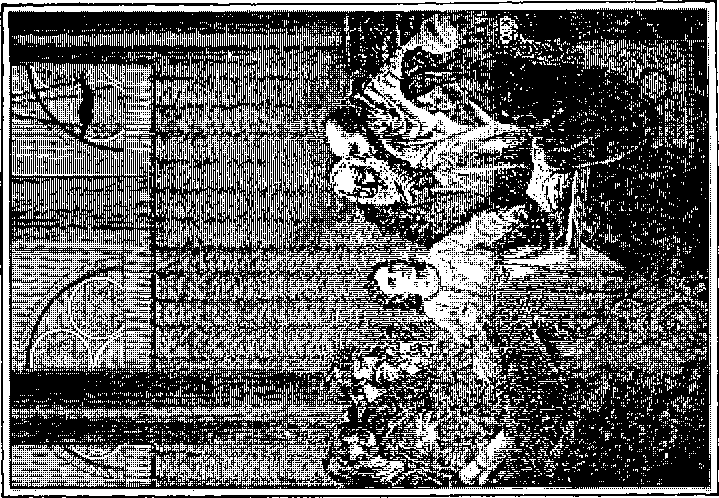THE BOY JESUS BEFORE THE LAWYERS
A brief history of the 7,000 years of sin, from the time when sin was unknown to the time when again there will be no sin.
Brief Scriptural biographies of MICHAEL who became the Christ, and of LUCIFER who became the devil.
In simple, pictorial language with many Scripture citations and quotations adapted to Intermediate Students of the Bible
100,000 Edition
By W. E. Van Amburgh
Published by International Bible Students Association Brooklyn, New York, U. S. A.
London, Toronto, Melbourne, Cape Town, Magdeburg, Berne, etc.
TO THE ONLY GOD OUR SAVIOR THROUGH JESUS CHRIST
OUR LORD
BE GLORY, MAJESTY, DOMINION, AND POWER, BEFORE ALL TIME AND NOW, AND
FOR EVERMORE.
Jude 25
R. V.
“Wherewithal shall a young man cleanse his way? By taking heed thereto according to thy word.”
“Oh how I love thy law! It is my meditation all the day.
Thy commandments make me wiser than mine enemies; for they are ever with me.
I have more understanding than all my teachers; for thy testimonies are my meditation.
I understand more than the aged, because I have kept thy precepts.
I have refrained my feet from every evil way, that I might observe thy word.
I have not turned aside from thine ordinances, for thou hast taught me.
How sweet are thy words to my taste! Yea, sweeter than honey to my mouth.
Through thy precepts I get understanding: therefore I hate every false way.”—Psalm 119:9, 97-104, R. V.
“Thy words were found, and I did eat them;
and thy word was unto me the joy and rejoicing of mine heart.” Jeremiah 15:16
Copyright 1924 by PEOPLES PULPIT ASSOCIATION Brooklyn, N. Y., U. S. A. PRINTED IN U. S. A.
To Parents:
HAVE you considered your responsibility to your children? You want your children to succeed. Have you considered the way that leads to certain success? Children are God-given. "Lo, children are an heritage of the Lord.” (Psalm 127:3) The fact that God made it possible for you to have children implies that he intends for you to make provision for them. He so instructs in his Word. The Christian who provides not for his children is worse than an infidel. (1 Timothy 5:8) Such provision is not limited to natural food and raiment. These are but temporary. It is of greater importance to provide for the education and training of children, because these things are lasting. "Train up a child in the way he should go; and when he is old, he will not depart from it.”—Proverbs 22: 6.
If you would have your children succeed and bless your name in years to come, then train the child aright. Begin early and continue the training as long as the children are under your jurisdiction. Proper training will bind them to you with unbreakable ties of love.
The Lord Jesus loved children. Concerning this it is recorded that "he took them up in his arms, put his hands upon them, and blessed them.” (Mark 10: 13, 16) Jehovah manifested his love for the children by commanding his chosen people to be diligent in teaching the children concerning his law. (Deuteronomy 6: 7) "Gather the people together, men, and women, and children, . . . that they may learn, and fear the Lord your God, and observe to do.”—Deuteronomy 31:12.
Parents are admonished to make provision for the future aid of their children. (2 Corinthians 12:14) The lasting provision that will bring success and happiness i
to your children is to educate and to train them in the proper way. You may be sure that the proper way to train a child is God’s way. That you may thus train them, and as an aid to training themselves, you should provide them instruction upon God’s Word. This knowledge they cannot acquire by merely reading the Bible. They must have some help to divide rightly the Word of truth. (2 Timothy 2:15) This book is published to provide that much-needed help. It tells the plan of God for the ultimate blessing of mankind with endless life and happiness, and tells it in such simple and plain phrase that it not only is interesting and fascinating, but makes a lasting impression upon the mind cf the child. It points out the perfect, divine, and therefore the only possible, way that leads to success in the broadest sense of that term. It affords an opportunity to lay the foundation upon which the child may build enduring character. Its real value cannot be measured in gold.
To the Children:
EVERY good child has a keen desire to grow into manhood or womanhood and to become useful and important in governmental affairs. For many centuries your ancestors have diligently sought ways and means to establish a righteous and enduring government. They have been greatly disappointed. Long ago Jehovah, the great Giver of every good and perfect gift, promised that in his own due time he would establish on earth a righteous government which will rest upon the shoulder of his beloved Son, the Prince of Peace, and that this government will be the desire of all good people, showering upon them blessings of riches beyond man’s dreams. We have now approached the time when God is beginning to establish that great government. The greatest favor, then, that could come to a child just now is to learn God’s way and manner of establishing and conducting that government and then to prepare himself or herself to have part in the affairs of that government. This would insure you a blessing, and make you a bless-ii
ing to others and make your name honored among mem
The Bible contains a statement of God’s plan of action for the establishment of his great and good government. The Bible could not be understood until God’s due time to have it understood. That due time is here now because the time has come to establish his government. Now it is possible for even the children to understand the divine plan as set forth in the Bible.
This book is prepared for the express purpose of enabling boys and girls quickly to grasp a knowledge of the new order of things which the Lord is beginning to establish in the earth, and to point them to the way that will lead each boy and girl who obeys to complete success, joy and happiness. It describes in detail the Ruler of this new and righteous government. It shows what great love he has for the children and for their parents. It tells that he will restrain the oppressor, lighten the burden of the people, make the way of each one equal who does right, and bless them with peace. It points out that the blind eyes will be opened and the deaf ears again will hear; that the lame and the crippled will become strong, and grow up to perfection; that the sick will become well, and that in due time sorrow, suffering, and death will cease. It shows that the thorns and the thistles will be removed from the fields; that the fresh grass and flowers will replace them; that the desert shall blossom as a rose and all the earth become a blessed and happy place in which to live. It shows that every family will own a home and enjoy the blessings thereof, sit under their own vine and fig tree and eat the fruits thereof, and none shall make them afraid. It tells that the new Ruler, in the administration of the governmental affairs, will make all happy, until every one will be joining in praise to God and manifesting kindness to each other.
The Bible is a treasure of countless value for it points the way that leads to endless life and happiness. The more you read it the more you will love it, and the more will be your love for God and for your fellow men.
J. F. Rutherford.
Contents
Chapter Page
VIII The Kingdoms of This World .... 151
IX The New Covenant, or Contract .... 175
X World Number Three, the Kingdom of Christ 187
XII The Kingdom of God, God’s Perfect Work 237
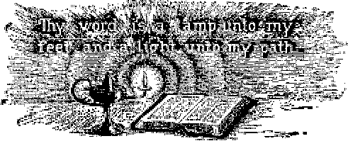IN ALL the world there is no book like the Bible. It is not a single book, but a library of books. The first five books of the Old Testament Genesis, Exodus, Leviticus, Numbers and Deuteronomy, are called the Pentateuch, from the Greek words, “pente,” five, and “teuchos” book. They were written by Moses, during the forty-year wanderings of the Children of Israel in the wilderness, between the years 1615 and 1575 before Christ.
These books contain the record of the creation of the earth and of man, its sovereign. They give a connected chronology from Adam to Moses. They relate the origin of the Jewish nation. They contain the code of laws which God gave to that nation, and a record of his dealings with it for forty years. They record an agreement, or covenant, between God and Israel. The word testament also means covenant; hence the title, Old Testament. “These are the statutes and judgments and laws, which Jehovah made bell
tween him and the children of Israel in Mount Sinai by the hand of Moses.”—Leviticus 26:46.
These books contain the record of the construction, setting up, and ceremonials of the Tabernacle, which the apostle Paul tells us were “a shadow of good things to come” (Hebrews 10:1), or a picture of better things to follow. They relate the incidents of Jewish history which occurred during their forty years wandering, of which St. Paul tells us: '“All these things happened unto them for types: and they were written for our admonition.” (1 Corinthians 10:11) These first five books, are also called the “Book of the Law.” (Joshua 1:8) They close with the death of Moses, 1575 before Christ.
The next twelve are known as the Historical Books; for they continue the history of the Jewish nation for approximately eleven hundred years, 1575 B. C. to about 450 B. C. We do not know the names of the writers of all these books. Only a few connected their names therewith, and no records now extant give the information. Some take their names from the credited writers, such as Joshua, Ezra, and Nehemiah, though these made no mention of themselves as the writers. Some are named from the principal actor mentioned; as Ruth, Samuel and Esther. Judges, the First and Second Kings, and the two books of Chronicles are brief epitomes of long histories. These are very valuable for they give the only reliable connected history of those times. The books of Ruth and Esther are interesting side lights on the family and social life of those times, in addition to the valuable historical information which they supply.
The next five books, Job, The Psalms, Proverbs, Ecclesiastes and the Song of Solomon, are known as the Poetical Books. Therein is found some of the best and most inspiring poetry ever written.
The story of Job and his friends and their discussions is acknowledged to be one of the world’s masterpieces of literature and logic. It was written about the time of Moses.
The Book of Psalms is a collection of one hundred and fifty poems, mostly written by David, the Beloved, who in some phases of his life typified Christ. David, known as the Poet King, was also an expert musician, and many of his psalms were chanted by the priests in their Temple service. “There is no other Book of Praise so pregnant with expression of the heart’s emotions under all the vicissitudes of life, or so adapted to all climes and ages, as to be the universal medium of praise for all nations of the world.” The Psalms also contain some bits of history not found in other books.
Proverbs is a manual of rules for daily living which are applicable to all ages and conditions of life. Solomon is credited with having written most of them.
Ecclesiastes is also credited to Solomon; and was probably written near the close of his eventful life. In this book the writer calls attention to the emptiness of the present life, even though surrounded with all the luxuries, pleasures and honors which he was privileged to enjoy.
Song of Solomon, or The Song of Songs, is the best of 1,005 songs composed by Solomon, and the only one now extant. The claim has been made by some that it was a Marriage Ode composed by Solomon on his nuptials with the daughter of Pharaoh. In many features it is figurative of the marriage of Christ and the church.
The Jews hold all these poems in high esteem. They are gems of literature, mines of knowledge, filled with reverence and praises to God, and contain many of his promises concerning his coming kingdom.
The next seventeen are known as the Prophetical Books, written by sixteen different writers. They contain some history, many messages of admonition from God, and many prophecies relating to the Jews and also to the Gentile nations. Some of these are short-time prophecies of events to follow soon; others, of events that would come to pass hundreds of years in the future. These prophets lived during a period of about 450 years, approximately from 860 to 400 B. C. Exact dates cannot be ascertained in all cases. The Prophetical Books overlap part of the time covered by the Historical Books. We will make a closer study of some of these later.
Over two thousand years ago there were given by those men of God prophecies which are being fulfilled in our own times. To locate them and watch their fulfilment is intensely interesting. The evidence is clear that God, and not the prophets, was the real author of the Bible. St. Peter tells us they wrote “as they were moved by the holy spirit." (2 Peter 1:21) We know that only God could foretell the future with accuracy.
In all these thirty-nine books, containing many messages from God, and touching upon a great variety of subjects, there are none written by Gentiles, nor do they contain any messages direct to the Gentiles with the exception of the message sent to Nineveh through the prophet Jonah. But even Jonah was not commissioned to try to convert the Ninevites to accept God or even to worship him. There is much said about the Gentiles, but nothing to them directly. Through his prophet Amos, God said to the Jews, “You only have I known [recognized'] of all the families of the earth.”—Amos 3: 2.
This completes what is known as the Old Testament. The last prophet before the time of Christ was Malachi, about 400 B. C. Only one more prophet was sent to the Children of Israel, John the Baptist, about 29 A. D. He was the herald of the Lord himself; Jesus said that John was one of the greatest of all prophets.—Matthew 11:11.
In the New Testament also there is mention of a covenant—that between God and the Christ. The New Testament has twenty-seven divisions, sometimes called books, many of them in the form of letters, written by apostles to various little churches or classes of Christians, or to individuals. The first four, Matthew, Mauk, Luke and John, are known as the Gospels, messages of Good News. They are brief histories of the events connected with our Lord’s first advent, and records of some of his sermons, sayings, parables, and miracles. The fifth, known as the Acts, or the Acts of the Apostles, was written by the physician Luke, who was much with the apostle Paul. It is a history of the early church for a period of about thirty years after the death of Jesus.
Following the Acts are twenty-one letters, called Epistles, of which the apostle Paul is said to have written fourteen, the apostle John three, the apostle Peter two, St. James one, and St. Jude one. These were written between the years 45 A. D. and 65 A. D. The Revelation, the last book in the Bible, was written last, about 95 or 96 A. D. It is the record of a vision given to the apostle John, while he was a prisoner of the Roman government, confined on the rocky island of Patmos in the Aegean Sea, south from where Constantinople now stands. The first verse suggests the title: “The Revelation of Jesus Christ, which God gave unto him, to show unto his servants things which must shortly come to pass; and he [Christ] sent and signified it [sign-i-fied it—told it by signs] by his angel unto his servant John."
The time for writing the entire Bible was. from about 1615 B. C. to 96 A. D., approximately 1,700 years. The most prominent personality of the Old Testament is Jehovah God; the most prominent nation is Israel; and the most prominent theme in type and prophecy is the kingdom of God to be established on earth. Christ Jesus, the Son of God, is the most prominent personality of the New Testament. “The church,” sometimes called “The saints,” “The body or Christ,” “His brethren,” “The bride of Christ,” “His wife,” is the most prominent class. The principal, theme of the New Testament is the selection of these “saints,” their sanctification, their training, and their perfecting, necessary to their preparation for the kingdom of God, in which they are to participate as kings, judges and priests, associated with Christ.—Revelation 3:21; 1 Corinthians 6:2; 1 Peter 2: 9.
The New Testament is not addressed to the world nor to sinners, nor is there any hope held out that the world will be converted before Christ returns for his bride. The object of his return is to establish God’s kingdom, for which he taught his disciples to pray: “Thy kingdom come. Thy will be done in earth as in heaven.” The apostle Paul in his second letter to Timothy (3:16,17) says: “All scripture is given by inspiration of God, and is profitable for doctrine, for reproof, for correction, for instruction in righteousness; that the man of God may be perfect, thoroughly furnished unto all good works.” It is the textbook of God’s law for Christian students in the school of Christ, who must pass a critical examination before they can secure the greatest of all prizes ever offered by Jehovah to any of his creatures. (2 Peter 1: 4; 1 Peter 4:12,13) The apostle Paul expresses the key-note of the New Testament in his letter to the Philippians (3:13,14): “This one thing I do , forgetting those things which are behind, and reaching forth unto those things which are before, I press toward the mark for the prize of the high calling of God in Christ Jesus.”
No other book has been so loved by its friends as the Bible. Millions have testified of their love for it and of their faith in it, and have died in its defense. It radiates an influence for good such as has never been known of any other book. It is remarkable that without exception those who follow its principles and precepts become enlightened, just, peaceful, loving, contented, and happy.
On the other hand, no other book has ever been so hated and persecuted by those who oppose its teachings. Again, the records of history show that individuals and nations that have opposed the Bible have manifested a disposition to be unjust, intolerant, merciless, unhappy, revengeful, and in many instances have resorted to murder. Following the great persecution of the Bible and of those who believed in it, which began shortly after the time of Christ, the world went under the darkest cloud of cruelty and prejudice known since the time of the flood. Historians have named that period the Dark Ages. "Whole nations dropped into ignorance, superstition, and persecution. Many of the persecutors acted like demons. Is not this a most remarkable testimony in favor of the Bible ?
The Bible contains the only clear record of the origin of the human race, and traces that record from father to son for over two thousand years, then by reliable statistics to the year of the world 3,592, which it calls the “First year of Cyrus, king of Persia." This particular year is known in secular history as 536 B. C. After bringing the record of man down thus far and connecting it with a reliable secular record, the Bible history becomes disconnected; and it is impossible to follow further chronologically. This again manifests an oversight by Jehovah in preserving the Bible record correct to such time as we can rely on secular history.
The Bible gives the only intelligent, logical, and scientific description of the formation of the earth. As scientists further uncover the hidden secrets of nature’s record, these are found to coincide fully with the statements of the Bible. Chancellor Dawson, who has given this subject a most patient and critical examination, thus expresses the result of his investigation: “The order of creation, as stated in Genesis, is faultless in the light of modern science and many of its details present the most remarkable agreement with the results of sciences born only in our day.” Professor Dana, a writer of much prestige, says of the Mosaic record account of creation: “The first thought that strikes the scientific reader is the evidence of Divinity, not merely in the first verse of the record and its successive fiats, but in the whole order of creation. There is so much that the most recent readings of science have for the first time explained, that the idea of man as its author becomes utterly incomprehensible. By proving the record true, science proves it divine; for who could have correctly narrated the secrets of eternity but God himself ?” He further says: “The grand Old Book of God still stands; and this old earth, the more its leaves are turned and pondered, the more will it sustain and illustrate the sacred Word.”
One of the most remarkable features of the Bible is its prophecies of future events, some reaching forward over two thousand years. Many of these have already been proved true by the records of history; some are being fulfilled now. The only ones unfulfilled are those for which the time of fulfilment has not yet arrived. We will briefly notice a few which have already been fulfilled.
God told Noah to build an ark; for there would be a great flood of waters upon the earth about one hundred and twenty years later. (Genesis 6:3, 13-16) The Bible record is that the flood came on time, 1,656 years from the creation of Adam. The records left upon the earth’s surface give evidence in harmony with the Bible. The great alluvial deposits in Mesopotamia; the snow, the glaciers and the ice-caps at the poles; the paths of great glaciers moving equatorward; the fact that animals have been found frozen in solid ice, with undigested food in their stomachs—these and many other evidences prove that there was a great and sudden change in the earth’s atmospheric conditions at some time in the past, though, of course, these records do not give dates in years. The traditions of nearly every heathen nation make some reference to the fact that there has been a great flood upon the earth.
In the second, seventh, and eighth chapters of Daniel, the prophet outlined four monarchies, bearing world-wide rule: The Babylonian, the Medo-Persian, the Grecian and the Roman. Every reader of history knows that these followed in the succession stated in the prophecy. In the eleventh chapter, Daniel gives such clear descriptions of some notable characters to appear on the scene of world power activities that they are easily recognized in the records of history; as for instance, Alexander the Great, Caesar Augustus, Tiberias Caesar, Mark Antony, the queens Cleopatra and Zenobia, and later Napoleon Bonaparte. The expression in the 29th verse, “At the time appointed,” refers to the defeat of Napoleon by the English under Admiral Nelson in Aboukir Bay, in 1798. This was foretold two thousand three hundred and thirty-two years before that great naval battle actually occurred, and it was further specified that the event would occur “at the time appointed.” How could Daniel know thus far ahead, unless God had told him? In the twelfth chapter he also foretells that shortly after Napoleon’s time “Michael shall stand up, . . . and there shall be a time of trouble such as never was since there was a nation even to that same time: . . . many shall run to and fro, and knowledge shall be increased.” We are now in that time of trouble, and we see the running to and fro and the increase of knowledge.-—Daniel 12:1-4; Matthew 24:21.
Another prophet, Nahum, tells us of the modern methods of land travel, saying, “The chariots shall be with flaming torches in the day of his preparation, . . . the chariots shall rage in the streets, they shall jostle one another in the broad ways: they shall seem like torches, they shall run like the lightnings.” Whenever we ride at fifty miles an hour behind a fiery torch, we are riding in one of the fiery chariots which Nahum said would come “in the day of his preparation.”-—Nahum 2:3, 4.
The apostles frequently call attention to the fact that some of the things which occurred in connection with the life of Jesus or with the
nation of the Jews or with the work they were doing, were done in order "that it might be fulfilled" which was previously foretold by some of the prophets. (Matthew 2:15, 17, 23; 4:14; 8: 17) We shall find many more remarkable things about the Bible as we proceed with our study.
Not only is the Bible God’s message to man, but it has been remarkable in a commercial way also. Complete Bibles are published in over one hundred different languages, and partial copies in over four hundred languages and dialects. There are nearly eighty different Bible Societies engaged in its publication and circulation. The British and Foreign Bible Society alone issues nearly two million copies annually. Hundreds of thousands of copies are given away to those who desire a copy but who are too poor to buy. Many periodicals, daily, weekly, semi-monthly, and monthly, carry some quotation from the Bible in each issue.
Truly the Bible is a wonderful book, in whatever way we may view it. And why not, if God is its Author and Protector? Through his prophet Isaiah, chapter eleven, verse nine, he tells us: "For the earth shall be filled of the knowledge of Jehovah, as the waters cover the sea.”
This is but a partial view, so to speak, of the outside of The Book. In our next chapter we will begin our study of the Story in the Book with a brief view of the Creation of the Earth.
Land and Amphibious Animals
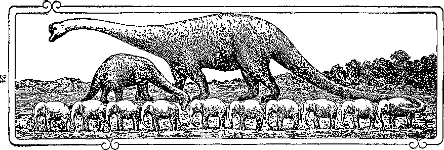GIGANTOSAURUS—THE LARGEST ANIMAL KNOWN—COMPARES WITH 10 ELEPHANTS AND A STEGOSAURUS.
The Creation of the Earth
WE HAVE all watched the erection of new buildings. At first all we saw were stone, cement, brick, lime, lumber, lath, shingles, kegs of nails, or paint, and materials of other kinds in irregular piles without any particular form or relation one to the other, and void of usefulness while in that condition. When the master builder came with his men, he set some to work excavating for the foundation, some to selecting and preparing the stones for the foundation walls, others to sorting the timbers for the sills, the studding, the sheathing, etc. As soon as the foundation was completed, the erection of the framework began. It progressed in regular order until ready for the finishing work; and then the painters and decorators completed it. It became a home or an office or a public building. It was planned and built for a purpose.
In other words, the mind or spirit of man decided upon a plan; and after certain work was done with his materials, lo! there was a building. There was enough stone, brick, lumber, shingles, and all else needed; but there was nothing left over. This showed careful forethought, and ability to work according to the plan. When the scaffolding was removed and the yard cleaned up, the people soon moved in. What a change!
Where before had been a vacant lot was now a beautiful home. Some one had said: “Let there be a house,” and there was a house. Of course it took planning, materials, work, and time to bring it about.
Whenever we see a building, we know that some one constructed it. It could not have built itself. If it is a large building, we know instinctively that the designer had large ideas, and large ability to carry his plans to completion.
As we look at the earth on which we live, large, well made, and well adapted to the needs of the creatures that live upon it, we know that the Creator had large plans, great ability, and the needs, comforts and pleasures of his creatures in mind. It is hung on nothing, speeding through space at nearly seventy thousand miles an hour, and revolving on its axis every twenty-four hours, thus giving day and night to the entire surface. There are oceans, seas, lakes, and rivers. There are mountains, plains, and valleys, decorated with trees, flowers, and grass. There are fruits, nuts, grains, and vegetables; fish, birds, and animals, living and enjoying life. There are cotton, wool, and silk for our clothing ; lumber, stone, and clay of which to make mortar and brick with which to build our houses. There are all sorts of minerals and metals with which to make tools, machines, shops, railroads, and ornaments of every kind. We have a great variety of colors in ochres and chemicals with which to paint our houses and our pictures.
The laws of nature have been so arranged that water will expand and make steam, and gasoline will explode and supply power. The mighty giant Electricity can be harnessed to almost every kind of machine to do our work; from lighting our homes, running our machinery, street-cars, and elevators to warming our houses, sweeping our floors, washing and ironing our clothes. It will carry our voices over the telephone so that we may talk with our friends hundreds of miles away; and now by means of the radio it will bring concerts and lectures from thousands of miles away and deliver them immediately in our homes. Light is another servant ready to photograph for us the beautiful scenes of nature, and the faces of our friends.
Did you ever hear of such a fairy house in all your life? How could God think of so many things? And we are finding more and more wonderful things almost every day. We wonder where it will end. The most of these are of no use to the animals or the birds; therefore they must have been designed for man. God thinks a great deal of man, and has prepared many things for him to enjoy.
When we examine our bodies, we are still more surprized. The human body is the most wonderful machine on earth. It sees, hears, tastes, smells, and feels; it thinks, loves, enjoys, and delights in its surroundings. When in perfect condition it will, if given proper food and environment, keep itself well, and never wear out, as we soon shall see. It is its own chauffeur. It brings forth after its own kind. Whoever heard of an automobile keeping itself repaired, or of bringing forth baby automobiles and having them grow up ? Truly the Sweet Singer of Israel says: “I am fearfully and wonderfully made: marvelous are thy works; and that my soul knoweth right well"; and “Such knowledge is too wonderful for me; it is high, I cannot attain unto it."—Psalm 139:14, 6.
If we think that the earth is large, what about the sun around which we circle every year? It is 866,200 miles in diameter, large enough to take in the earth and the moon 240,000 miles away, and its orbit. If we turn our telescopes to the sky we find there are millions of suns, many of them much larger than ours, each keeping strictly to its own race course, guided by some mighty power. The mighty sun Betelgeuse is said to be twice as much larger than our sun as our sun is larger than the earth, or 240,000,000 miles in diameter. If it were as close to ns as our sun is, it would cover our entire sky, and the heat would be so intense it would melt the earth. Again does David sing: “The heavens declare the glory of God; and the firmament showeth his handiwork." (Psalm 19: 1) The prophet Isaiah (40:25, 26) says: “To whom then will ye liken me, or shall I be equal? saith the Holy One. Lift up your eyes on high, and behold who hath created these things, that bringeth out their host by number: he calleth them, all by names, by the greatness of his might, for that he is strong in power: not one faileth."
The orbit of the Moon would fill only about one-half of the sun’s diameter
How did God make the earth ? How long did it take him to make it suitable for human habitation? The Bible answers our questions. We are not given all the details, but enough so that we can easily fill in the rest. The story is simply
told, in few words that all can understand. Let us carefully read the account as given in the first chapter of Genesis:
Verse 1: “In the beginning God created the heaven and the earth.” This refers to the time when God began the creation of this earth and its heaven.
Verse 2: “And the earth was without form, and void; and darkness was upon the face of the deep. And the spirit of God moved [Hebrew, brooded'] upon the face of the waters.” We shall
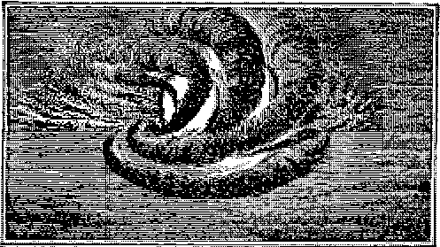see later this beginning of the ordering of the earth to make it suitable for habitation was approximately 48,000 years ago. The statement is that the materials of which God formed or created the earth and heaven were there, without form, and void of any usefulness in that condition. Science tells us that the materials of which this earth is composed were at one time in such superheated state as to be in gaseous form, and that it was whirling through space at a terrific speed. The mind of God, here called the spirit of God, began to work upon this seething mass to bring it into a condition of usefulness. These two verses would be very properly rendered as follows: “In the beginning [of the present order of things'] God created [that is, formed or shaped according to his own idea] the heaven [above] and the earth [below]. The earth had been waste and wild; and darkness was upon the face of the roaring deep. But the spirit of God was brooding on the face of the waters. And [this being the condition of things] God said [gave orders what to do],” etc.—Rotherham Translation.
Verse 3: “And God said, Let there be light: and there was light.” Light is a marvelous power. Just how it works, we may not fully understand; but that it does work is evidenced in nature all about us. The sunlight warms and fructifies the soil; it raises millions of tons of water in particles so small that we cannot see them, and other forces condense them into clouds which carry the rain over the surface of the earth. God set in operation this great power, to work upon the roaring deep of seething gas.
Verse 4: “And God saw the light, that it was good: and God divided the light from the darkness.” God exercised intelligence and wisdom, and also employed intelligent beings, the angels of heaven, to whom as assistants he gave instructions. The work was progressing properly. God saw that it was good.
Verse 5: “And God called the light day, and the darkness he called night. And the evening and the morning were the first day." We do not need to search far in the Scriptures to learn that the word day does not always mean twenty-four hours. It means a length of time, and may refer to an entire year, or a thousand years, or seven thousand years, or as we shall see later, in one instance to 42,000 years. (See Psalm 95: 8; Isaiah 19:18, 19; 2 Peter 3:8) When our study reaches that point, we shall see that the seventh day was 7,000 years long; and logically each of the other six would be of the same length. Science is in harmony with that thought.
Verses 6, 7: “And God said, Let there be a firmament in the midst of [between'] the ivaters, and let it divide the waters from the waters. And God made the firmament, and divided the waters which were under the firmament from the waters which were above the firmament: and it was so [done].” The power of light from some outside source, probably from the sun, during the first day had accomplished the desired result. There was a gradual cooling and condensation ; the heavier materials became molten, or liquid, in form. We may have seen melted lead or iron. Melted lead dropped through a sieve breaks into little drops, which by falling for some distance form into perfect globes. Thus shot is made. So the great molten mass which formed the earth whirling through space would become a globe. This would first be molten-hot, then white-hot, then red-hot, and still later, darker, but very hot, too hot to retain water. Any water or moisture falling upon the heated surface would immediately become steam, and constantly rise and fall again. The earth’s surface would finally become sufficiently cool for water to remain, but it would be boiling hot for a long time. Still later it would become merely warm.
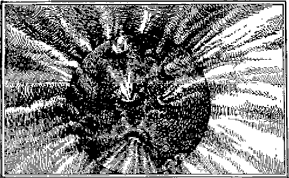Thus there would be water on the earth, and water as great steam clouds above it, with a space between. This space was called heaven, the heaved up. “And God called the firmament heaven, and the evening and the morning were the second day.”—Verse 8.
If the earth and the heaven were cut in two like an apple
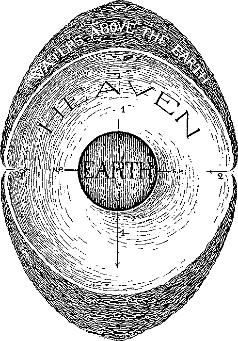1. Centrifugal force stronger.
2. Centripetal force stronger—Windows of Heaven.
Verses 20-23: “And God said, Let the waters under the heaven [those on the earth’s surface'] be gathered together into one place, and let the dry land appear: and it ivas so. And God called the dry land Earth; and the gathering together of the waters called he Seas: and God saw that it was good."
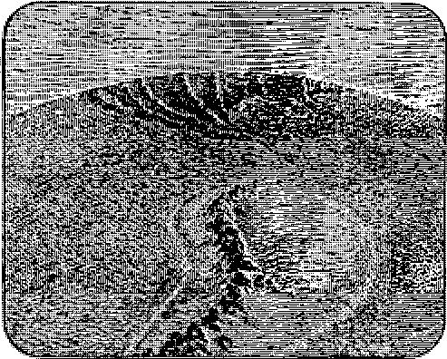Gradually the surface solidified, and formed a crust which was able to sustain more or less weight. Water always seeks the lower spots; and the crust, something like a rubber ball which if pinched in one place will bulge out at another, bulged out here and there and formed dry land. The water washing against the shores wore away particles; and thus sand was formed, which constituted a basis or soil for the roots of plant life later.
Verses 11-13: "And God said, Let the earth bring forth grass, the herb yielding seed and the fruit tree yielding fruit after its hind, whose seed is in itself, upon the earth: and it was so. And the earth brought forth grass, and herb yielding seed after its kind, and the tree yielding fruit, whose seed was in itself, after its kind: and God saw that it was good. And the evening and the morning were the third day.”
It took another day of 7,000 years to bring about gradually the next great change. The earth was then ready to support plant life in its many thousands of forms. The statement is very simple; but we have the witness all about us in the great variety of vegetation, and we know that every seed will bring forth its own kind and no other. How many kinds of fruit trees can you name? How many varieties of apples can you name? Write a list and see.
As yet the direct rays of the sun could not penetrate the thick clouds which still surrounded the earth. The light was similar to that in a dimly lighted room; yet plants will grow even in very limited light. The clouds were gradually thinning; the light was becoming brighter.
Verses 14-19: “And God said, Let there be lights in the firmament of the heaven to divide the day from the night; and let them be for signs, and for seasons, and for days, and years; and let them be for lights in the firmament of the heaven, to give light upon the earth: and it was so[the work was done according to his instruction]. And God made tivo great lights [great in comparison to the darkness which had prevailed to that time]; the greater light to rule the day, and the lesser light to rule the night', he made the stars also. And God set them in the firmament of the heaven, to give light upon the earth, and to rule over the day and over the night, and to divide the light from the darkness: and God saw that it was good. And the evening and the morning were the fourth day.”
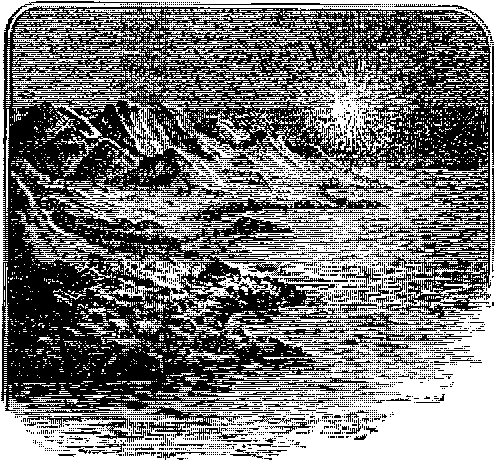The work of creation was going on orderly, and as rapidly as God had designed. It was all very good, and on time. We might ask the superintendent in charge of the building when he only had the framework up how he was getting on; and he would reply: “Very well, right up to time, and according to plan.”
We are not to understand that the earth was created long before the sun was. The sun is the center of our solar system, and the earth was probably revolving around it all this time; but the clouds about the earth were so dense that the direct light from the sun could not penetrate them.
Can you remember a day when it was so cloudy that you had to light the lights to see to work in the house? You could see to get around, but not to do much work. Later it cleared up; and you did not need the lights, even though it continued to be so dark that you could not see the sun. It was so in this creation day. The clouds around the earth had been so dense that nothing could be seen distinctly. Gradually they thinned until it became light enough to distinguish between day and night. As there was some light to rule the night, it could not have been absolutely dark at anyplace.
We may easily illustrate this by supposing that we were in a room shaded with light curtains, with the windows facing the east. When the sun rose in the morning, bright and clear, it would flood the room with light, although we could not see the sun itself. At evening the light, coming from the west, would be much less in our room, though it would not be dark; for the air would reflect some of the light into the room. The brighter light would rule the forenoon, and the lesser light would rule the afternoon; it would not be entirely dark, but we could easily tell the difference. So the statement here. There was more light for the day and less for the night, whether the light came from the sun or from the moon.
Suppose we try a little experiment: Take a ball, and run a small stick or wire through the center. Let the ends stick out, so that you can hold them in your fingers. Fasten the wire so tightly that you can turn the ball with it. Dip the ball entirely into water, and then let the loose water drop off, but with the surface still wet. Now twirl the ball as fast as you can by the little ends of wire that you hold in your fingers. Then examine it carefully. You will find that it has become dryer near the poles, but wetter at the outside or at what might be called the equator. Possibly some drops flew off. What caused that? The outside of the ball was going very fast, but the poles were moving slowly. The speed at the outside tended to throw the water off. If your ball is made of strings, with the ends loose, the loose ends will fly out like the hair on your head in the wind. The force that tends to throw the water off is called centrifugal, or the throwing-off force.
If the earth is turning so fast, why does it not fly to pieces? By putting a good cover on your ball you could hold the water or the ends of the strings down tight. So God provided a cover to hold the earth down tight. This cover is not made of leather, but is very powerful, and is called gravitation, or that which holds the earth together. This is sometimes called the centripetal or pulling-together power. It is this power of attraction that keeps the earth from flying to pieces while it is going so fast; just as the cover on your ball keeps it from going to pieces when you throw it. The clouds, not being held down tight, however, on account of their great speed gradually worked from the poles towards the equator, and became thinner at the poles. Thus more light would shine in there. In time the clouds near the poles might become so thin that if any one were on the earth, the stars could be seen at the north or south poles.
The great cloud-belt of superheated steam would also act as a protector, like the glass covering of a green-house, keeping the cold out and the heat in. There would be no torrid, temperate, and frigid zones. All would be alike; and animals and plants of all kinds could live at the poles as well as the equator. That this was true has been proved by the discoveries of animals frozen in great masses of ice, in the polar regions; also remains of tropical plants have been found, broken off, where some of the great glaciers have melted, showing that at some time they were growing there.
Verses 9,10: "And God said, Let the waters swarm with swarms of living creatures, and let the birds fly over the earth in the open firmament of heaven. And God created the great seamonsters and every living creature [Hebrew, living soul] that moveth, which the waters brought forth abundantly, after their hinds, and every winged bird after its kind; and God saw that it was good. And God blessed them, saying, Be fruitful, and multiply; and fill the waters in the seas; and let the birds multiply in the earth. And the evening and the morning were the fifth day.3’
The work was proceeding well. During the fifth 7,000-year day there appeared sea life of
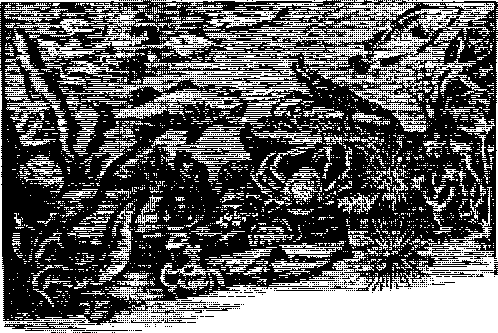all kinds, and birds of great varieties and numbers. In the museums are to be found skeletons of some of the monsters of those early ages; such as the ichthyosaurus, and gigantosaurus. Fossils of the latter have been found 160 feet long. As these monsters lived and died, their bodies added to the fertility of the soil, thus preparing for the next epoch. God has a great variety of means and processes for bringing about his desired purposes. At the end of the fifth day there was great life activity upon the earth. A further step could now be taken.
Verses 24, 25: "And God said, Let the earth bring forth the living creature [living soul] after his kind, cattle, and creeping thing, and the beast of the earth after his kind: and it was so. And God made the beast of the earth after his kind, and God saw that it was good.” Simply and clearly the story continues. God then brought forth land animals of many kinds: Some very large, such as the mastodons and elephants; and the smaller varieties, like the horse, cattle, dog, sheep, goats, squirrels, etc.
There was no intermingling of species, but each was "after its kind,” and we see the same law continuing today. Each variety brings forth after its kind. God carries on his work in an orderly way and without confusion. How many varieties of sea life or of birds or of animals were created is not stated; but judged from the fossil remains found in the earth’s surface, and from the number now known to exist, there must have been a great many. We marvel at God’s ability, as we see that it is not necessary for him to duplicate his works.
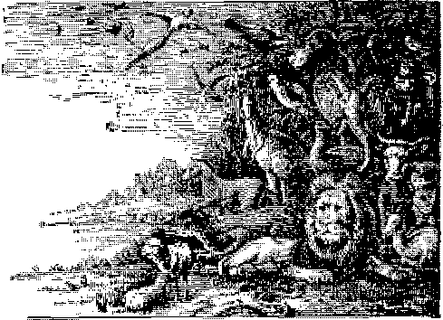ANIMAL CREATION
Another day had almost passed; and the one-for whom all this preparation had been made had not yet been created. For whom could it be that God was making so great preparation? In our next chapter we shall learn about the creation of the king of earth.
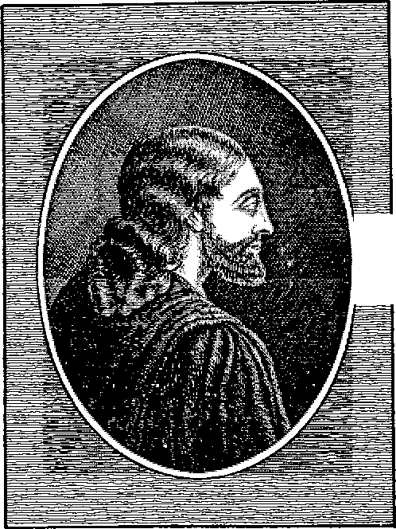UH
The Creation of Man
THE work of creation was progressing properly and nearing completion. At the beginning of each day “God said,” gave his servants the angels instructions for the day. (Genesis 1: 3, 6, 9, 14 and 20) As occasion demanded he looked over the work already completed and commended it, saying that it was good.—Genesis 1:4, 12, 18, 21 and 25.
We may speak of Mr. A. as building a house, though personally he may do no work upon the building. He drew up the plans, furnished the money, and superintended the work. Jehovah had the plans, supplied everything necessary, and passed upon the work.
“For thus saith Jehovah that created the heavens; God himself that formed the earth and made it; he hath established it, he created it not in vain, he formed it to be inhabited [by man]." (Isaiah 45:18) “The heaven, even the heavens are Jehovah’s, but the earth hath he given to the children of men." (Psalm 115:16) “Blessed are the meek [among men]; for they shall inherit the earth." (Matthew 5:5) These and many other scriptures state positively that God made the earth to be the home of man.
In verse 26 of the first chapter of Genesis we
notice a difference in expression when it comes to the creation of man. It reads: “And God said, Let us make man in our image, after our likeness.” Who are the “us” here mentioned?
The apostle John answers in the first three verses of his Gospel. We quote it from the original Greek, as that gives the clearer thought: “In a beginning [the beginning of creation] was the Logos [the Word—Christ], and the Logos was with the God [Jehovah God], and the Logos was a God. This [One—the Logos] was in a beginning with the God [Jehovah]. By it [the Logos] was everything done, and without it not even one thing was done which has been done.”
Here we are informed who were the two who were consulting together in regard to the creation of the king of earth. He was not to he in their image as to the form of body or place of habitation, but in the sense of being ruler over a dominion, as is clearly stated in the remainder of the verse. To be fitted to be a king he would need suitable qualities of mental powers of reason, memory, judgment and will, and the moral qualities of justice, benevolence and love.
In the second chapter of Genesis we have another, though much shorter, description of the creation. Beginning with verse four we read: “These are the generations [history] of the heavens and of the earth when they were created, in the day [Here the word day covers the whole six days of chapter one, or 42,000 years.] that Jehovah God 'made the earth and the heavens, and every plant of the field before it was in the earth, and every herb of the field before it grew: for Jehovah God had not caused it to rain upon the earth, and there was not a man to till the ground." By the close of the sixth day all the animals had been created, but not one was capable of tilling the soil or of having charge of the earth.
Therefore "Jehovah God formed man of the dust of the ground, and breathed into his nostrils the breath of life; and man became a living soul [living being].” (Genesis 2:7) This was the one for whom God had created the earth. Where did he come from ? He did not come from anywhere. God created him, right here on the earth, from materials of the earth. "And Jehovah God planted a garden eastivard in Eden; and there he placed the man whom he had formed. And out of the ground made Jehovah God to grow every tree that is pleasant to the sight, and good for food; the tree of life also in the midst of the garden, and the tree of knowledge of good and evil. And a river tvent out of Eden to water the garden. . . . And Jehovah God took the man and put him into the garden of Eden to dress it and to keep it.”-—Genesis 2: 8-10, 15.
The word Eden means Place of Delight. God had specially prepared it for this king of earth as his royal abode. Picture in your mind the most beautiful park and grounds you have ever seen: Beautiful trees of every kind—fruit trees, nut trees, and flower trees, tall trees, and wide-spreading shade trees; flowers of every variety, form, color, and fragrance; birds of almost endless variety, some with gorgeous plumage, and others singing their songs of gladness and joy as they flitted among the trees, or stopped to be fondled by their master and friend; squirrels, chipmunks, and other lively little creatures frisking up and down the trees, playing with each other; other animals lounging on the grass or feeding in the meadows or among the trees and shrubs; the rippling water of the river flowing over the stones and the fish sporting in it; every creature happy in its sphere and nothing to harm or make afraid. The sheep and the lions, the cows and the bears, fed together and never harmed each other. Take time to think it over. Truly it was rightly named a Place of Delight, fit for the king and his queen. There was delight for the eye, the ear, the nose, the tongue, and the touch. Every fruit was delicious to Adam as he ate his meals in the shade of some bower, while the birds furnished the music, and the saucy squirrels watched and possibly shied up to get a nut or fruit. Their furry little coats were soft to the touch of the hands that fondled them. Then they might play hide and seek with their master as he walked in the garden. Would you like to live in such a Place of Delight?
Jehovah himself. We cannot imagine that God would have an unpleasant dwelling spot for the one for whom he had already made so great preparation. What was Adam created for? Just to have a good time and a pleasant place to live in? Or did God have some work for him to do ? "And God said, Let us make man in our image, after our likeness; and let them have dominion over the fish of the sea, and over the fowl of the air, and over the cattle, and over all the earth, and over every creeping thing that creepeth upon the earth. So God created man in his own image, in the image of God created he him; male and female created he them. And God blessed them, and God said unto them, Be fruitful, and multiply, and replenish [fill] the earth and subdue it; and have dominion over the fish of the sea, and over the fowl of the air, and over every living thing that moveth upon the earth." (Genesis 1:26-28) In Psalm 8:4 we read: "What is man, that thou art mindful of him? and the son of man, that thou visitest him? For thou hast made him a little lower than the angels, and hast crowned him with glory and honor. Thou madest him to have dominion over the works of thy hands: thou hast put all things [on the earth] under his feet."
Look at the picture here drawn in such few words. If Adam were created in the image and likeness of God, he could not have been imperfect ; for God himself is perfect, and all his work is perfect. (Matthew 5:48; Deuteronomy 32:4) In Genesis 1:26 God twice stated that it was his purpose to create Adam in his image, and in the twenty-seventh verse he twice stated that he did so. Adam would in this sense be in God’s image.
God was the great Ruler of the universe. He had dominion over all the heavens and the angels of heaven. Adam was given dominion over all the earth and over all the creatures upon the earth. In this respect also, he was in the image and likeness of his Creator. He could reason and talk and enjoy and appreciate the things which God had given him. He was king of the earth, with full ability in every way to fill his position with honor and dignity, as God filled his position as King of the universe.
God had a further work for Adam; he was to "be fruitful and multiply and replenish, the earth [with children in his own likeness after his image}." (Genesis 1: 28; 5: 3,. 4) How could he do this by himself? He may have seen the animals bring forth their young, and the birds brooding over their little ones. The earth was very large for only one human being. God’s plan was to have an earth filled with people like Adam. He was to be their father but not their master, as he was the master or king of the animal creation. To this end one thing had not been provided for Adam, though it may be he had not yet missed it. He had been busy enjoying the blessings he already had.
God had arranged a pleasant experience for Adam, that he might feel his need of something else. God caused all the animals and all the birds to pass before Adam, and gave him the pleasure of naming them. This may have been as he was daily walking through the garden, studying all the various species of animals and birds he saw; or it may be that God caused them all to pass before Adam in a grand parade. As details are not given, we may think of it in either way we prefer.
Consider for a moment what a memory he had, to be able to recall all the names he had given. If he were like some of us, he would have had hard work to remember more than twenty or thirty; but when we know that there were hundreds of varieties and probably by that time many of each variety, we realize more the capacity of the memory of a perfect man. His mind was perfect; therefore it was no great task for him to remember every individual animal or bird that he had seen and the name that he had given it, even if there were many thousands of them. He would know all his subjects, and in this respect also he would be “in the likeness of God”; for God knew and had named all the hosts of heaven.—Psalm 147:4; Isaiah 40:26.
History mentions some men who had very remarkable memories, even though they were not perfect like Adam. It is related of General Xenophon, who led an army of Greeks on their retreat from the Tigris to the Black Sea after the defeat of Cyrus the Younger at Cunaxa, that he could call every one of his 10,000 soldiers by name. It is said of James G. Blaine, who was twenty years in Congress, that he could instantly recognize and call by name any person to whom he had ever been introduced. We have heard of men who could quote the entire Bible word for word, and of men who could read a book, lay it aside and rewrite the book word for word from memory. When God gave Adam a perfect mind, he gave him a treasure far more valuable than we can at present estimate. The loss of a perfect mind is part of the lost estate of our father Adam. Suppose we were able to read a dictionary through and then recall the definition of every word therein. It would not be so hard to remember our lessons, would it?
Adam could talk to the animals, but they could not talk to or with him; for they had not the gift of language. It is true that animals and birds have a limited means of communication with each other, and often manifest affection to man; but they have no means of expression in comparison with their king, man. Think of reading a book to your dog, or of asking your bird how much two dozen eggs would cost at forty cents a dozen, or of asking a cat to count twenty!
After Adam had become acquainted with them and named them all, he probably felt somewhat lonesome. He had the privilege and pleasure of fellowship with the angel who walked and talked with him in the cool of the evenings; but how delightful it would be if he only had a companion with him all day, one who had a mind and body like his own, to enjoy his blessings with him. All the animals and birds had mates, and paired by themselves, and rejoiced in mutual fellowship, and brought forth each after its kind; but there was no mate for Adam. It is often well for us to feel our needs beforehand, in order that we may better appreciate the favors when they are supplied.
"And Jehovah God said, It is not good that the man should be alone; I will make a help meet [suitable'] for him. And out of the ground “Jehovah God formed every beast of the field, and every fowl of the air; and brought them unto Adam to see what he would call them; and whatsoever Adam called every living creature, that was the name thereof. And Adam gave names to all the cattle, and to the fowl of the air, and to every beast of the field; but for Adam there was not found an help meet for him." (Genesis 2:18-20) No doubt but Adam wondered why there was no companion for him.
“And Jehovah God caused a deep sleep to fall upon Adam, and he slept; and he took one of his ribs, and closed up the flesh instead thereof, and the rib which Jehovah God had taken from man, made he a woman, and brought her unto the man. And Adam said, This is now bone of my bones and flesh of my flesh: she shall be called Woman, because she was taken out of Man." —Genesis 2: 21, 22.
Can we imagine the surprize and joy of Adam as he first beheld his beautiful Eve? If everything God had made was very good, both Adam and Eve must have been beautiful, Godlike creatures, as they came direct from the hand of their Creator. Not an imperfection about them. "What more could they ask than their loving Creator had supplied? It would have been a pleasure to see them in their beauty and in their delightful home.
But we have not examined it all yet. God had provided that they might live in this Place of Delight forever, and bring forth their children to enjoy it with them. God had built the earth to last. (Psalm 104:3) He also made man to live forever and provided for his everlasting life. "And out of the ground made Jehovah God to grow every tree that is pheasant to the sight, and good for food; the tree of life also in the midst of the garden. . . . And Jehovah God commanded the man, saying, Of every tree of the garden thou mayest freely eat." (Genesis 2:9, 16) The tree of life was there, that he might eat and live forever. Again, "And God said, Behold, I have given you every herb bearing seed, which is upon the face of the earth, and every tree in the which is the fruit of a tree yielding seed; to you it shall be for meat [food]. And to every beast of the earth, and to every fowl of the air, and to every thing that creepeth upon the earth wherein there is life [Hebrew, living soul] I have given every green herb for meat; and it ivas so. And God saw everything that he had made; and, behold, it was very good. And the evening and the morning was the sixth day."—Genesis 1: 29-31.
Just at the close of the sixth day, and the beginning of the seventh, God completed the work of creation: "Thus the heavens and the earth were finished, and all the host of them. And on the seventh day God ended his work which he had made: and he rested [ceased from further work of creation as far as the earth was concerned] on the seventh day from all his work which he had made. And God blessed the seventh day, and sanctified it; because that in it he had rested from all his work which God had created and made.”—Genesis 2:1-3.
For six long days or epochs God had been working, preparing the earth as an everlasting habitation for man. He had decorated it with shade trees, fruit trees, and trees of beauty. He had embellished it with thousands of varieties of birds and of animals. He had specially prepared for the objects of his affection a Place of Delight which would be enlarged as the human family grew in numbers and need. He brought forth the. first pair, and placed them in possession. After viewing it all he declared it was very good. He would cease from his work and let man carry it on; not that God was tired, but his part of the work was done, and the new realm turned over to its ruler Adam, the king of earth.
There is no record that God commanded Adam to rest on every seventh day or to observe it. Nor is there any record that the seventh day was ever observed by any before the time of Moses, 2,500 years later.
When God gave the Children of Israel their code of laws at the hand of Moses, he divided their time into weeks of seven days each, and commanded them to rest from their usual labors on the seventh day, and gave as a reason that he had rested from his labor on the seventh day. Every Sabbath day would thus be a reminder to them of God’s preparation of the earth for man. Man’s days are twenty-four hours each, but God’s creative days or periods were 7,000 years each. As the seventh day of the week is neither longer nor shorter than the other days, It is but logical to conclude that in God’s great week, each day would he of the same length.
It may be interesting here to note that there is no record in the Bible that God ever gave any other nation any law about keeping every seventh day. It was a special sign between God and the Jews only: “It is a sign between me and the children of Israel for ever: for in six days the Lord made heaven and earth, and on the seventh day he rested."—Exodus 31:17
The earth was completed; it was bringing forth bountifully; it was clothed with abundant verdure; it was animated with a great variety of fish, birds, and animals; and last of all there were the king and the queen to rule it and bring forth other kings after their land. Everything was supplied in abundance for the enjoyment of everlasting life and happiness. No wonder God said when he looked it all over: “Behold, it is very good!"
What had Adam and Eve done to merit all these favors? Not a thing. It was all a free gift from the God of love to the beautiful creatures whom he had created and delighted to provide for. God had added another department to his works of creation. There had never been any human beings before. No wonder the angels of God shouted for joy and sang to his praise when they saw this additional manifestation of his wisdom and power!—Job 38:7.
Adam and Eve had no need of money, typewriters, telephones, automobiles, trains, steamships, and many of the thousand and more conveniences and inconveniences that we have now; but doubtless everything needful would have come in due time. God had supplied for the time every need. It seems strange that we have no record that Adam ever even said “Thank you” for all that he had received. We wonder whether he fully appreciated what he had. We know some people who have almost all that heart could wish, but who never seem to appreciate their blessings. We have also known others who once had them and afterwards lost them. They then awoke to the value of what they had lost. Later, Adam lost all he had. Why? Our next study will answer this question.
Why Did Adam Die?
IF Adam and Eve were perfect, and if God had provided them with perfect food, water and surroundings, and had given them the privilege of partaking of the tree of life that they might eat and live forever, why are they not living now? "What became of them? Where are they?
Did God have some veiled purpose which he had not yet made known to any one? Yes. It was a mystery then, but it is so no longer; for we find it all explained in the Bible. It is the story of the loss of a very valuable estate, the death of its owner and all the heirs, and later the reestablishing of the estate and the finding of the heirs and full restoration to them. This story covers a period of 7,000 years. It is the greatest case at law ever known. The principal participants are some of the most prominent personages of heaven and earth.
Two very prominent individuals in God’s kingdom were violators of his law and have been on trial for life. One had a dominion; the other did not; and the second tried to steal the dominion from the first. Both lost. One admitted his guilt; the other did not. The trial is specially notable because of the points of law involved and of the way in which the foundation
principle of justice has been balanced by love with power and wisdom.
This story is of special interest to every one of us; for each of us is a legal descendent of the one who lost his estate, and with it our inheritance in it. The fact that the estate was later rescued and is to be restored to the heirs makes the case of additional individual interest to us. Let us investigate it carefully. It is the most thrilling record of all history.
Books and books have been written, and thousands of sermons preached, to answer these questions; but many people are still as much in the dark as ever. The Bible explanation is so simple that we are inclined to wonder why anyone ever misunderstood. To find the answer we should first take in the whole situation clearly. We can easily do so, as we now have the entire Bible. We will first carefully read the description of Adam’s creation. One verse tells it all: "And Jehovah God formed man of the dust of the ground, and breathed into his nostrils the breath of life; and man became a living soul J— Genesis 2:7.
There is nothing mysterious about this. It does not say that Adam had a soul, but that he became a soul. There is a great difference between the two. From materials which were already in the earth God formed the body. He made the bones, flesh, sinews, tissues, nerves, etc. There were fluids from which to make the blood, and materials of which to make a beautiful skin to cover the body. We know that all these parts are daily being replaced from the food, water, and air of which we partake. The body when finished was an inanimate one. It was perfect, but it could not work. It was something like a new locomotive engine, just from the shops—all in good order and ready to work, but it could not go because it had no steam. There might be plenty of steam all around on the outside; but it must be inside, and controlled, to make the engine go. With the steam inside and under control, it becomes a powerful machine.
All about the body which God had created was the life-giving air, the same air that animals, birds, fish, plants, and all earthly life use. God breathed into Adam's nostrils some of this breath of life. As it reached the lungs, they expanded; this started the blood to move. When the blood reached the heart, it started to beat; it pumped the blood to the brain, which began to function, consciousness resulted, and Adam became a live being. In other words, the machine God had formed, Adam’s body, was so perfect that all it needed was the invigorating air, the breath of life, to start it working. What a wonderful machine it proved to be! God did not take anything from heaven or anywhere else with which to start it. Let us notice this little point well; for it will assist us to get the right understanding at the start. God did not take some little conscious immaterial “soul” or “spirit” that was flying around in the air and place it in Adam’s body, to run that body until Adam should die. Both the dust of the ground, of which the body was formed, and the air belonged to Jehovah. The proper combination of the two completed the work; and man became a living soul, or being.
God could take the same materials and make the body of a bird, and breathe the same air into it; and it would be a live bird. It is the form of the body which determines the nature of the creature.
In a somewhat similar way the combination of the engine and the steam might be called a live engine, although the steed of steel would need an engineer to control it. But God had arranged that the engineer of his machine should be part of the machine itself; namely, consciousness and will-power, which control and direct the body. Thus does God manifest his marvelous wisdom and ability. Light is not an independent thing. It is the result of a combination of oil and heat, or of electricity and carbon, under certain conditions. So consciousness is not something independent of a body, but the result of the combination of certain material things under proper conditions. The whole being was “of the earth, earthy.”—1 Corinthians 15: 47.
We may not all be Hebrew scholars, but we can all get Hebrew lexicons, or dictionaries, so that we may easily look up the definitions of words for ourselves. We find that the two little words in this verse (Genesis 2:7) translated 'living soul” are the same words found in Genesis 1:21, 24, but there translated “living creature.” If the Hebrew words are identically the same, we wonder why the translators of our King James Bible did not give the same rendering in the English! What authority had they to change it? We do not know, but maybe we can ask them some time. We presume that they thought man should be called something different from other earthly beings, and that they could improve upon the Bible. But whenever men have tried to improve upon God's Word, they have always marred it.
Mr. Isaac Leeser, a learned Jewish scholar, made a translation of the Old Testament from the original language to the English, which is very widely accepted by the English-speaking Jews. He renders the last clause of this verse: “And man became a living being.” That is all there is in the statement.
Suppose when we started to school, we were taught that 2x3 are 5. Every time we came to a problem where two times three came in, we would be sure to get into trouble. We would never be able to get correct answers. We need to start right in order to find the right answer. Also, here, if we try to make ourselves believe that the word “soul” means something mysterious, indefinable, we shall get into trouble whenever we find the word soul, and shall never be able to understand the Bible correctly. The words simply means "sentient "being.” A "being of any kind that is alive—fish, bird, animal, or human being—is therefore a soul.
Let us look for a moment at the prospects before the beautiful Adam and Eve whom God had already so greatly honored. He told them: "Be fruitful, and multiply, and replenish [fill] the earth, and subdue it; and have dominion over the fish of the sea, and over the fowl of the air, and over every living thing that moveth upon the earth.” (Genesis 1:28) Here was the whole earth for Adam; and he could have his family, grand and noble as himself, with him and have everlasting life provided for all, without pain, sickness or sorrow. What a different world this might have been!
How, then, did Adam get into trouble, and what was the result? God has anticipated our questions, and has the answers all ready for us. What a revelation his Word will be to the world when everyone will have the privilege of having a whole Bible and of being able fully to understand it 1
"And Jehovah God commanded the man, saying, Of every tree of the garden thou mayest freely eat; hut of the tree of the knowledge of good and evil, thou shalt not eat of it: for in the day that thou eatest thereof thou shalt surely die [or as in the margin, "Dying thou shalt die.]” (Genesis 2:16,17) That was a simple command and nothing beyond Adam’s ability to keep God laid no hardship upon him. He had everything for his needs and enjoyments. Doubtless God would have removed these restrictions later. We will quote the entire passage in full:
“Now the serpent was more subtle than any beast of the field which Jehovah God had made. And he said unto the woman, Yea, hath God said, Ye shall not eat of every tree of the garden? And the woman said unto the serpent, We may eat of the fruit of the trees of the garden: but of the fruit of the tree which is in the midst of the garden, God hath said, Ye shall not eat of it, neither shall ye touch it, lest ye die. And the serpent said unto the woman, YE SHALL NOT SURELY DIE- for God doth know that in the day ye eat thereof, then your eyes shall
shall be as gods, knowing
be opened; and ye good and evil.
“And when the woman saw that the tree was good for food, and
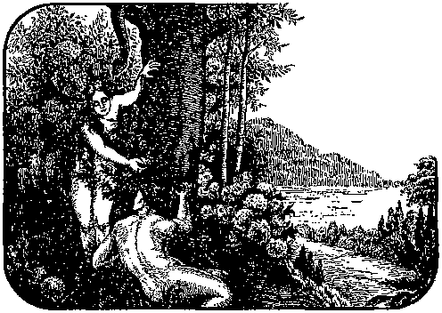that it was pleasant to the eyes, and a tree to be desired to make one wise, she did eat, and gave also unto her husband with her; and he did eat. And the eyes of both of them were opened, and they knew that they were naked; and they sewed fig leaves together, and made themselves aprons. And they heard the voice of Jehovah God walking in the garden in the cool of the day: and Adam and his wife hid themselves from the presence of Jehovah God amongst the trees of the garden. And Jehovah God called unto Adam, and said unto him, Where art thou? And he said, I heard thy voice in the garden, and I was afraid, because I was naked; and I hid myself. And he said, Who told thee that thou wast naked? Hast thou eaten of the tree, whereof I commanded thee that thou shouldest not eat? And the man said, The woman whom thou gavest to be with me, she gave me of the tree, and I did eat.
“And Jehovah God said unto the woman, What is this that thou hast done? And the woman said, The serpent beguiled me, and I did eat. And Jehovah God said unto the serpent, Because thou hast done this, thou art cursed above all cattle, and above every beast of the field: upon thy belly shalt thou go, and dust shall thou eat all the days of thy life: and I will put enmity between thee and the woman, and between thy seed and her seed: it shall bruise thy head, and thou shalt bruise his heel. Unto the woman he said, I will greatly multiply thy sorrow and
thy conception: in sorrow shalt thou bring forth children; and thy desire shall be to thy husband, and he shall rule over thee.
“And unto Adam he said, Because thou hast hearkened unto the voice of thy wife and hast eaten of the tree of which I commanded thee, saying, Thou shalt not eat of it: cursed is the ground for thy sake; in sorrow shalt thou eat of it all the days of thy life: Thorns also and thistles shall it bring forth unto thee; and thou shalt eat the herb of the field: in the sweat of thy face shalt thou eat bread, till thou return unto the ground; for out of it wast thou taken: for dust thou art, and unto dust shalt thou return."— Genesis 3:1-19.
Verses one to seven describe the wilful disobedience of Adam and Eve. Later we will look into some of the details a little more fully. At present our interest centers from verse eight on. We will paraphrase it. Jehovah, or his angel, was accustomed to walk in the garden in the cool of the evenings, and to have fellowship with Adam and Eve. They looked forward to these visits with pleasure; for he was their instructor and was able to answer their many questions and to instruct them about the things they desired to know. The world was yet new to them, and they had many things to learn about themselves and their surroundings. On this particular evening they were afraid. Why? What had caused the difference?
Can you remember when you were young, how lovingly and confidently you ran to your parents with your questions or to tell them of your joys and pleasures? That was a happy time in your life. Then, did you ever disobey a command? After you had disobeyed, were you just as eager to see them as before? If not, why not? Ah! your conscience told that you had done wrong, and that put a barrier between you and them. “A guilty conscience makes cowards of us all.” It was a guilty conscience that made Adam and Eve run away and hide that evening. They had found something within themselves which they had never before known was there. It might be likened to a clock with an alarm attachment, which may have been running for years, and the owner never knew that there was such a thing as an alarm in it. There had been no occasion to use the alarm, and it had been shut off. One day the cut-off became loosened, and the alarm made a great buzzing. The owner might be badly frightened, and wonder what had suddenly happened to his clock. This alarm had been there all the time, but nothing had loosened the catch, and it had remained quiet.
So with Adam and Eve. God had placed a conscience in each mind. As long as they were obedient everything went well; but when they disobeyed they loosened the catch. Then away went the buzzing conscience, and frightened them so badly that they ran away to hide themselves. That evening the angel did not find them as usual, and he began to call. Finally they came forth and gave as a reason for their being afraid that they were naked; in other words, they felt as though they needed something to hide them from his sight. The angel knew what the trouble was, but asked them to explain. They confessed that they had disobeyed and had eaten the forbidden fruit. It is to their credit that they did not attempt to He about it.
We will not stop here to study about the serpent, as that will come in more appropriately later. We are interested in Adam, just now. The result is simply and clearly told in the nineteenth verse: “In the sweat of thy face shalt thou eat bread, TILL THOU RETURN UNTO THE GROUND; FOR OUT OF IT WAST THOU TAKEN: FOR DUST THOU ART, AND UNTO DUST SHALT THOU RETURN.” This would reverse the process explained in verse seven of chapter two. Adam had been formed from the ground; he would have to go back to the ground.
Let us note another point, which is in full harmony with this. The Bible never contradicts itself when it is properly understood. If some one is talking to us, to what does he talk? Our ears, our eyes, our hands, our head or what? Why, we answer, he is talking to us, the whole of us. So here God was talking to the whole of Adam, not a part of him. Suppose we ask ourselves a question or two. This will assist us to see it more clearly:
Can any one go back to a place in which he has never been before? Certainly not. Could Adam go back to some place or condition in which he had never been before? Then what did God mean when he said that Adam must return to the place he came from? He must have meant the very place Adam was taken from; viz., the dust of the earth. He was not taken from a spirit condition; therefore it would be impossible for him to return to such a condition. One more question: Was Adam alive or conscious in any sense before he was created? Of course not; he was not in existence. Then how could he or any part of him, be returned to a conscious or Eve condition at death? He could not be. All the scriptures are in harmony with this. Adam was condemned to die, to lose his life, and of course with it all he possessed. When a light goes out, where does it go ? It goes out. It does not continue as a light. When Life goes out, where does it go? It goes out; it does not continue as Life. Suppose a man gained the whole world and lost his life, what good would it do him?
“For what is a man profited, if he shall gain the whole world and lose his own soul?” (Matthew 16: 26) The Greek word here rendered soul is “psuche” and is the only word in the New Testament translated soul. The same word is translated “Life” in the text: “Arise, and take the young child and his mother, and go into the land of Israel: for they are dead which sought the young child’s life [Greek, psuche}." Had Herod been after the soul of the boy Jesus? Also, “Therefore I say unto you, Take no [anxious] thought for your life [psuche], what ye shall eat, or what ye shall drink; nor yet for your body, what ye shall put on. Is not the life [psuche] more than meat [food], and the body than raiment?” (Matthew 2:20; 6:25) Can the soul eat and drink? Yes, when we have the proper thought of what the soul is—a live being with a body.
We will stop just a minute and look at a passage which is often twisted, and explained by some to mean just the opposite of what it says. Solomon makes seven statements, and then issues a challenge: "[1] For that which befalleth the sons of men befalleth beasts; [5] even one thing befalleth them: [5] as the one dieth, so dieth the other; [4] yea, they all have one breath [Hebrew word is spirit]; [5] so that a man hath no preeminence above a beast [in death]: for all is vanity. [6] All go unto one place: [7] all are of the dust, and all turn to the dust again.” Then follows the challenge to any one to disprove what he says. “Who know-eth the spirit of man that goeth upward, and the spirit of the beast that goeth downward to the earth?” The Revised Version renders it: “Who knoweth the spirit of man whether it goeth upward, and the spirit of the beast whether it goeth downward to the earth?” No one has ever been able to prove that the spirit of man is conscious after death.—Ecclesiastes 3:19-21; Psalm 146:4.
Let us pick up a passing thought on Genesis 3:22, 23: "Jehovah God said, Behold, the man is become as one of us, to know good and evil: and now, lest he put forth his hand, and take of the tree of life, and eat, and live forever: therefore Jehovah God sent him forth from the garden of Eden to till the ground from whence he was taken." This states positively that if Adam remained in the garden he could continue to eat of the tree of life, and live forever. For his disobedience he was expelled; and not being permitted to further partake of the tree of life, he must die—go back to the ground.
Adam's disobedience lost him not only his own possessions and prospects but also those which would have come to his children. The Apostle states it plainly in Romans 5:12: "Wherefore, as by one man sin entered into the world, and death by sin; and death passed upon all men, for that all have sinned.” See also verses 18 and 19.
Though Adam was sent from the garden to die, he might live as long as he could subsist upon the imperfect food outside. What a change had come over his lifeI Instead of the beautiful shade trees, and the luscious fruits, rippling water and peaceful conditions, he had to toil hard for his living and to work until the sweat came to his face. How many times he must have contrasted his condition as a criminal with his experience as a child of God! What would he have given to have had the privilege of returning! But it was too late. God had told him clearly what the penalty would be, and he had deliberately taken his choice. There could be no return. St. Paul tells us that Adam was not deceived, but knew what he was doing when he put forth his hand and partook of the forbidden fruit.—1 Timothy 2:14.
Here is another interesting point to notice before we leave it. The marginal reading of Genesis 2:17 is: “For in the day that thou eat-est thereof, dying thou shalt die.” How long was this day during which Adam was dying? "And Adam lived one hundred and thirty years, and begat a son in his own likeness, after his image; and called his name Seth; and the days of Adam, after he had begotten Seth, were eight hundred years; and he begat sons and daughters: and all the days that Adam lived were nine hundred and thirty years: and he died.” (Genesis 5:3-5) This reminds us of what St. Peter says: “That one day is with the Lord as a thousand years, and a thousand years as one day.” -—2 Peter 3: 8.
How did Adam begin to die? He was so perfectly made that if he could obtain perfect food, the life machinery of his body could replace every broken-down or worn-out atom with a new one, and thus keep itself in perfect order.
We have heard of a simple illustration: Many years ago, in the early days of railroading, the Erie Railroad Co. built a bridge across the Genesee river near Portage, New York. The gulch was about fifteen hundred feet wide and three hundred feet deep. They did not build steel bridges in those days. Oak timber was plentiful then. This bridge was so designed and constructed that if any one piece became rotten or burnt, it could be immediately removed and replaced with a duplicate piece. A large supply yard, containing duplicates of every piece in the bridge, was near at hand; and two watchmen were on duty to watch for imperfect timbers. If one was found, it was removed at once.
As long as the supply of oak lasted, it was easy to keep the bridge up to its original condition. But if the oak were to become exhausted, and only soft timber could be obtained for replacements, the first piece of the soft timber put in would weaken the bridge a little. If all the original timbers gradually became old, and needed to be replaced, and nothing but the soft timbers could be obtained, in time it would be a soft-wood bridge, weak and liable to collapse under the strain of a heavy train.
Let this bridge illustrate Adam’s body. As he daily exercised, particles of it would be thrown off, and new atoms would be needed to replace them. There was abundant supply of perfect material in the food and water and air in the garden. As long as he could partake of them, his body could easily maintain itself in perfect condition. When expelled from the garden, he could obtain only imperfect food with which to rebuild the body. Therefore in the very first meal which he had outside the garden, he put imperfect material into his body; and there it began to weaken, to die. At the end of nine hundred and thirty years, the body was in such a weak condition that it could stand the strain no longer. It collapsed; and Adam was dead.
The Psalmist says of man: "His breath goeth forth, he returneth to his earth; in that very day his thoughts perish." (Psalm 146:4) Of course Adam could not think if his brain did not work. As there was no little “soul” or “spirit” in him to do his thinking for him, he was completely dead. The only way to get him to thinking again would be to give him a body that could work.
Let us look at another verse or two: "The living know that they shall die: but the dead know not any thing. . . . Whatsoever thy hand findeth to do, do it [now] with thy might; for there is no work, nor device, nor knowledge, nor wisdom in the grave, whither thou goest." (Ecclesiastes 9: 5, 10) Some people try to make a great deal out of Ecclesiastes 12:7: “Then shall the dust return to the earth as it was; and the spirit shall return unto God who gave it.” The word spirit here is the same Hebrew word that is translated breath in Ecclesiastes 3:19, and means the same kind of breath as the beasts have. It could not be a conscious disembodied spirit; for no conscious disembodied spirit had been placed in man. Therefore none could leave him and return to a conscious condition. How easy to understand when we start right! We will find all the scriptures in full harmony with these as we proceed.
Why did Adam die? Because he disobeyed God’s commandment. It was not because he was human and lived on the earth, nor because he had been imperfectly created, nor placed in imperfect conditions, nor supplied with imperfect food, nor because God intended to change him later to some other place or nature. When he disobeyed, God expelled him from his perfect surroundings; and his death followed because he could not obtain perfect food. Where is he now? He is dead. But God’s Word tells us that God still loves Adam, and will some day wake him up, and that then, if he will be obedient he may recover his lost possessions; for another sought and found “that which was lost.” (Luke 19:10) How has God been dealing with mankind since Adam died? That also is interesting; and our next study will begin the answer to this question.
God does not give any command beyond the ability of his perfect creatures to keep, but he demands that they obey those he does give. This is right and proper. No home can be maintained in order if some of the children are permitted to be disobedient. Neither can a government be properly maintained if citizens are allowed to disregard the laws with impunity.
World Number One
THE entrance of sin did not alter God’s original purpose to people the earth with perfect human beings in Edenic perfection. The attainment of that condition was merely to be delayed until mankind had learned some very valuable and necessary lessons. Meantime God would give all his intelligent creatures an opportunity to observe how the four attributes of his perfect character, Justice, Love, Power and Wisdom, work together in perfect harmony. Justice could not permit this law to be transgressed with impunity. Love would seek some way to be merciful to the transgressor. Power would be the policeman to execute any order. Wisdom must seek the best good of all concerned, not only of the transgressor himself but also of all those who suffered by reason of his offense. God would permit some to suffer willingly, the just for the unjust, and to show his appreciation of such loving loyalty and obedience, would highly exalt all those who would volunteer to do so. All this will become clear.
We here examine another text a little more carefully: “Therefore [for his disobedience] Jehovah God sent him forth from the garden of Eden, to till the ground from whence he was taken. So he drove out the man: and he placed 77
at the east of the garden of Eden, cherubims, and a flaming sword which turned every way to keep the way of the tree of life." (Genesis 3:23,24) God always keeps his word. He permits of no trifling. All must learn this lesson.
Outside the Garden of Delight Adam and Eve found conditions very different. Outside, it was far from perfect. God let man work on the thorns and thistles himself, thus to learn to appreciate
God had
%
In the meantime God ' ceased from further work for man during the seventh day, or period of 7,000 years.
done for him, and also to v realize that disobedience is costly. '

79
tree of knowledge of good and evil? Had it been listening, and could it understand what had been said? Did the serpent actually talk to Eve, or was it by its actions that evil thoughts were suggested to her mind? Possibly Eve saw the serpent eating of the tree and watched to see it die; but after waiting for some time, and noticing not only that it did not die, but that it appeared to be wiser than all the other animals, she concluded that its wisdom came from eating of that tree. It had been forbidden to Adam and Eve, though not to the serpent.
If this was her thought, who made the suggestion to her that God had deceived her ? What did she know about the evil of deception? Was there some intelligent being using the serpent, either by making it talk, or by its actions suggesting evil to her mind? At any rate the serpent, being more subtle than any other beast of the field, was cursed as a participant in the trouble. Even today the serpent is looked upon as a symbol of evil. Why is this?
Adam understood clearly at the time, but he left no written record of it. Why should he, if he were going to die? However, when children began to come, they would ask many questions, just as children do now. They would want to know all about it, and he could tell them. Adam lived to see his great, great, great, great, great, great grandchild Lamech, the father of Noah, grow to be a man of fifty years of age. The following little chart will be interesting:
---—■—>-----1-----1-----1-----1-----H 40 00 ‘
ADAM__930|
4301 SETH _ 912)
4051 ENOS 9os|
90L CAINAN
701 MALHALALEEL
65[
JARED
94o|
S9s|
969\
4621 ENOCH 3es|
651 METHUSELAH
487 | , LAMECH
969
GREAT Z PYRAMID >
BUILT g
*4
-182 I NOAH 950| |
500| SHEM IQOll ARPHAXAD I
i 5| SALAH
gQ| EBER
34| FELEQ | ~
30| REU ~|
52ISERUG I 3Q|NAHOR|
DEATH OF JACOB
-1654
29ITERAH
4gO|ABRAM
■ioo| IISAAC I 60IJACOB
427
-147
-430
Adam lived in Eden 2 years -without sin, and altogether until Methuselah was 243 years old. Methuselah lived until Shem was 98 years old, dying the year of the flood. Shem lived until Abraham was 150 years old. and Isaac 50 years of age. Shem died only 10 years before Jacob and Esau were born.
The record is found in the fifth chapter of Genesis. Examine it and see if the cut is correct. It would he easy for all to remember about the incidents for a while; but later, after the flood, as men began to multiply, there would be too many things to remember, and their own experiences would be of more personal interest than something that happened hundreds of years before. However, some would want to know about their great grandfathers and what they did, and to have Grandpa tell them goodnight stories of the times when their ancestors were boys.
A few began to make brief written records. Some used sheepskins, specially prepared; others used leaves from the papyrus plant; some used soft clay bricks, which were afterwards burnt hard. Many of these old records have been found in the tombs of ancient kings, and are carefully preserved in national museums. They give us valuable information which it would be difficult to obtain otherwise. It was not so easy to write on sheepskins and papyrus leaves and bricks as it is to write on nice paper with a typewriter. Folks did not send many letters in those days.
When the proper time came, God had his servant Moses write the correct record of creation, which we have been examining, also the story of Adam and Eve and the serpent, that men might not be left in ignorance of the origin of the human race or of their lost estate, and that they might have a record by which to prove their right to a share in the heritage that is to be restored.
At this point in our narrative it is necessary for us to go far back into the past to secure information about several individuals, other than human beings. They are so closely connected with the activities of the human race and enter so closely into these, that we would be unable to understand fully the situation without this connecting link. The Bible parts the curtains of the past far enough for us to catch a glimpse of the ages before the creation of the earth. Though the opening is not wide, it is sufficient for our present needs.
Long before God formed the earth, he had created many angels. They are personal beings, as real and individual as we are, though they do not live on the earth. They have other kinds of bodies. They can go from planet to planet, and from sun to sun, with a speed faster than we know anything about. We are not able to discern when they are in our presence. They come and go like the wind. (John 3:8) God calls them his messengers, or angels. They are mentioned many times in both the Old and New Testaments. We are not told much about them, but enough to inform us of their activities, intelligence, and ability.
Three angels visited Abraham, as related in the eighteenth chapter of Genesis. They are there spoken of as men, because they used human forms and appeared as men; but in the next chapter two of them are specially called angels. Mention is made of two angels by Daniel, one of whom is called by name, Gabriel. (See Daniel 9:21 and 10:5, 6) Gabriel also appeared to Zacharias in the temple (Luke 1:11, 19), and to Mary, the mother of Jesus.—Luke 1:26.
An angel appeared to the shepherds near Bethlehem one night, and announced the birth of their long-looked-for Savior. Then suddenly there appeared to them a host of angels singing, "Glory to God in the highest, and on earth peace, good will toward men.” (Luke 2: 8-14) What a chorus that must have been! The Bible gives strong evidence that these angels appeared to the shepherds about the first of October, instead of the latter part of December. It was the announcement of Gabriel to Mary, the mother of Jesus, that took place about nine months previously, or near what we now call Christmas. Take your concordance, and see how many places in the Bible you can find where angels appeared to men.
The prophets Isaiah and Ezekiel make particular mention of one of the most beautiful, brilliant, and honored of all the heavenly host, who held a high position in the heavenly kingdom of God. Isaiah calls him Lucifer, a Son of the Morning. He was greatly loved by God, who had given him his great wisdom and authority. Lucifer did not properly appreciate his privileges and wanted more. He determined to secure by strategy what he wanted, even though it necessitated his becoming a traitor to his God. His ambition was for more glory and power at any cost. He was determined to set himself above his fellow angels. We quote from Isaiah:
“How art thou fallen from heaven, 0 Lucifer, son of the morning! how art thou cut down to the ground, which didst weaken the nations! For thou hast said in thine heart, I will ascend into heaven, I will exalt my throne above the stars of God: I will sit also upon the mount of the congregation, in the sides of the north: I will ascend above the heights of the clouds: I will be like the Most High.
“Yet thou shalt be brought down to hell [oblivion'] to the sides of the pit. They that see thee shall narrowly look upon thee, and consider thee, saying, Is this the man [one] that made the earth to tremble, that did shake kingdoms; that made the world a wilderness, and destroyed the cities thereof; that opened not the house of his prisoners" All the kings of the nations, even all of them, lie in glory, every one in his own house [tomb]: But thou art cast out of thy grave like an abominable branch, and as the raiment of those that are slain, thrust through with a sword, that go down to the stones of the pit: as a carcass trodden under feet. Thou shall not be joined with them in burial, because thou hast destroyed thy land, and slain thy people: the seed of evil doers shall never be renowned.” (Isaiah 14:12-20) This one has become so degenerate, such a terrible character, that he does not deserve even a decent burial.
The prophet Ezekiel speaking of the same one, calls him the Kling of Tyrus. We quote: “Son of man, take up a lamentation Upon the King of Tyrus [it is a sad lamentation, one that causes great sorrow], and say unto him, Thus saith the Lord God, Thou sealest up the sum, full of wisdom, and perfect in beauty. Thou hast been in Eden the garden of God; every precious stone [element of Jehovah’s character] was thy covering [protection], the sardius [ruby], topaz, and the diamond, the beryl, the onyx, and the jasper, the sapphire, the emerald, and the carbuncle, and gold: the workmanship of thy tabrets and of thy pipes was prepared in thee in the day that thou was created [this refers particularly to the creation of Lucifer and mentions his perfection of beauty],
“Thou art the anointed cherub that covcreth; and I have set thee so; thou wast upon the holy mountain of God; thou hast walked up and down in the midst of the stones of fire. Thou wast perfect in thy ways from the day that thou wast created, till iniquity was found in thee. [Here it is definitely declared that this being came from the hands of his Creator perfect, without a flaw. The iniquity found in him had been a matter of his own choosing.] By the multitude of thy merchandise they have filled the midst of thee with violence, and thou hast sinned: therefore I will cast thee as profane out of the mountain of God: and I will destroy thee, 0 covering cherub, from the midst of the stones of fire.
“Thine heart was lifted up because of thy beauty; thou hast corrupted, thy wisdom by reason of thy brightness: I will cast thee to the ground, I will lay thee before kings, that they may behold thee. Thou hast defiled thy sanctuaries by the multitude of thine iniquities, by the iniquity of thy traffic; therefore will I bring forth a fire from the midst of thee, it shall devour thee; and I will bring thee to ashes [nothing] upon the earth, in the sight of all them that behold thee. All they that hnow thee among the people shall be astonished at thee: thou shalt be a terror, and never shalt thou be any more.”
No king of Tyrus had ever been perfect or had been in the garden of Eden. In describing Lucifer’s beauty, the Prophet makes mention of the most brilliant and beautiful stones known on earth. Covered with such gorgeous gems and standing in the sunlight, he would appear as a blazing stone of fire, made to reflect the likeness of the Creator. He walked up and down amidst other stones of fire, or amidst other brilliant shining ones of the heavenly court. He was upon the “mountain of God”; that is, he held a very high position in the government of the universe.—Ezekiel 28:11-19.
The laws of nature prove that God is a God of order. His government in heaven is in perfect order. Houses do not build themselves, nor keep themselves in order. Automobiles and trains need care and attention. So do suns and planets. While God was creating the earth he said: “Let the waters under the heaven be gathered together unto one place, and let the dry land appear”; and “Let the earth bring forth grass”; and ‘Let the earth bring forth the living creatures’; etc. Those orders were given to his angels. There was work enough for them all. Good work is a pleasure. Some heavenly beings occupy positions of greater authority, and some of less; but all are joyful in their service and work. We know this from the record of the time: “When the morning stars sang together, and all the sons of God shouted for joy.”—Job 38:7.
Gabriel is the name of another who held a high position in the kingdom. He was one who stood in the presence of God (Luke 1:19), was taken into God’s confidence (Daniel 10: 21), and was sent on special missions. Michael, later known as Jesus the Christ, was called “the great prince.” (Daniel 12:1) The name Michael means “'Who as God.” We do not know the names of any others of the heavenly hosts. They were not anxious to give these. See Judges 13:17, 18.
It is difficult to think that Lucifer secretly planned “in his heart" to deceive his loving Creator, who had given him his beauty of person and had endowed him with so much wisdom, and had exalted him to so honorable a position, a prince in heaven.
The outcome of Lucifer’s course is an object lesson to all the other angels of the terrible results of sin, and later will be to all mankind when they learn the truth about him. Because of his change of character Lucifer’s name was changed to Satan, which means adversary. Jesus said of him: “He was a murderer from the beginning [the beginning of his wrong course], and abode not in the truth [where he was at first], because there is [now] no truth in him. When he speaketh a lie, he speaketh of his own: for he is a liar, and the father of it” (John 8: 44) God did not create a devil. He created a glorious angel who, because of ambition, made a devil of himself. God always uses the truth; for one to oppose him, it would be necessary to use the untruth, the lie. Resorting to lying, Lucifer soon became a devil.
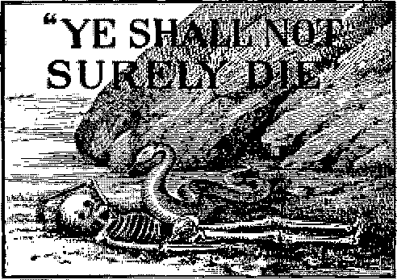What did Christ mean when he said: “He is the father of IT”? He referred to the first lie ever told, the one told by Lucifer to Eve in the garden of Eden. He said: “Ye shall not surely die” directly contradicting God’s statement. That was a lie, and Lucifer knew it. Whether Lucifer caused the serpent to eat of the tree, and then suggested the thought of evil to Eve, makes no real difference. He was the father of the original lie; Jesus charged it directly to him.
Could not God have prevented all this? Yes! Then why did he not do so ? Suppose you have a little baby boy in your home, just large enough to creep around and get into mischief. He sees a pretty red coal on the hearth or in the stove, or the light in the lamp, and wants to play with it. You may hold him away, and tell him it will burn him; but he thinks that he knows better and that you are deceiving him, and wish to deprive him of it. He is all the more determined to have it. He may try to get it when you are not looking; or you may let him take it and burn his fingers. Some might say that you are cruel thus to let him burn himself. But you know that the burn can be healed; and that after he has learned his lesson you will not need to watch him, to keep him away from the fire. He will do the watching himself after that. He would not take your advice; so you let him take the experience.
In the first chapter of Romans we read: “Because that, when they knew God, they glorified him not as God, neither were thankful; but became vain in their imaginations, and their foolish heart was darkened: Professing themselves to be wise they became fools.... Wherefore God also gave them up to uncleanness” etc. In other words, sin looked attractive, and man wanted to play with it. God let him have his own way; and he has burned himself terribly upon the stove of sin, disobedience. God can heal him later, if he desires to be healed; and the lesson will be a very valuable one not only to men, but to the angels, who have been watching man's experiences. Men will watch themselves hereafter, when they get out of the fire.
But some one may ask: How can God heal after they have died? That is a good question, and we will find it fully answered later. Our present interest is in learning why God permitted sin, and what use he can make of such an experience on the part of man and of those angels who joined with Lucifer in his rebellion.
After God had expelled Adam and Eve from Eden, he let them and their children do about as they pleased. They could murder each other and practise all sorts of injustice among themselves. If a boy had been expelled from home because he refused to obey his father while he was at home, would the father be likely to give him any commands to obey while he was away? The father would let him “sow his wild oats,” and see what kind of crop he would get. The boy might come to himself later and humbly desire to get back home. (Luke 15:14-19) So God gave Adam no laws when He drove him from Eden.
Moses, in his history of that time, as recorded in the sixth chapter of Genesis, gives us some further interesting information. Satan influenced many of his fellow angels to join him in his opposition to God and in his saturnalia of sin. Many of them took the form of men, and married the beautiful women of that time. These angelic fathers and human mothers brought forth a hybrid race. This was adding to their sin of rebellion. God permitted them to go far enough to fill the earth with violence and crime, and to demonstrate the deadly crop sin would bring forth, when permitted to go to seed.
“And it came to pass, when men began to multiply on the face of the earth, and daughters were born unto them, that the sons of God [the angels} saw the daughters of men that they were fair; and they took them wives of all which they chose. And Jehovah said, My spirit shall not always strive with man, for that he also is flesh: yet his days shall be an hundred and twenty years. [A better interpretation of verse 3 is as follows—“And the Lord said—My spirits [these wicked angels} shall not always rule man, for they have strayed away while being flesh See Jude 6, 7}; yet their days [of ruling} shall be one hundred and twenty years [longer}.} There were giants in the earth in those days; and also after that, tvhen the sons of God came in unto the daughters of men, and they bare children to them, the same became mighty men, which were of old, men of renown. And God saw that the wickedness of man was great in the earth, and that every imagination of the thoughts of his heart was only evil continually. And it repented Jehovah that he had made man on the earth, and it grieved him at his heart. And Jehovah said, I will destroy man, whom I have created, from the face of the earth; both man, and beast, and the creeping thing, and the fowls of the air; for it repenteth me that I have made them.”—Genesis 6:1-7.
We can easily understand how all this sin grieved God. It was a great test to his love, something like the love of a parent for an erring child. But love must not overbalance justice. In righteousness God cut it short. He saved one man and his family, Noah and his wife, and his three sons and their wives. The tragic story is told in chapters seven and eight.
Let us recall what we have already learned in our previous lessons about the waters above the earth, and the waters on the earth and the firmament, or heaven, between them. We also recall our little experiment with the water on the ball, and how the water slipped away from the wire at the “poles” and worked toward the middle or “equator.” Notice how easily the experiment explains what otherwise would be hard to understand.
"The same day were all the fountains of the great deep broken up, and the windows of heaven were opened.” (Genesis 7:11) What were those great fountains of the deep, and where were those windows of heaven? The great deep was the great mass of water in the form of steam clouds outside the earth, above the heaven. (Genesis 1:7) Window means an opening or open work; and the windows of heaven were the openings at the poles, where the centripetal force pulled the water through the firmament or heaven which before had separated the waters.
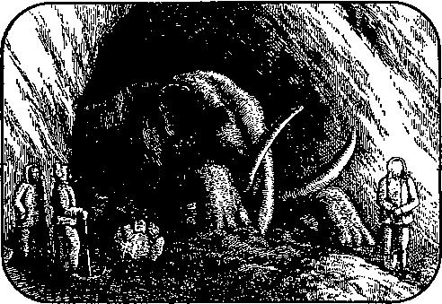The greater the altitude, the intenser the cold. It was extremely cold out beyond those clouds. As they dropped, the cold rushed in; for there was nothing left to restrain it. It was so terribly cold, and the clouds dropped so suddenly, that many of the animals, which before had been quietly feeding near the poles, were frozen in great blocks of ice before they could swallow the food which they had in their mouths. Some of them have been found in northern Russia and other places with unswallowed food in their mouths, or undigested food in their stomachs. Snow fell in enormous quantities and, piling high, was compressed into great glaciers. Perhaps you have read of the Glacial Period in your physical geographies or geologies. Much of the ice now at the north pole was thus formed; but it is now rapidly melting, and it will not be many years until it will all be gone. Then we shall not have such cold winters in the northern hemisphere. Doubtless in due time the ice-cap at the south pole will also be melted.
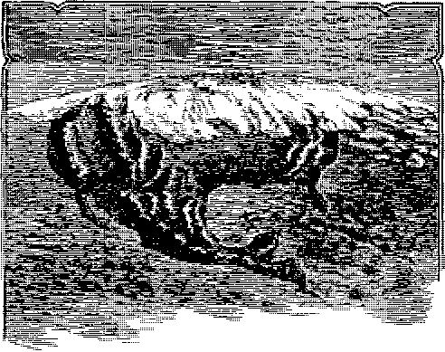GLACIAL PERIOD—ICE COMING DOWN OVER AMERICA
This vast amount of waters from outside was so great that it raised the water level several hundred feet all over the earth, and submerged much of what was before dry land. All the land from the Alleghany mountains to the Rockies, and from the Ozarks on the south to the highlands north of the great lakes, was at one time under water, a great inland sea. Look at your map, and see what a large area this was. The water finally broke through the highlands on the northeast and formed the St. Lawrence river, and through the Ozark mountains on the south and formed the Mississippi river. The eastern coast of what is now the United States extended one hundred miles further out at one time. The old coast line is easily discernable by soundings.
Thus God used apparently natural means to bring about the next great change. “And God called the firmament heaven. . . . And God called the dry land earth." (Genesis 1:8, 10) “The heavens were of old, and the earth standing out of the water and in the water, whereby the world that then was [world number one], being overflowed with water, perished [was destroyed or changed]." (2 Peter 3:5, 6) This also put a stop to the intermarrying of angels with the daughters of men. It destroyed all their hybrid progeny, and effaced all records of that period with the possible exception of the so-called Temple of Karnak, Egypt. Scholars who refuse to accept the records of the Bible have no records
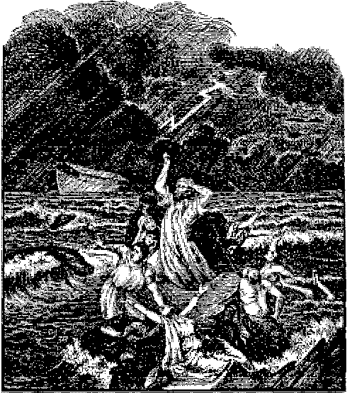of the antediluvian period; and many following some so-called wise men, as leaders, profess to believe that their ancestors were monkeys.
World number one lasted 1,656 years, from Adam to the flood. From thenceforth God restrained those disobedient angels from again assuming human forms: “And the angels which Icept not their first estate, but left their own habitation, he [God] hath reserved in everlasting chains, under darkness, unto the judgment of
the great day.” (Jude 6) "God spared not the angels that sinned, but cast them down to tartarus [earth’s atmosphere—mistranslated hell], and delivered them into chains of darkness, to be reserved unto judgment.”—2 Peter 2: 4.
Other changes followed in atmospheric conditions. Thereafter there were heat and cold, winter and summer, changes which had never been known before. (Genesis 8: 22) New social conditions arose, national and religious, which formed world number two. This will be our next study. We will find it very interesting; for we have all lived in it and know much more about it.
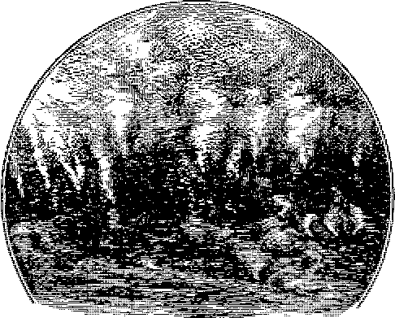Chapter VI World Number Two “This World”
DURING all the commotion caused by the flood of waters upon the earth Noah and his family, and all the animals and birds with him, were safely housed within the ark. It rode safely upon the rising waters during the fortyday rain, and while the floods were coming down from above and rushing in from the poles.
It was a little over a year before the ground was dry enough for Noah and his family to leave the ark and again live upon the land. What a different world (condition) they found from the one they left only a year before, when they went into the ark! Eight people, and the animals and birds with them, comprised all the life on the earth, with the exception of the fish of the sea. God caused the ark to land safely on the mountain of Ararat. As the waters receded, the inmates of the ark landed upon the earth.
Noah was very grateful for his preservation, and offered sacrifices of thanksgiving to God, who had been his preserver. God assured him of his continued favor, and also declared that he would never again bring a flood of waters to destroy all life. It had not rained before the flood, nor had the sun ever shone directly upon the earth. With all the clouds cleared away, the 99
sun’s rays reached the earth’s surface; and when it rained, there appeared the beautiful rainbow.
“And God said, This is the token of the covenant which I make between me and you and every living creature that is with you, for perpetual generations: I do set my bow in the cloud, and it shall be for a token of a covenant between me and the earth. And it shall come to pass, when I bring a cloud over the earth, that the bow shall be seen in the cloud: and I will remember my covenant, which is between me and you, and every living creature of all flesh; and the waters shall no more become a flood to destroy all flesh. And the bow shall be in the cloud; and I will look upon it, that 1 may remember the everlasting covenant between God and every living creature of all flesh that is upon the earth. And God said to Noah, This is the token of the covenant, which 1 have established between me and all flesh that is upon the earth.”—Genesis 9:12-17.
It would seem that Noah and his sons had had such a lesson in regard to the results of sin, that forever afterwards they would have kept themselves as far away from it as possible, and would have told their children of its terrible effects. But it was not very long until their children began to drift away from God and to desire their own ways, and the new world soon started on another wicked course. The experience of the flood had not changed men’s hearts. Sin still appeared very alluring, and their own desires and ways more attractive than God’s.
Apparently men did not believe God’s promise that he would not bring another flood. In order to be prepared, if he should, they said,
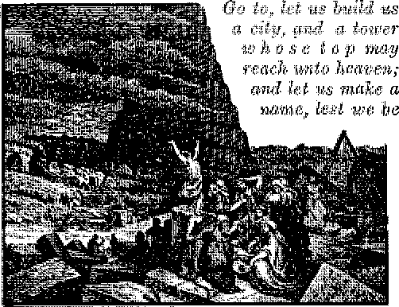scattered abroad upon the face of the whole earth.” (Genesis 11:4) This was displeasing to God, and he thwarted their plans by confusing their language.
Imagine their surprize as they awoke one morning and began to talk to each other in different languages. Each group would think that the other had gone crazy. Those who could understand each other finally went off by themselves and formed separate communities. This scattered the people in different directions over the earth, and was the beginning of the division into tribes or nations. How easy it is for God to frustrate the schemes of men!—Isaiah 40: 15, 17.
God had not forgotten his purpose to have perfect men rule the earth which he had made, but he would give man time to learn some needed lessons. While men were waiting and having their distressing experiences with sin and without his special favor, he continued to supply them with rain, sunshine and food. “God . . . in times past suffered all nations to walk in their own ways. Nevertheless he left not himself without witness, in that he did good, and gave us rain from heaven, and fruitful seasons, filling our hearts with food and gladness.”—Acts 14:15-17.
When God passed sentence upon Adam and Eve in the garden of Eden, he also said that the seed of the woman should bruise the serpent’s head. He did not tell how or when it would be done. But this promise implied the final destruction of Satan and his work.
For over two thousand years God gave no particulars of his plan. Abram, who was born about three hundred and fifty years after the flood, was a God-fearing man. God told him that if he would leave his own country, Ur of the Chaldees, and go to a land that He would show him, He would there make a covenant with him, and that he should become the father of a great nation. Abram believed this, and started. He went up the Euphrates valley, turned to the west, then southwest until he reached Haran. Take your maps and locate these places. Most teachers’ Bibles have good maps in the back. Abram took his father, Terah, and Lot and Sarai, his nephew and his niece, and all his flocks and herds. Sarai was also his half-sister, and later became his wife. Terah died while they tarried at Haran. Abram was then seventy-five years old, and immediately continued his journey to the land indicated by God.—Acts 7:4; Genesis 12:4.
Abram soon reached Canaan; and there God fulfilled his promise and gave Abram an oathbound covenant, saying, "I will make of thee a great nation, and I will bless thee, and make thy name great; and thou shalt be a blessing: and I will bless them that bless thee, and curse him that curseth thee; and in thee shall all families of the earth be blessed.... Unto thy seed will I give this land.” (Genesis 12: 2, 3, 7) As far as we have any record this was the second reference to "the seed" that would eventually bruise the serpent’s head, and narrows the line down to Abram’s posterity. The covenant that God made with Abram is far-reaching, and includes all the children of Adam, as we will clearly see later. No such blessing has yet come to all the families of the earth. But God’s promise stands sure, and his power is sufficient to fulfill every promise. Some might ask: How could God bless the families of the earth, when so many of them are already dead? This question has puzzled many inquiring minds ever since the promise was made, but it will all be cleared in due time. It was in connection with this promise that God changed the name of Abram to Abraham, which means “father of a multitude/’ and Sarai’s name to Sarah, meaning “a princess.” Their new names would therefore be constant reminders of Gods covenant to them.
In due time Abraham had a son, Isaac, for whom he had waited for twenty-five years. No doubt he thought that Isaac was to be the seed through whom God would bring the promised blessings. “When Isaac had grown to be a young man, God asked Abraham to offer Isaac for a sacrifice. The story of Abraham’s faith in God is touchingly told in the twenty-second chapter of Genesis. God did not permit Abraham really to sacrifice his son, but permitted him to go far enough to test his faith thoroughly, and then provided a ram for the sacrifice. “Abraham believed God and it [his faith] was counted unto him for righteousness." (Romans 4:3) God shows favor to those who trust in him.
Thus God permitted Abraham to present a picture of what he himself actually did later: “For God so loved the world, that he gave his only begotten Son, that whosoever believeth in him should not perish, but have everlasting life.” (John 3:16) Martin Luther is credited with the saying that Christ here condensed the whole story of the Bible into twenty-five words.
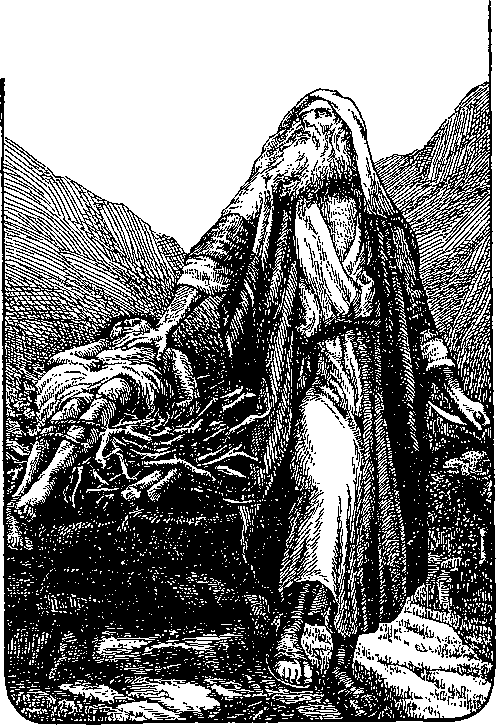ABRAHAM OFFERING HIS SON ISAAC
God repeated his oath-bound covenant to Isaac, and later to Isaac’s son Jacob. God so overruled the experiences of those three noble
105
men and their wives as to form several pictures or types of some of his plans for mankind. (Romans 15:4; 1 Corinthians 10:11) Maybe we shall have time to look at some of them later. Abraham, Isaac and Jacob honored God, reverenced him, and believed in the promises he gave them, though not understanding them all.
Jacob had twelve sons; these the apostle John mentions in the seventh chapter of Revelation. Christ had twelve apostles; and St. John speaks of them in Revelation 21:12, showing that in some way the number twelve had something to do with God’s great plan.
For a while God dealt with individuals, Abraham, Isaac, Jacob and a few others such as Job and Melchisedec; but when Jacob died, God began to deal with the sons of Jacob and their children, later known as the Children of Israel, or the twelve tribes of Israel. (Genesis 49: 28) Jacob means supplanter; but his name was changed to Israel, which means soldier of God or ruling with God.—Genesis 32: 28.
One of Jacob’s sons was named Joseph. The story of his life is remarkable, not only on account of the many thrilling and interesting incidents connected with it, but also because God used it to paint more pictures of his plan. The story of Joseph is one of the most touching of all the records of history. It is too long to be quoted here, but you will find all the details in the 37th and from the 38th to the 50th chapters of Genesis. You will enjoy reading it.
In brief, Joseph was hated by his jealous
was sold as a to a band of Ishmaelites, who
brothers, and slave
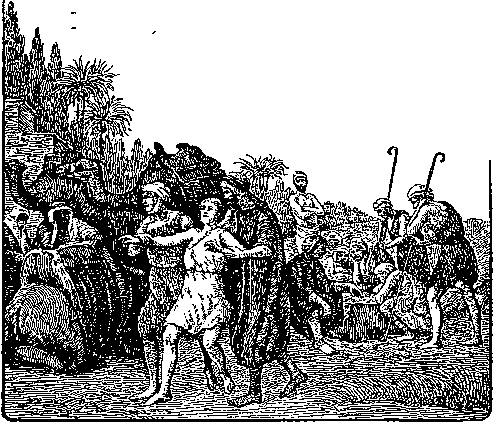were on their way to Egypt. These sold him to Potiphar, a captain of Pharaoh’s guard. Joseph was only about seventeen years old, but was honest and faithful. Potiphar soon gave him charge of all his household affairs. Through no fault of his own he was later thrown into prison. Here again he was faithful and honest; and the keeper of the prison made him what is known as a “trusty,” a prisoner who may be trusted and permitted to have some favors. Joseph was kept in prison over two years, possibly longer. It was a sore trial to be punished for being good. Satan does not like good people; for they interfere with his plans. He often uses those whom he can deceive to persecute others who love righteousness and truth. God sometimes permits him to do so for a while. God overruled the life and experiences of Joseph to foreshadow some parts of the life and experiences of Jesus.
Joseph continued to trust God and to believe in the promises made to his father, grandfather and great-grandfather. God did not forget him, but after permitting him to get some valuable lessons and training, first in the home of an officer and later in the prison, had him taken from prison and exalted to a position next to Pharaoh himself. What a change, from the prison to the second place in the kingdom in one day! The fortieth and forty-first chapters of Genesis show us how God can overrule so that the bitter experiences of today may have a close connection with the sweetest experiences of later years. They also show how God cares for those who trust him and how easily he can work miracles on their behalf if he sees best.
Joseph became the savior of his brethren, who had previously hated him and who in their hearts had killed him. Joseph was also savior of the whole nation of Egypt. This prefigured the experiences of Jesus, who was jealously hated by his brethren, the Jews. They actually crucified him; but God raised him from the dead, and exalted him to the second place in his kingdom in one day. He has become the Savior, not only of his brethren, but also of the whole world of mankind; and whosoever will may have salvation through him in due time.
Later Joseph’s father and brethren moved to Egypt to live. Joseph was next to Pharaoh in the kingdom for eighty years. Finally a new king came to the throne, who did not like the Children of Israel, but who made slaves of them. God had told Abraham that his children would go down to Egypt and there be slaves for a while, but also that he would bring them forth to Canaan, the land which he had promised to Abraham.—Genesis 13:14-17; 15:13.
Slaves cannot make a covenant with anyone. Their masters will not permit it. God would make a covenant with the Children of Israel. The first thing necessary was to get them free, so that they could act for themselves. When the due time arrived, God sent Moses to lead them out of Egypt to liberty.
The first part of the covenant or law was the Passover observance. This was just 430 years to a day after God had given his covenant to Abraham. (Exodus 12:40, 41) This shows that Abraham’s descendants had kept a very accurate record of the time.
After varied and exciting experiences the Israelites reached Mount Sinai, in Arabia, and there entered into a covenant with God, which was very beneficial to them. Moses was the mediator of this covenant. After Moses had received instructions from God and had explained them to the people, “all the people an-
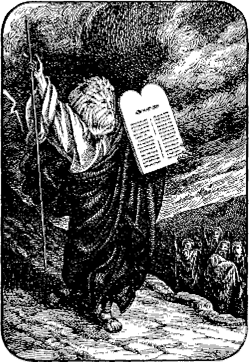MOSES AND THE TABLES OF THE LAW
swered together, and said, All that Jehovah hath spoken we will do. And Moses returned the words of the people unto Jehovah." (Exodus no
19:8) In other phrase, God and the Children of Israel had entered into an agreement through their mediator, Moses. (Leviticus 26:46) They agreed to keep God’s laws faithfully, and he agreed to be their God, Protector, Ruler, and Guardian. They were thus more favored than any other nation on the earth. From being Pharaoh’s slaves and brick-makers, they had been led forth to liberty and had been exalted to be freemen and favorites of the God of the universe, all within one year. Another of God’s miracles.
According to agreement, God took the Children of Israel to the border of the land which he had promised them. There they became frightened and would not go in. They would not trust God, even after seeing his power to deliver them from the hand of Pharaoh. To punish them for their unbelief, which was a direct violation of their covenant with him, God turned them back into the wilderness. There he fed them with manna for forty years. To manifest his care for them further, their clothes and their shoes did not wear out in all that time.— Deuteronomy 29:5.
After their forty years’ experiences in the wilderness they were ready to enter the land God had promised to Abraham and his children. He assisted them to drive out their enemies; protected them, and blessed them with abundant crops and herds as long as they remained faithful. Whenever they forgot him and went after other gods he punished them, or permitted them to become captives to neighboring heathen nations until they cried to him for deliverance. He always responded to their cry and sent deliverance. When they wanted a king he let them have one. (1 Samuel, Chapter 8) For eighteen hundred and forty-five years he continued to be patient with them, and did not offer his blessings to any other nation. (Amos 3:2) The dealings of God with the Children of Israel demonstrate a marvelous patience on his part.
Did the Children of Israel appreciate all this and keep their covenant? No! They were continually complaining and finding fault. For many years God sent to them messengers, judges, and prophets to remind them of their covenant and of his willingness to bless them. Some they stoned, some they persecuted, some they threw into prison, some they sawed in two. (Hebrews 11:37) Finally he sent his Son, and him they crucified. Read the parable of the vineyard in Matthew 21: 33-45.
Would this law covenant interfere in anyway with the one God had already made with Abraham? No! St. Paul compares these two covenants, and says: “And this I say, that the [original oath-bound] covenant, that was confirmed before of God [to Abraham], . . . the law [covenant made with the children of Israeli], which was four hundred and thirty years after, cannot disannul, that it should make the promise [to Abraham] of none effect.” (Galatians 3:17) In other words, the promise God had made to Abraham, that he would bless all the families of the earth, would not be interfered with or made void, or put aside by this covenant made with the one nation of Israel. That original promise is sure of fulfilment. This is good news to us; for every one of us is vitally interested in that covenant made with Abraham.
Because of the hardness of their hearts, the way they had treated God’s prophets, and their determination to crucify his Son, Jesus pronounced this sentence upon the Jewish nation five days before his death: “Your house [nation] is left unto you desolate [Z will have nothing more to do with you as a nation]. For I say unto you, Ye shall not see me henceforth, till [until when?] ye shall say, Blessed is he that cometh in the name of the Lord.” (Matthew 23: 38, 39) Without God’s protection the nation soon went to pieces; and in 73 A. D., just forty years after they had rejected God’s last offer of mercy through Christ, the last defence of the nation, the fortress of Mesada, went down before the Roman legions; and there has been no Jewish nation since.
We quote from Eusebius’ “Ecclesiastical History” : “It may be proper to mention also what things occurred that showed the benignity of that all gracious Providence, that had deferred their destruction for forty years after their crimes against Christ.” Cornell’s “History of the People of Israel” says: “On the 15th of Nisan, i. e.,
of April, in the year 73 A. D., the first day of the Easter festival, the same day on which, according to tradition, the God of Israel led his
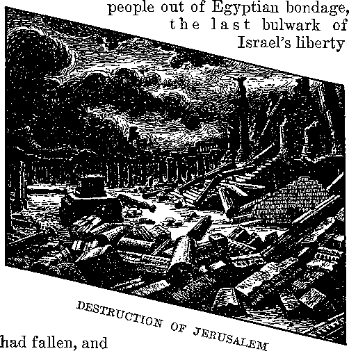Israel was delivered into bondage.”
Jesus found some faithful and honest individuals in the nation, and to them he offered a special privilege. “He came unto his own [nation'], and his own received him not. But as many as received him, to them gave he privilege to become the sons of God."—John 1:11,12.
Did the rejection of Jesus by the Jews as a nation interfere with God’s plan to bless all the families of earth? Oh no! God knew where he could find others for his purpose. If the Jews would not accept what he had to offer, he would go to the Gentiles, "to take out of them a people for his name." He would then return to the Jews and deal with them again.—Acts 15:14-17,
While on earth, Christ did a great deal of preaching about the kingdom which he was to establish on earth, and which had been spoken of by all the holy prophets. It was to be the fifth world empire, and would follow the Roman, as outlined in the second chapter of Daniel. The Jews expected to be the chief nation of the world, and looked with disdain upon all Gentiles. But their treatment of God’s prophets and messengers, and the crucifixion of his Son, proved them to be entirely unfit as a nation, to represent God, who loves justice and truth.— Matthew 21:33-43.
This kingdom of God was the principal theme of all Christ’s sermons. His parables pictured certain parts of it. His miracles were illustrations of the blessings which would come to all people when the kingdom would be fully established. He held this kingdom before his disciples as the means by which God would fulfill his promise to Abraham, and bring blessings to all the families of the earth. At the head of this kingdom was to be the "seed” which was to bruise the serpent’s head.
God had told his prophets much about the glorious kingdom which he would establish and of the part it would have in fulfilling his promise to Abraham, to bless all the families of the earth. But there was one part of that plan which he had never revealed, except in such vague language that no one could understand it until the proper time. He had told Michael much about it, however, and had laid before him a proposition which Michael was very willing to accept. Though Michael did not understand it fully, he was willing to trust that whatever God might propose would be the best thing possible. For a long time it was a secret, but since Christ announced it to his church, it is no longer a secret; and we may now understand it.-—Colossians 1: 26.
The Apostle, speaking of Christ, says: "Who, for the joy that was set before him, endured the cross, despising the shame, and is set down at the right hand of the throne of God.” (Hebrews 12:2) God set before Christ a great prize if he would be man’s Redeemer. Christ responded: "Lo, I come {in the volume of the book it is written of me) to do thy will, 0 God.” (Hebrews 10: 7) Jesus himself said: "I came down from heaven, not to do mine own will, but the will of him that sent me.” (John 6: 38) Many other passages make similar mention.
This is where so many have become confused in trying to understand the Bible. The trouble is that they try to work a “two-times-three-are-five” rule, or in this case to say that three times one are one; and it will not fit. They try to make themselves think that God and Christ and the holy spirit are one and the same being. A simple little question ought to set anyone straight. Can a son be as old as his father? Absolutely impossible! Can one be a father and no older than his son? Impossible! Christ said that God was his Father, or Life-giver; for that is what the word father means. Nowhere in the Bible is it stated that Christ is as old as his Father. God claims to be the Father of Christ. (Matthew 3: 17) They are separate and distinct personalities, yet thoroughly in harmony, therefore one in purpose and character likeness.
Jesus explains how that they are one: “That they all may be one; as thou, Father, art in me, and 1 in thee, that they also may be one in us: . . . that they may be one, even as we are one." (John 17: 21, 22) Were Christ and all his disciples one in body and person? Certainly not; yet the oneness existing between Christ and his disciples was similar, of like kind, to that existing between Christ and his Father. Let us keep this matter straight; and it will be much easier for us to understand our Bibles. The relationship between God and Christ is that of a loving Father and a loyal Son. The spirit or disposition of God is holy. The same is true of Christ and the church.
The doctrine that God and Christ and the holy spirit are all one and the same in body and person can be traced back through the heathen doctrines in one form or another to Nimrod, who lived shortly after the flood. Constantine, a Roman emperor, fastened that doctrine on the Christian church in the year 325 A. D.
Constantine was a brutal king who killed his own son, of whom he was jealous. He found the Christian religion flourishing in his kingdom. But Christians were taught to love and not to fight. This did not please Constantine. He wanted soldiers. To love is the spirit of God; to fight is the spirit of the devil. Satan found in Constantine a ready tool. He induced the king to profess Christianity. Constantine called a great conference of the bishops of the church, and finally forced them to accept the absurd heathenish doctrine known as the doctrine of the trinity, which neither the bishops themselves nor anybody else could ever understand.
This was a clever trick of Satan. It gave great support to his representative, Constantine, and made nonsense of much of the Bible. That was just what Satan wanted. It paved the way for more nonsensical interpretations. Satan soon succeeded in turning the nominal church away from God’s Word altogether and then made it a crime punishable with death for any person even to possess a Bible. But even this did not interfere with God’s ability to carry out his plan. It served only to demonstrate the extremes to which Satan would go to oppose God. We will now proceed with the truth, taking as our rule that “two times three are six,” or, as in this case, three times one are three.
Is it possible for us to ascertain what that great prize was which God set before Christ and which gave him so much joy that he was willing to suffer ignominy, shame and death on the cross? Christ referred to it when he said: "As the Father hath life in himself [divine, immortal life, which God always possessed]; so hath he given [by promise] to the Son to have life in himself.” (John 5:26) In other words, up to that time only God possessed "life in himself,” immortality, the divine nature; but Christ here made the statement that God would give him the great prize of obtaining the divine nature. There would be no sense in saying that God would give him something he already had.
God fulfilled his promise when he raised Jesus from the dead and set him at his own right hand. St. John describes the joy of the heavenly hosts as Christ received the promised rewards: "And I heard the voice of many angels round about the throne and the beasts [living ones] and the elders; and the number of them was ten thousand times ten thousand, and thousands of thousands; saying with a loud voice, Worthy is the Lamb that was slain to receive power, and riches, and wisdom, and strength, and honor, and glory, and blessing.” (Revelation 5:11, 12) "Wherefore God also hath highly exalted him, and given him a name which is above every name.” (Philippians 2: 9) Would it have been an exaltation if Christ had received only what he had before? Certainly not!
Christ was God’s first son; and after he was created, he was associated with God in all the further works of creation. (John 1:1-3) He was not divine nor immortal until he had proved his worthiness to receive such honors. Now he is divine. A correct understanding of the true relationship between the Father and the Son, and of what God has done for Christ, clarifies much of what before was impossible to understand. We now see something of the value of the prize set before Christ; his great victory in overcoming the temptations of world number two. The heavenly hosts declared that he was worthy. Who would not count it a privilege to win such a prize, if the opportunity were offered?
Truth is often stranger than fiction. What shall we say when we learn that God has actually made a similar offer to others, that if they desire to run the same race they may win a similar crown?
Let us stop here a minute to get a clearer view of the manner in which God carried out his plan to bring all this about. God gave the Children of Israel a law that if one did an injury to another, punishment would be demanded in equal kind: An eye for an eye; a tooth for a tooth; hand for hand, foot for foot, life for life. (Exodus 21:23-25) Adam disobeyed, and lost his life. If Adam is ever to receive any blessing in the future he will have to be awakened from death and brought back to life. How can this be, and at the same time the demands of justice calling for a “life for a life” remain satisfied?
Let us make a little parable. Suppose a farmer owned a sheep that had been bad, and was condemned to die. Suppose the owner of the sheep also had a fine shepherd dog and, after explaining that the disobedient sheep must die unless some other sheep die in its place, would make this proposition to him: “Trust, if you will agree to let me transform you from a dog into a sheep, and then consent to die in the place of that sheep, I will then transform you into a man like myself.” Here would be a proposition for Trust to consider. If he consents, the master changes him into a sheep. This is a complete change of nature. He is not part dog and part sheep, but all sheep. Then, instead of letting the first sheep be put to death, the master puts the second one to death in its place. The life of one sheep has been given for the life of the other sheep. That releases the first sheep, and permits it to live. The law is complied with.
But what about sheep number two, the one which had been a dog? His master had promised that he should be brought to life as a man. The master keeps his promise. Sheep number two died as a Sheep, but is resurrected as a man. What a change! Was not the prize of securing human life worth the suffering as a sheep? How much better to be a man than a shepherd’s dog! No injustice is done any one. Sheep number one is set free; the dog humbled himself to become a sheep, then died as a sheep, and was rewarded for his sacrifice by being exalted to be a man. He would never want to be a dog or a sheep again. The law holds the life of a sheep as punishment for the transgression; so the law is satisfied.
Jesus occupied a very high position in heaven, but humbled himself and took the form of a man to die as a man for Adam; and God rewarded him by giving him a much higher position and nature than he had held before. “Who, though being in the form of God, thought not by usurpation to be equal with God [did not think to usurp the position as Lucifer had tried to do]; but made himself of no reputation, and took upon himself the form of a servant, and was made in the likeness of men [became a human being]: and being found in fashion as a man [not part man and part spirit], he humbled himself, and became obedient unto death, even the death of the cross. Wherefore God hath highly EXALTED him, and given him a name which is above every name, that at the name of Jesus every knee should bow, of things in heaven, and things in earth, and things under the earth.”—Philippians 2: 6-10, Diaglott.
Adam was under sentence of death. It would take a human life to ransom him. Jesus agreed to be changed into a man, and become a perfect man such as Adam was before he sinned. Jesus died in the place of Adam, thus giving his life as a perfect man as a ransom for Adam. Adam now can be freed when the time comes, and be resurrected to life again. Jesus will never be a man again; for Godlias given him a much better life. The dog could not use a dog body and live as a man; neither can Jesus use a human body and live as a divine being. “Flesh and blood cannot inherit the kingdom of God.” (1 Corinthians 15:50) Justice is satisfied. It has the life of a perfect man to take the place of the perfect man who sinned.
Now comes one of the strangest parts of God’s plan. He sent word by Christ that if any who heard Christ, and believed on him, would like to run a similar race, the opportunity was open. It was a narrow way, leading unto the death of the human being. The race would be a hard one and the endurance of every runner would be severely tested; but victory would be certain, if he continued faithful unto the end. Each aspirant also must prove loyal and obedient through fiery trials, tribulations, persecutions, and the opposition of Satan and his deluded followers. The reward would be similar to the one granted to Christ. “Whereby are given unto us exceeding great and precious promises; that by these ye might become partakers of the divine nature.” (2 Peter 1:4) “To him that overcometh will I grant to sit with me in my throne, even as I also overcame, and am set down with my Father in his throne.”—Revelation 3: 21.
With this prize in view, it is no wonder that the disciples and all those who have followed in Jesus’ steps, have been willing to undergo all the persecutions and trials which God saw good to permit. The apostle Paul says: “This one thing I do, forgetting those things which are behind, and reaching forth unto those things which are before, I press toward the mark for the prize of the high calling of God in Christ Jesus.” (Philippians 3:13, 14) Thus the church “by patient continuance in ivell doing, seek for glory and honor and immortality, eternal life.” (Romans 2:7) There is no Bible reference to any other class who will ever receive immortality.
This was fully explained by Christ to the apostles, and by them to the early church; but later it was lost sight of by many, as they sought present worldly honors, and forgot God, or were deceived by Satan. But God so overruled that full explanation was left in the letters written by the apostles to the churches of their time. Those letters we still have for our guide, comfort and admonition.
This is the “mystery” of the New Testament. The world has never yet been able to understand why God permits his children to have such severe experiences and so few temporal blessings. God has been selecting a bride for his Son; and David, in the forty-fifth Psalm says: “The king’s daughter [the bride of Christ] is all glorious within: her clothing is of wrought gold [her nature is divine].” As the bride she also had immortality, and had proved herself an overcomer, and was thus privileged to share in the glory and honors of Christ, her Lord and Bridegroom. St. Paul, in writing to the church at Rome, expressed it in a little different phrase: "Z/ children, then heirs; heirs of God and joint-heirs with Christ; if so be that we suffer with him, that we may be also glorified together.”—Romans 8:17.
During world number two, from the flood until now, God has been dealing with some of mankind through his representatives, the angels, the prophets, and his Son, in three different ways: First, with the patriarchs, Abraham, Isaac, Jacob, etc.; second, with the Jewish nation; third; with the Gospel church.
Though dealing with three different classes, the Bible speaks of the whole period as “this world,” and “this present evil world”; and we can all agree that it has been a very evil world for mankind. This does not mean that the physical earth has been evil, but that the conditions-existing upon the earth have been evil, because selfishness has been the motive power everywhere. God's time limit for the “kingdoms of this world” expired in 1914; and promptly on time he began ouster proceedings. The great commotion in the world since 1914 is incident to the turning out of everything that is not founded upon justice and righteousness, in order that he may soon establish the next world, “wherein dwelleth righteousness.” If the people really knew what is coming, they would rejoice and be glad, instead of trying to hinder. In our next study we will take up the subject of the Prince of This World.
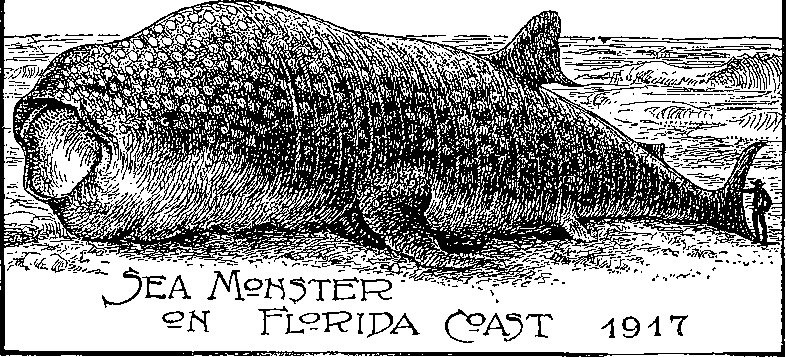This deep sea monster was killed off the east coast of Florida in 1917. Scientists claim that it was comparatively young. In its stomach were a black fish weighing 1,500 pounds, an octopus of 400 pounds, besides 500 pounds of coral. It could easily have swallowed ten Jonahs without trouble. (SeeMatthew 12 :40, 41) Length 45 feet; weight 30,000 pounds ; hide three inches thick. Was mounted on a houseboat, and exhibited in many coast and river cities of the United States.
The Prince of This World
JESUS said: “The prince of this world cometh, and hath nothing in [common with] me." (John 14:30) To whom did he refer as the prince of this world? St. Paul says: "The god of this world hath blinded the minds of them that believe not, lest the light of the glorious gospel of Christ, who is the image of God, should shine unto them." (2 Corinthians 4:4) St. John tells us: “And the great dragon was cast out, that old serpent, called the devil, and Satan, which deceiveth the whole world." (Revelation 12: 9) From these texts it is easy to identify the prince of this world as Satan. God pronounces a "woe unto them that call evil good, and good evil; that put darkness for light, and light for darkness; that put bitter for sweet, and sweet for bitter.”—Isaiah 5: 20.
From our lesson in chapter five we learned that Lucifer started his course of sin with the thought, "I will exalt my throne above the stars of God:... I will ascend above the heights of the clouds: I will be like the Most High.” He determined to show the other angels how great he was and what great things he could do. He would seat himself upon a throne like God. He determined to shine in their eyes, and to demonstrate that he was a mighty one like Jehovah.
When God told Eve that her seed should bruise the serpent’s head, Lucifer doubtless knew that this referred to himself. Of course the suggestion would make him angry, and he determined that it should never come true. He did not know what God’s plan was; for the Apostle tells us that God had not revealed it to any one at that time. Even Christ, his own Son, did not understand it in full until he had proved his loyalty and trustworthiness and was exalted to heaven, as St. John tells us in the first verse of Revelation: “The revelation of Jesus Christ, which God gave unto him [after he had ascended to heaven]’1; and St. Paul adds: “According to the revelation of the mystery, which was hept secret since the world began, but is now made manifest” (Romans 16:25), and “the mystery which hath been hid from ages and from generations, but now is made manifest to his saints.” (Colossians 1: 26) Lucifer, therefore, could only guess at God’s purposes.
When Abel offered a sacrifice which was acceptable to God, while Cain’s was rejected, Lucifer doubtless thought that Abel, being a seed of Eve, was God’s favorite, and therefore might be the one God purposed should bruise Satan’s head. He therefore provoked Cain to jealousy and worked upon him to kill his brother, planning thus to overreach God. (Genesis 4:3-15) Little did Lucifer realize the power of God, and his own inability to interfere with God’s purpose. As well might a little ant stand before a man and boast: "I am as great as you are; I can do as I please in spite of you; I will show that you cannot destroy me.”
Thus Satan not only caused Eve to transgress, but caused one of her sons to murder his brother. No wonder Christ said that the devil was a murderer from the time he began his wicked way! Did you ever hear a boy brag about what he could do? If he made a failure, he became angry if the other boys laughed at him. Or if he had done wrong and told a lie about it, he would tell several more lies when he was liable to get caught, to try to cover up the first one. Did anybody make that boy lie? No! He was trying to hide himself behind more lies, going from bad to worse. Why did he not acknowledge his wrong and try to make it right? In his egotism and pride it would be very humiliating to acknowledge that he could not do what he started out to do, or that he had done wrong.
Lucifer first meditated the deception in his heart, then told a lie. Unwilling to acknowledge his wrong, and determined to continue his course, he soon resorted to murder. Rapidly he went from bad to worse. He placed himself in opposition to truth and righteousness; and God named him Satan, which means adversary, and opposer. He was also given another name, devil, which means slanderer. Satan has always tried to make men believe that God is the cause of all their trouble; that God takes away their loved ones, causes all the storms, disasters, and troubles in the world; while in reality the devil himself is the real cause. Thus he has taught men to hate God and to think of him as a monster, instead of the loving God that he is, sending us the rain and sunshine, fruits, crops, and daily blessings, in spite of the ingratitude shown in return. Surely Lucifer was well named Satan, and devil.
Satan soon found that God’s Word was sure. Adam died, and his children were dying, and it was no pleasure to rule over dying subjects. Satan planned to outwit God and develop a race of his own. We remember in our study of world number one that Satan influenced many of his fellow angels to take human bodies and marry women of that time, and that they brought forth giants. This was a fine scheme of Satan’s to bring forth a new race of strong men that would not die. Apparently Satan had accomplished his object, and no doubt boasted of his greatness. When God let down the flood of waters and destroyed this hybrid race, it put a sudden end to Satan’s scheme. He became angrier than ever at God for thwarting his plan. It was humiliating. Every time that God upset his plans it increased his anger. Just think how angry that little ant would get, if after he had bragged to his fellow ants what he could do to the man, the man would continually upset his plans. Boasts cannot stand before contradictory facts. Truth always destroys the defence of lies and deceit.
After the flood, to hold his prestige Satan had
to think up some new scheme. The Bible does not give us much information as to the origin of the heathen religions. It says that all who do not worship God are to some extent worshiping devils. Without entering into any discussion about the heathen religions the Bible simply refers to them as demon worship, but keeps before our minds the thought of God’s ability to shield us from these devils, and our danger if we lose faith in him and take ourselves from under his protection.
From our early records and legends we learn that after the flood, the animals multiplied rapidly and became savage, wild and troublesome. A man by the name of Nimrod became an expert at slaying these wild animals. On this account he was highly esteemed; and many began to honor him, and said he was doing more than God was to protect them from these vicious animals. They forgot that they had left God, and had no right to look to him for protection. So they began to look to Nimrod as a mighty one. We have only a brief reference to him in Genesis 10: 8-13 r “And Cush begat Nimrod: he began to be a mighty one in the earth: he was a mighty hunter before [esteemed by his followers in preference to} the Lord. . . . And the beginning of his kingdom was Babel, and Erech and Accad and Calneh, in the land of Shinar.” From the marginal reading of the eleventh verse we learn that he also built Nineveh and several other cities. Hence he was king of Nineveh; and this fact enables us to identify Nimrod as King Ninus, well known to students of ancient history.
Tradition connects Ninus with Semiramis. They were the originators of the “mysteries” first of the Chaldeans, then of the Babylonians. The Egyptians, Greeks, Romans, under various names and forms adopted these. Later, the Roman Catholic church took up part of the “mysteries,” such as praying to dead saints, and worshiping the virgin Mary; and the priests were supposed to be endowed with special powers by God. All this was contrary to the teaching of the Lord and the apostles, as recorded in the Word of God. It is no wonder that the Bible was rejected by the deluded followers of Satan. If the people could have the Bible to read and study, they would know better than to pray to dead “saints” or even to the mother of Jesus. Each country had a different name for its gods, but all can be traced to the same origin, opposition to God. Even the name Nimrod is said by some lexicographers to mean “rebellion.”
People esteemed Nimrod more than they did God, because he was their defender from the ■wild animals. He became their king, and they looked to him as a sort of god. Here was Satan’s opportunity. He would use this man to deceive the people and to turn their minds entirely away from God to Nimrod, and he would use Nimrod. Thus Satan himself would actually be the ruler of mankind. Nimrod became a king.
Semiramis, said to be his mother, was associated with him in the kingdom. She was a proud wicked woman and had great influence with her son, whom she later married, thus becoming his queen as well as his mother.
The wickedness of the two was very great. Shem, the son of Noah, who lived for five hundred years after the flood (Genesis 11:11), and some other righteous men associated -with him banded themselves together, and overthrew and killed Nimrod. For a while Nimrod’s followers were greatly frightened. As queen and mother, Semiramis did not purpose to lose her position of honor and her hold upon the people. After the terror caused by Nimrod’s death had somewhat quieted down, she started the story that Nimrod had come back, but was a spirit being, that he was instructing her, and through her would again direct his people, and continue to be their king.
This was all of Satan, and was another lie to cover the one he had told to Eve, that man could not die. He lied, and told the people that what appeared to be death was in reality not death after all, but just a change into spirit life. To back up this lie he started still others, by sending messages to the living to induce them to believe that Nimrod was not dead. Thus Satan worked upon the pride and ambition of a selfish woman to further his own scheme and to hold the people in ignorance. Semiramis was a very willing accomplice. Her successors have been very willing to carry on the lie; for it favored their own selfish schemes for popularity and power. This was the start of spiritism. The dead know not any tiling, and cannot send messages to any one.
God told the Jews to have nothing whatever to do with anything of that kind :“When thou art come into the land which Jehovah thy God giv-eth thee, thou shalt not learn to do after the abominations of those nations. There shall not be found among you any one that maketh his son or his daughter to pass through the fire, or that useth divination, or an observer of times, or an enchanter, or a witch, or a charmer, or a consulter with familiar spirits, or a wizard, or a necromancer. For all that do those things are an abomination unto Jehovah: and because of these abominations Jehovah thy God doth drive them out from before you.”—Deut. 18: 9-13.
However, by this lie Semiramis deceived the people, continued to make them her slaves, and maintained herself in power. This was the start of the many heathen religions, based upon the lie that the dead are not dead. So greatly did Satan succeed in deceiving the people that nearly every nation on earth, except the Jews, accepted it; and strange as it may seem, even many of the most enlightened people today still believe it.
This lie is the basis of the deceptions practised by the mediums of today. The devils use these mediums, and often tell things that were supposed to "be entirely secret. They sometimes tell where lost articles may he found, and send messages, falsely claiming that these are from the dead. This seems miraculous to the victims; and believing that the messages come from their dead friends, they are sooner or later led into slavery. The devil dare not come out openly and show himself. If he did, people would immediately repudiate him. Therefore he has to work under cover and endeavor to deceive people by maldng them believe that these so-called miracles are of God. (See 2 Corinthians 11:13, 14) The Bible tells us to have nothing to do with devils, wicked spirits; and the experiences of thousands who have been duped by these demons prove that they would be far better off if they had heeded God’s commands.
Thus Satan became the one whom the people really worshiped, as St. Paul says: "But I say, that the things which the Gentiles [those who do not know God} sacrifice, they sacrifice to devils, and not to God." (1 Corinthians 10:20) Some of the Jews were so taken up with devil worship that David says: “Yea, they sacrificed their sons and their daughters unto devils, and shed innocent blood, even the blood of their sons and of their daughters, whom they sacrificed unto the idols of Canaan: and the land was polluted with blood." (Psalm 106:37, 38) Read the whole Psalm.
Suppose your father and your mother would throw your little baby brother or sister into the
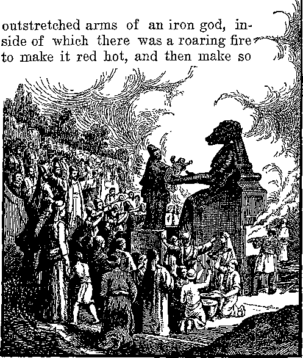SACRIFICING TO MOLECH--WORSHIPING DEVILS
Jeremiah 32: 35
much noise in praise of the iron god that you could not hear the screams of your baby brother. That is the way some people worshiped their gods. Even some of the Children of Israel fell into this terrible sin. (Jeremiah 7: 30, 31) Read of the god Molech in your Bible dictionaries or encyclopedias. Does not that sound like devil worship ? The devil appears to have some people hypnotized. All down through the ages people and priests have been sacrificing their children to the god of war, and then malting so much noise with drums and praises of the great generals who led the battles that the cries of the wounded, the widows, and the orphans should not be heard.
God teaches men to love each other and to do good to one another. Satan teaches them to hate each other and to do all manner of evil to each other. He is doing that himself.
God created man with a nature to worship. Man is inclined to recognize and reverence those who have ability and power greater than his own. It is proper, good, and right that all creatures should worship Jehovah, who gave them all they are and have. Taking advantage of this desire of man to worship something, Satan determined to obliterate God from the mind of man and install himself in God’s place. As God taught the law of love Satan, to oppose God, would have to teach the opposite; so he inculcates hate. Hatred is a power, but a dangerous thing to handle. It is like a dynamite bomb, liable to explode unexpectedly and cause destruction. We saw an illustration of this in the World War. The hatred engendered at that time exploded and caused a terrible world-wide wreck; and the leaders of the nations have been endeavoring ever since to pick up the pieces and put them together. As well hope to piece together an exploded bomb.
When men determined to ignore God, they were permitted to take their own course, as explained in Romans 1: 21-32. They are realizing the results of their wilfulness as they try to pick themselves out of the wreck, like the boy who was advised to be careful how he played with giant fire crackers. Oh, he knew what he was doing; they couldn’t hurt him! When he exploded one and looked at the place where his fingers used to be and could not find any, he wished that he had not been so boastful. He remembered the lesson for life. He was careful after that; but all his care did not bring his fingers back.
Those who worship the devil do so ignorantly, thinking that they are doing right; for Satan puts on a sanctimonious face to make believe that he is an angel of light, in order that he may catch his victims. A deceived man always thinks that he is right. Satan has deceived the whole world; therefore he is the greater sinner. Does it seem strange to some that God would permit such a monster to go to such lengths? The wisdom of God’s course will be clearly seen in due time.
If no one but the whiskey drinkers themselves were to experience its terrible results, we might not so fully appreciate the devastating deadliness of the poison. But when in addition to debauching the drinker himself, it is permitted to bring poverty, misery, and death upon the poor wives and children and upon whole communities, we are appalled at its damning effect, and dread it the more. So God has permitted sin to become fully ripe, that people might see how devilish and brutal it will make its devotees. •—Revelation 14:18.
When God called Abraham and promised to make him the father of a great nation, and told him that in his seed all the families of the earth would be blessed, Satan immediately began to watch Abraham with hatred. Here again was the mention of that “seed” which was to bruise his head. Satan tried to injure Sarah, Abraham’s wife; but God protected her from Satan’s schemes, and continued his care over Abraham’s posterity until they became a nation. Satan was jealous of that nation, and continually endeavored to lead it away from God into disobedience and idol worship. He succeeded to some extent, by holding before them the glitter of the courts and the armies of the kingdoms about them.
Often Israel lost sight of God, and took themselves from under his care. He permitted them to have some bitter experiences, until in their distress they cried unto him for help. They found Satan’s service, though clad in glittering livery, always heavy and galling. When they repented and called upon God, he always heard, and sent assistance and delivered them. We marvel at the long-suffering and patience of God, when they were so unappreciative of his care and so disregardful of the covenant they had made with him. Surely God proved himself to be a God of love to them. (Jeremiah 3:12-15) Poor wilful people! Little did they realize the malignant hatred of their enemy the devil, who was all the time deceiving them, trying to make them believe that God did not care for them.
Many had imbibed the spirit of Satan to such an extent that they robbed poor widows, and defrauded their neighbors, and did all kinds of iniquity. Pious rascals, they made long prayers to deceive the people. If any one interfered with their frauds, he was treated as an enemy.
"When the angels announced to the shepherds at Bethlehem that a Savior had been born that would save the world, Satan was furious. Here again was that “seed." He would destroy it if possible. He had already tried to get Joseph to put away Mary, his espoused wife, under the pretence that she was a guilty woman. But God showed Joseph that Mary was a virtuous woman, and that he need not fear to take her for his wife. Satan must try some other scheme.
Here was a good one: He had a number of men who were ignorantly worshiping him in the Far East. These were called Magi, or wise men. He would give them a vision about the new-born king, and send them to worship him. Of course, these wise men thought that they were wonderfully favored of the gods to be informed about the birth of so notable a child that their “god" would send them special word and tell them where to go to worship him. Thus did Satan pet their pride. They started, and Satan guided them by some kind of light which appeared as a star. What an honor this was, also!
Satan had no intention of taking the wise men directly to Bethlehem, where Jesus was. No, indeed! He purposed to use the jealousy of another to accomplish his wicked design. We see in all these instances that Satan was obliged to use human instruments to carry out his designs; and that he must first obtain the willing consent of his dupes. He would work upon selfishness, jealousy, or pride. God prevented him from putting forth his own hand to do the injury.
Satan was well acquainted with the tyrant, Herod the Great, who was king at Jerusalem at that time. Herod had killed one of his wives, several of his sons, and a great many thousands of other people to keep himself upon his throne. Satan knew that the very idea that some one had been born to be king would arouse Herod to intense jealousy and a desire to destroy whoever might threaten to stand in his way. Satan
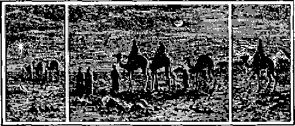guided his deluded followers to Jerusalem, instead of Bethlehem. The news soon reached King Herod, and he at once became deeply interested and made diligent inquiry to find out all about it. He then told the Magi (magicians) to go and find the child and bring him word, so that he also might worship him. What a lie! He had no intention of worshiping any one. He had been too good a pupil of Satan.
But God interfered, sent the deluded wise men home another way, and hurried Joseph and Mary off to Egypt until it was safe to return; for he knew what was in Herod’s mind. Joseph and Mary were very poor, but the gifts which these kind-hearted “wise men” brought were very helpful to them at this particular time. God knows how to care for his own.
Not having word from the Magi, Herod could restrain himself no longer. He thought that if he ordered all the children two years old and under to be slain, he would be sure to get the one he wanted. He was a good representative of Satan. No doubt Satan was more furious than ever at the failure of his plan. Was it possible that he would never be able to destroy that “seed,” after all? (Matthew 2) God has always placed about his faithful servants certain protection beyond which Satan cannot go. For some wise purpose, God might temporarily remove his protection, as related in Job 1:9,10.
When Jesus was baptized and John declared: "Behold the Lamb of God, which taketh away the sin of the world” (John 1:29), no doubt Satan was glaring at him, with his heart full of hate. He determined to get Jesus yet. Jesus was so intensely interested in the part he was to play in God’s plan, and so desirous to fulfil his part in every detail, that he immediately went off to the wilderness to he by himself, that he might carefully study God’s Word, as written by the prophets.
Jesus did not need to carry any books along; for, being a perfect man, no doubt he could quote the Old Testament by heart. He was so interested in what he was studying that he did not eat for forty days. As God opened to him the things written therein, hidden in types and symbols, he could think of nothing else. Then, so to speak, he “came to himself,” and realized that he was weak and hungry. Now was Satan’s opportunity. If he could induce Jesus to disobey God, then God could not give him the promised reward for being faithful.—Luke 4:1-13.
We must not think that Satan appeared to Jesus as a man. Being a spirit being, he is invisible; but he could make suggestions to Jesus’ mind, just as he often does to our minds. He suggested that Jesus use his power to make bread to satisfy his hunger. Simple, but a subtile temptation. Possibly nothing wrong in itself, but here was the danger: If he could influence Jesus to begin to think of himself in this case, he could soon influence him to think of himself a little more, and then a little more, until he would be thinking more of himself than of God, and thus become a poor servant.
It is only a short road from being a poor servant to being a disobedient one. A disobedient servant cannot be commended for faithfulness. Jesus thought it over, recognized the trend of the suggestion and the hidden danger, and refused to follow. Twice more Satan tried to tempt him, as recorded in Matthew 4. Each time Jesus answered: “It is written" showing his understanding of the covenant which he had made with God at his baptism, even though obedience led to sacrifice and death.—Psa. 50: 5.
We shudder to think what a devilish spirit Satan manifested, when he waited until Jesus was weak physically, after forty days of fasting, and then put forth his greatest efforts to tempt him to do wrong. But what did he care about “fairness” if he could only secure the destruction of Jesus, that “seed” which God had said would bruise his head?
Satan dogged the steps of Jesus all through his ministry, causing the people to misunderstand him, and finally crucify him. That was probably the happiest day Satan ever experienced from the time he became an opposer of God. He thought: “At last, at last, I have conquered !” He knew that the dead are dead, and that Jesus was dead. He could well be jubilant, and boast of his final success to his fellow angels.
Little did Satan realize the power and purpose of God, who foreknew and had overruled
that his murderous act should bring about the very thing Satan did not want; viz., that Jesus should secure the prize which Satan had sought to steal, but could not. On the third day God
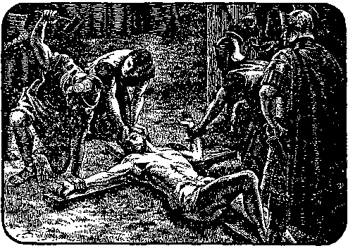raised Jesus, not as a man, but as a divine being, and set him at his own right hand, higher than he had ever been before. (Philippians 2: 9:11) Then was fulfilled the promise which God had given to Christ to “have life in himself” immortal life, divine life, “the express image of His [GW's] person.”—Hebrews 1:3.
Let us note carefully the different dispositions of Lucifer and Christ. We are not surprized that “God resisteth [pushes away from him} the proud, but giveth grace unto the humble.”—James 4: 6.
We can easily imagine what a shock it was to Satan when he learned that Christ had been resurrected and given supreme power in God’s kingdom, God alone excepted. His hatred of God and of Christ and of every one associated with them would be greatly increased.
We learned in a previous lesson that God purposed to make this extraordinary offer to others than Jesus, that they also might obtain the divine nature, immortality, the prize of the high calling of God. If our Lord needed to learn obedience “by the things which he suffered” (Hebrews 5:8), it would surely be necessary for all others who should receive so great a reward to be proved the same way. God therefore permitted Satan to continue his opposition for a while longer. This would be a severe, but necessary, schooling for every student in the school of Christ. The reward is exceeding great, but the path leading thereto is exceeding difficult. Every follower of Christ must be a victor before he can be crowned. God is not showing partiality by exalting overcomers to the position of kings in his kingdom.—Revelation 3: 21.
God saw good to permit Satan to buffet the footstep followers of Christ and to tempt them, but never above what they were able to bear, if they would fully rely upon him for help. To all outward appearances they are often left alone and forgotten by God. This tests their faith in God to the limit, but never to the breaking point, if they keep their hearts right towards him.
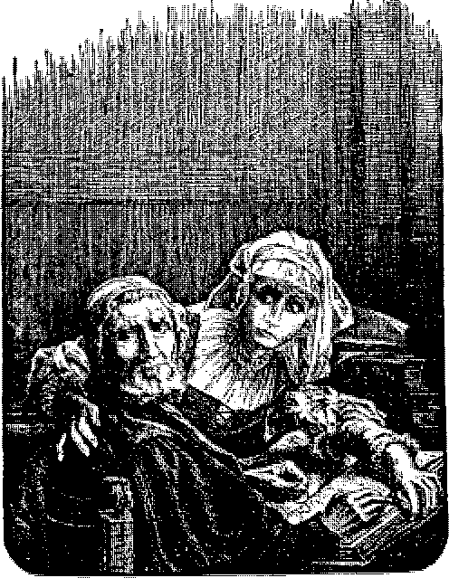We can easily see how the love of God would go out to such loyal trusting ones as he noted their noble fight against Satan, the influence of the world, and the natural tendencies in themselves to do evil. If a boy is endeavoring to pass an examination to win a prize, he cannot expect his father or any one else to learn his lessons for 147 him. He will have to learn them for himself, and pass his own examination, even if it be hard work. If men will endure great hardships to gain earthly prizes, how much more valuable would be a heavenly prize!
Satan was permitted to cause many of God’s servants to be put into prison. We have the record that St. Peter was at least twice in prison, St. Paul four times, and St. John and others a number of times. Satan was permitted to cause some to be killed by the sword, as was St. James (Acts 12:1, 2); some to be stoned to death, as was Stephen (Acts 7); and the records of history since the time of Christ are filled with accounts of horrible atrocities, persecutions, imprisonments and murders of God’s people. These were all instigated by Satan in his endeavor to overcome the followers of Christ, because they were prospective parts of the “seed” which is to bruise his head. (Galatians 3:29) What is the power that enabled Christ and his faithful followers to meet such bitter hatred and all manner of opposition and persecution? There must be some very strong motive power to hold them in such a narrow way. Yes; the strongest moral power known in the universe—love.
Let us go back a moment to our parable of the dog and the sheep. The dog had entered into a contract that he was first to be changed from a dog to a sheep. Then he was to die as a sheep. Death might come by disease and pain, or drowning or even by hanging. The contract called for death, the manner not stated. He was then to be resurrected as a man. He knew that he could not retain his dog body and become a sheep. Nor could he retain his sheep body and become a man. He must pass through two complete changes of nature. It would therefore make no difference in the end by what means he died as a sheep; for die he must.
The apostle Paul tells the church that “flesh and blood cannot inherit the kingdom of God"; in other words that no one can live in heaven with a human body, any more than a dog or a sheep could live as a man and still hold the dog or sheep body. A human being must have a human body. Likewise a being must have a heavenly body to live in heaven. Therefore whoever obtains the heavenly prize will have to leave the human body behind, which means to die as a human being.
St. Paul further says: “We [the church] shall all be changed, . . . for this corruptible must put on incorruption, and this mortal must put on immortality." (1 Corinthians 15: 51, 53) Paul wrote this letter to the church and not to people of the world; therefore this text applies only to Christians. Jesus told Nicodemus: “Except a man be born again, he cannot see the kingdom of God. . . . The wind bloweth where it listeth, and thou hearest the sound thereof, but canst not tell whence it cometh, and whither it goeth: SO IS EVERY ONE THAT IS BORN OF THE SPIRIT"—John 3: 3, 8.
No fleshly being can go like the wind. Therefore all those who are running for the heavenly prize know that they must die as human beings before they can expect to have divine, immortal bodies. It does not make so much difference to them when or where they die. God sometimes permits Satan to try to frighten them, sometimes actually to murder them. Satan thus demonstrates what a devil he really is; and at the same time the Christian demonstrates the power of the spirit of God operating in a consecrated heart to endure such experiences patiently. God also overrules that such experiences are but a way of escape from Satan. Their apparent defeat is actually a victory.—Romans 8:35-39.
With this view, it is easy to understand what St. Peter meant when he wrote: “But the God of all grace, who hath called us unto eternal glory by Jesus Christ, after that ye have suffered a while, make you perfect, stablish, strengthen, settle you."—1 Peter 5:10.
We thus see one more reason why God has permitted Satan to continue his deception and rule of violence so long. When the time comes, God will exercise his great power, and will overthrow all unrighteousness and evil doers, as we have already read in Revelation 20:1-3, and 11: 17. These texts are full of meaning now.
The Kingdoms of This World
WE HAVE now seen two pictures of world number two, one from the standpoint of God’s oversight: First, of a few individuals who were faithful to him, and of a nation which had entered into covenant relationship with him; second, of a “peculiar people” who have been following Christ through suffering to glory. Our second picture included the vicious activities of Lucifer and the suffering he caused when he made a devil of himself in his opposition to God.
Now we shall take one more general view, focusing more particularly on the efforts man has put forth to lessen his burdens, to extend his life, and to secure as much pleasure out of life as possible, but hindered by his own imperfection, his unrighteous surroundings, and the intrigues of Satan.
We will go back to the flood, and take a quick moving-picture of the entire age. Each of the three sons of Noah soon started families of their own. It was not long until their children grew up and started families, and thus families began to multiply. As the number increased, more room was needed. People began to spread out over the world, especially after the confusion of tongues at Babel.
It was hard work to dig the soil with the crude implements men then had, and it took time to plant the seed and to wait for the crops to grow. It was much easier to depend upon raising sheep and cattle. The herds and flocks could be pastured, and the wool and hides supplied clothing and tents, and the milk, butter and meat were good for food. These, together with domestic fowls, fruits, nuts, and the wild game secured, covered men's limited needs; and they were free to move at any time with little inconvenience.
As numbers multiplied, relatives and those of similar disposition were inclined to pitch their tents near together in little communities, for fellowship and protection. These clusters of tents became centers of business activity, in the way of barter, sociability, and exchange of commodities with travelers. Wild animals increased rapidly, and became destructive to cattle, sheep, and sometimes to people. Some kind of protection was therefore necessary. Sometimes walls were built around these centers, and thus little towns were started. Later, some of these grew to be cities, with extensive walls and fortifications.
Not all localities were equally fertile; and as the herds increased, their owners needed new pastures, for feeding grounds. Possibly they knew of some desirable locality which was already occupied, but the owners of which were unprotected and few in numbers. By joining together in companies the stronger bands could
The Kingdoms of This World 153 make war upon smaller settlements, take their cattle, make slaves of the settlers, and possess themselves of the rich feeding grounds. Thus early was the spirit of selfishness developed, and the sense of justice lost sight of. “Might makes right” was the standard set up in the overpowering desire to get as much as possible as easily as possible.
In the tenth chapter of Genesis we have a brief record of the families of Noah’s sons, and the countries in which they settled. This covers a period of several hundred years from the flood to the time of Abraham, who was born three hundred and fifty-two years after the flood, and two years after the death of Noah. Noah’s son Shem lived for five hundred years after the flood, probably the longest any one has lived since that time. Abraham was one hundred and forty-eight years old, and his son Isaac fortyeight years old, when Shem died. You can easily figure this out from the eleventh chapter of Genesis.
It was only natural that one in each little community or settlement or city should be the principal man. At first the honor might belong to one by right of being the oldest and most able; or it might be claimed on account of some special prowess or physical strength. It was not long until some of these leaders assumed the title of king, and began to lord it over the others. It might be only over a little city of a few hundred; but pride and ambition can sprout
and grow there just as well as in a larger place.
By Abraham's time there were many of these petty kings. In the fourteenth chapter of Genesis we have an interesting story of the first "league of nations” on record. Four kings made war on five kings. For twelve years one king, Chedorlaomer (Can you pronounce it?) had put other petty kings under tribute to himself; and when they rebelled, he determined to make them pay anyway. The record does not give the details; but we can see that the spirit of selfishness had already brought forth a bad crop, some living at the expense of others. Several of these kings lived in a plain now covered by the Dead Sea.
The four kings were victorious. All of the vanquished who were not killed either ran away to the mountains or were carried off as captives. The victors “took all the goods of Sodom and Gomorrah, and all their victuals, and went their way. And they took Lot, Abram’s brother’s son, who dwelt in Sodom, and his goods, and departed.” (Genesis 14:11, 12) All this misery resulted because a few kings demanded that other kings pay tribute to them. It was nothing more than highway robbery.
When Abraham heard of it, he armed his servants, formed an army of three hundred and eighteen, followed after the victorious kings and overtook them near Dan. He defeated and pursued them to Damascus, nearly one hundred and fifty miles from his home. That was nearly four thousand years ago; and Damascus was even then a city, though probably not very large. Look it up1 on your maps.
Abraham rescued Lot and his family, and let them go back to their ruined home in the plain of the Jordan. The 13th, 18th, and 19th chapters of Genesis give some interesting details about Sodom and Lot. It is the same city mentioned by Jesus in Matthew 10:15. What did he mean by saying: “It shall be more tolerable for the land of Sodom and Gomorrha in the dag of judgment”f The answer is found in Ezekiel 16: 55 and 37:12-14, and Acts 17: 31.
Melchizedek, king of Salem, met Abraham on his return and blessed him. The apostle Paul tells us God overruled to make this incident a picture of a part of his plan to be brought forth later. Melchizedek here represented Christ as the future blesser of mankind. Salem, the city just mentioned, was in the mountains near where Abraham later offered up Isaac, and is now known as Jeru-Salem.
The ark in which Noah was saved had rested upon the mountains of Ararat, nearly eight hundred miles northeast of Jerusalem, and a little west of the Caspian sea. Abraham and Lot had come from Ur of the Chaldees, in the low fertile plain through which the Euphrates and Tigris rivers flow, between two mountain ranges. Ur was over five hundred miles from Mount Ararat; Egypt was south of Canaan, and people lived in all those places. By that time they had traveled and had settled over quite an extensive territory. They naturally sought the fertile valleys instead of the barren mountains.
This was about four hundred and fifty years after the flood; but four hundred years is a long time. Great changes can take place in that length of time. It is doubtful whether there were one hundred white people in all of America in the year 1500 A. D., and that is only a little over four hundred years ago. Compare that number with the present population.
We stop here long enough to take a peep at the great pyramid of Gizeh in Egypt. It was built about four hundred years after the flood. This great structure covers nearly thirteen acres, and is the most remarkable building in the world, in its location, its shape and its size, as well as in its interior chambers. Although it is very rough and unsightly on the outside now, when it was first built it was covered with polished marble and glistened in the sun like glass. It is quite probable that Shem, the son of Noah, a faithful servant of God, was in charge of its construction. In it have been discovered some of the deepest secrets of geometrical, geographical, astronomical, and mathematical science.
The pyramid also outlines in its own peculiar way the same plan of God that we find in the Bible, and it dated beforehand some of the most notable events that have occurred in the history of mankind. It gives the date of the exodus of the Children of Israel from Egypt, and the date
GOD'S PLAN WRITTEN IN STONE
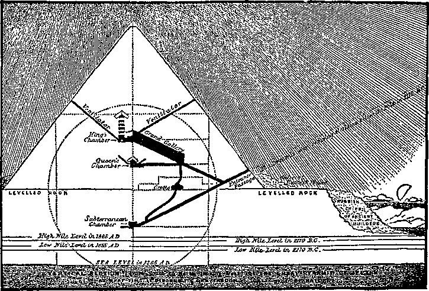of the birth and the death of Jesus. It gives the date of the French revolution as 1789, and the great World War as 1914, besides many more. It was built over five hundred years before Moses wrote any part of the Bible. It is so far in advance of the wisdom of that day that no man could have been the architect. Its harmony with the Bible teachings prove that God designed it. Isaiah makes reference to it as follows: ‘Tn that day shall there be an altar to the Lord in the midst of the land of Egypt, and a pillar at the border thereof to Jehovah. And it shall be for a sign and for a witness unto Jehovah of hosts in the land of Egypt." (Isaiah 19:19) This pyramid has been called “The Bible in Stone,” a very appropriate name.
The spirit of selfishness continued; and man’s sense of justice was almost entirely effaced. The stronger considered it his right to take whatever he could, whenever he could, from his weaker neighbor. Selfishness, injustice, crime, murder, and rapine increased between neighbor and neighbor, between community and community, and between nation and nation. Man refused to listen to God, and was determined to have his own way. As the beasts of the field became wild when they lost their master, so man also became wild when he lost his Master. He began to be vicious and depraved. Satan had much to do with aggravating the conditions.
Although man had refused to worship God, he had an instinctive desire to worship something. He began to make gods of his own. "They lavish gold out of the bag, and weigh silver in the balance, and hire a goldsmith; and he mak-eth it a god: they fall down; yea, they worship. They bear him upon the shoulder, they carry him, and set him in his place, and he standeth; from his place shall he not remove: yea, one shall cry unto him, yet can he not answer, nor save him out of his trouble." (Isaiah 46:6,7) Some worshiped the sun, moon and stars. Others deified animals, as the Egyptians, who worshiped the sacred bull Apis. Idol worship led men to lower and lower depths of immorality and sin, as mentioned in Romans 1:21-32.
As mankind further multiplied, they collected into larger communities, or cities, and finally into nations. The Scriptures mention the kingdoms of Egypt, Syria, Assyria, Babylonia, Media, Persia, and others, also some of the large cities of earlier times, such as Nineveh and Babylon. You can read more about these in your ancient histories. These larger cities were strongly walled, and became not only centers for trade but fortresses for armies and capitals and residences for kings.
Babylon, under its most notable king Nebuchadnezzar, finally became master of all other kingdoms, and hence the first universal or world empire. It ruled from the Caspian sea and the Persian gulf on the east, to the Black sea, and Egypt on the west and south, a territory extending in some directions nearly 1,800 miles.
Nebuchadnezzar was one of the most noted kings of ancient history. In the second chapter of Daniel is the record of a dream which this king had, and the interpretation of the dream by the prophet Daniel. Briefly it outlined four world empires—Babylonia, Medo-Persia, Gre-cia, and Rome—to follow in the order named. Each would conquer, and rule in the place of its predecessor. To Nebuchadnezzar these empires appeared as the mighty image of a man, very attractive. Verse 44 makes mention of them as “all these kingdoms.”
Later, Daniel had a vision of these same nations; but to him they appeared as ravenous beasts, slaying and devouring each other. One was like a wild lion, another like a wild bear, the third like a four-winged leopard with four heads. The fourth was so terrible that Daniel knew of no name for it, but described it as “dreadful and terrible, and strong exceedingly; and it had great iron teeth: it devoured and brake in pieces, and stamped the residue with the feet of it: and it was diverse from all the beasts that were before it; and it had ten horns.” (Daniel 7:7) None of us would want to meet such a terrible, vicious beast as that. This was a vision of the same kingdoms that Nebuchadnezzar saw; but how differently they looked to Daniel, a man of God, than to Nebuchadnezzar, a proud monarch of the world!
From God’s viewpoint all these kingdoms had the spirit of wild, vicious, devouring animals.
History proves that Daniel had the correct view. "Wild animals live upon each other, and it has been the same with the nations of the world.
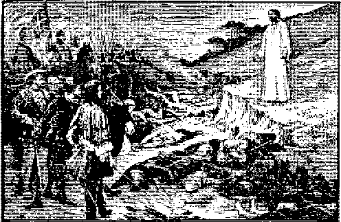THE COST OF THIS WORLD'S HONOR
They have lived upon each other, enslaved, robbed, murdered, and destroyed each other. It seems strange that the world has usually honored and applauded most those men who have really been the greatest robbers and murderers, the war-lords. The people have been forced into armies, to fight for these rulers, the very ones who treated them the worst, and who used them to do the drudgery of life’s work, while these kings lived at the expense of their subjects and slaves.
Nebuchadnezzar had hundreds of thousands of poor slaves to do his bidding, fight his battles, and supply him with all the delicacies of life, while he held their lives in his hands, and could cut their heads off if they complained. Yet all his power depended upon them. Even the prophet Daniel urged him to leave off his sins. (Daniel 4:27) To do this took some courage on the part of Daniel; for Nebuchadnezzar could have ordered his head cut off for suggesting that a king should change his ways.
Cyrus headed the second world empire, the bear of Daniel’s vision. Alexander the Great headed the third empire, the four-headed leopard; and the kings of the Roman empire were represented by the terrible, undescribable beast. All were like Nebuchadnezzar, wild beasts in their dispositions. Does it not seem strange that the people would submit to such unrighteous usurpation of their rights and liberties when they could have refused to give that service and thus deprive the kings of their power? St. Paul explains it for us in 2 Corinthians 4:4, that "the god of this world hath blinded the minds of them which believe not.”
Man was bound to worship something; and having refused to worship God, he fell an easy prey to Satan, who quickly took advantage of such an opportunity. He therefore began to set up these kings as gods to be worshiped. Dire punishments followed if men opposed these false gods; hence the people submitted. This greatly pleased the kings themselves, and they were quick to sponsor the idea. Satan, by ruling these rulers, really ruled the world. Proud,
selfish, egotistical, grasping for power himself, and without love or justice, he sought to place in positions of authority those whom he could best use to his own ends. History records that some of the basest specimens of humanity have thus been exalted to rule over others.
Satan further saw that if the people learned of him personally and of his methods, they would rebel; hence the only way for him to do was to keep the people in ignorance. He, therefore, has been the implacable enemy of education, permitting only a little knowledge to the rulers, and lessening that amount whenever he could. In its place he has inculcated prejudice, superstition, egotism, and selfishness. This is the real cause of the ignorance of the dark ages which brought forth such a terrible crop of injustice and persecution that civilization recoils at the reading of the records of that time.
At our Lord’s first advent, Satan tempted Christ by offering to give him all the kingdoms of the world if our Lord would fall down and worship him. (Matthew 4:8, 9; Luke 4:5, 6) Could he do it ?
In Ephesians 6:12 the Apostle tells us of the governments and powers of Satan, saying, “We wrestle . . . against principalities, against powers, against rulers of the darkness of this world, against wicked spirits in heavenly places [marginal rendering]/' Satan was wise; he knew that he could accomplish far more by working in systematic order and by combining all his forces
under himself as chief. God was Supreme Ruler in heaven. Why should he (Satan) not be supreme ruler on earth ?
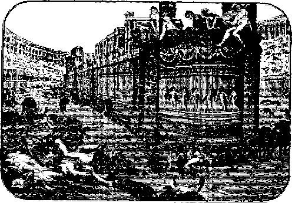SATAN'S SLAVES SLAUGHTERING CHRISTIANS
By distributing positions of authority and power to various ones, he would enlist their cooperation and interest, and thus build up a powerful organization. First he organized his fellow angels into various groups, principalities, powers, rulers of darkness, and set some of these “wicked spirits” in high positions, “heavenly places.” Daniel makes mention of the “prince of Persia” and of the “prince of Grecia” (Daniel 10:13, 20) who withstood the angel of God. How many more there are we are not informed; but Satan is spoken of as the “prince of the devils” (Matthew 9:34; Mark 3:22) and “god of this world.” Even our Lord spoke of him as the prince of this world.” (John 14: 30) In other words, Satan was not only head of those “wicked spirits in the heavens”, hut also was the unseen though real head of the unrighteous kingdoms of earth. Evidently he told the truth when he told Jesus that he had the kingdoms to give; hut it is very doubtful whether he would have kept his promise, if Christ had bowed down and worshiped him. He had become past master at lying, and there is no likelihood that he would give his position to another.
In some instances God assisted some worldly monarchs, and at other times restrained the power of Satan, in order to fulfill his promises to his people. The special messenger sent to
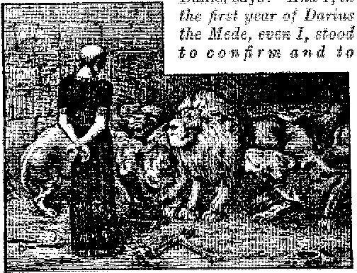strengthen him." (Daniel 11:1) Daniel also says that God sent an angel to protect him from the lions when, as instruments of Satan, wicked men who could not thrive under Daniel’s demand for honesty, tried to get rid of him. (Daniel 6: 22) God also overruled that Cyrus should permit the Jewish captives in Babylon to return to their own country, at the end of their seventy years of punishment.—2 Chronicles 36: 22, 23.
It does not take very keen observation to see that all the kingdoms of the world are still actuated to a more or less extent, by the spirit of selfishness, the spirit of the devil. There are many grand, noble-hearted, justice-loving men in each of these kingdoms, but they are always in the minority. Satan has blinded even them to some extent, so that they cannot see the promise of God to establish a kingdom based upon justice, righteousness, and love. (Psalm 72:7-19) It will be the very thing they have desired all the time, and were trying in their own strength to establish. They have yet to learn that they can never accomplish so great a work without the assistance of God, who says: “I will shake all nations, and [then} the desire of all nations shall come."—Haggai 2: 7.
Not seeing the coming of this kingdom of God, and believing that what they have is the best obtainable, these men fight for what they have, even to laying down their lives in its defence. Could they see the glory of the kingdom of God, they would hail every indication of its approach with joy. Satan has mistaught the people that the "world to come” will bring a time of terrible disaster, something to be greatly dreaded. He has kept them in ignorance, “lest the light of the glorious gospel of Christ . . . should shine unto them.” (2 Corinthians 4: 4) He knows that after an experience of six thousand years with sin and its deadly poisons, if the people heard the good news of God's kingdom his power would be at an end; for they would quickly repudiate Satan and gladly welcome the King of righteousness, equity and love.
Some people have learned valuable lessons by being sick. The more sick they were, the more they dread a repetition of the experience, and the more they esteem the ability of the physician who brought them back to health. So man in due time will appreciate the love and goodness of God, who saved him from the clutches of the fiend, Satan, and recovered him to the health, beauty, and perfection lost by our father Adam.
Both Nebuchadnezzar and Daniel saw in their visions the coming of a fifth kingdom. To Nebuchadnezzar it appeared as a stone which knocked his big man all to pieces. To Daniel it was “One like the Son of Man came with the clouds of heaven, and came to the Ancient of Days, . . . and there was given him dominion, and glory, and a kingdom, that all people, nations, and languages should serve him: his dominion is an everlasting dominion, which shall not pass away, and his kingdom that which shall not be destroyed.”—Daniel 2:44,45; 7:13,14.
Through Daniel and other prophets the Lord foretold the signs by which his people might know when this kingdom was near. There would be a great increase of knowledge along every line of science, to overcome the dense ignorance which had preceded. There would be much intermingling of the peoples of the earth by traveling to and fro. We are told by nearly every writer of note today that the past fifty years have been the most wonderful in all the world’s history. This period is well named the “Age of Miracles.” Just ask your grandfather and your grandmother to tell you how they lived when they were young, and what kinds of farm machinery and house furniture they had to do with; and compare those conditions and their manner of living then with what we have today. Ask them all kinds of questions. It will open your eyes, and give grandpa and grandma a pleasant visit to the land of reminiscences.
This increase of knowledge is what Satan dreads. He has persecuted every bearer of advanced light. He had Galileo and Copernicus put into prison for daring to say that the world is round. He had hundreds of thousands of people imprisoned, persecuted, and murdered, and burned at the stake during the dark ages for declaring that the doctrine of eternal torment is not taught in the Bible, and that it is a libel against the God of love. Through the ig-noranee, bigotry, superstition, and egotism of his dupes he caused thousands to be sacrificed for not swallowing the preposterous doctrine which the monster Constantine forced upon the church—that God and Christ and the Holy Ghost are one and the same person—a doctrine which no mind ever has understood or can understand, and which is repugnant to every statement of the Bible on the subject.
In due time God opened the windows, and let in some light. When men began to taste the delights of intelligence, it was impossible for Satan to stop them. When the printing press was invented and used for printing the Bible, he determined to side-track it as much as possible and use it for his own purpose. He influenced many by making it profitable and popular for them to write and print fiction of all kinds with which to fill the hungry minds of the people. If he cannot hinder advancing light by other means, he descends to ridicule and slander of those who are trying to do good. When he was unable to meet the truth which Christ presented, he tried to make the people believe that Christ himself was a devil (Matthew 12: 24), or that his mother was a bad woman.—John 8:41.
The Bible thus throws a flood of light upon history, by revealing the real cause of the persistent persecution of righteousness and truth. All the way down during world number two it reveals a personal devil who hates God and all that God represents, and who has been using men, often as his blind tools, to carry on his nefarious work of opposition to God. What a curse he has been to the world! Nevertheless, God will overrule all this and turn it into a blessing, in that man, when escaped from Satan’s clutches, will dread sin all the more betause of his past experiences.
About one hundred years ago, the beginning of the nineteenth century, God brought the Bible out of the obscurity of the dark ages. The great Bible Societies, which have scattered Bibles by the millions, were all organized shortly after the beginning of the last century. It has been during this same time that knowledge has increased and the world enlightened as never before. This is another evidence that there is some strange influence connected with the Bible operating for the relief of mankind and the betterment of his social condition. The Psalmist says: "The entrance of thy word giveth light” ; and history proves this to be true.
Satan is making one more desperate effort to offset the influence of the Bible. He is pushing the doctrines of evolution, higher criticism, and so-called Christian Science, all of which deny the three fundamental teachings of the Bible, viz., A ransom for all (1 Timothy 2:5, 6), a restitution opportunity for all (Acts 3:19-21), and the high calling for the church.—1 Corinthians 1: 26; Romans 11: 25, 26; Acts 15:13-17.
In Revelation 11:15 we have pictured before us a coming event: “And the seventh angel sounded; and there were great voices in heaven, saying, The kingdoms of this world are become the kingdoms of our Lord and of his Christ; and he shall reign [on earth] for ever and ever" This event will put an end to world number two. The Bible and “The Bible in Stone” give the date 1914 for the beginning of the great change. History proves that the ouster proceedings began promptly on time. Prophecy indicates that 1925-1926 will see the greater part of the ousting completed. All the world's statesmen are dreading the next few years. They are greatly perplexed and very anxious, “men’s hearts failing them for fear, and for looking after those things which are coming on the earth; for the powers of heaven [those we have just been studying about, wicked spirits in the heavens] shall be shaken."—Luke 21:26.
No machine will run itself. The engine must have the steam; the motor must have the electricity; the windmill will not run without the wind, nor the water-wheel without the water. There must be some power to make them go. It is the same with living beings. Animals have the pinch of hunger or the sense of danger or other necessities for the preservation of life, to incite to action. Man, in addition to these, has moral motives. One who never saw an engine or motor before, might ask: “What makes it go ?” There is nothing but the motion to be seen. The propelling power is out of sight.
The motive for your actions may be out of sight, but it is there. What is the motive for your actions? Answer the question by asking yourself another: Why did you do it? Trace each action back carefully along this line and you will find the real motive for it.
By tracing the actions of world number two, it is easy to locate the chief motive power— selfishness, in one form or another. Steam is a wonderful power, but it must needs be controlled. Every engine must have some form of governor, or it will wreck the engine. Every motor must have a controller. Selfishness is a great motive power; but it also must be controlled, or there will be a wreck.
A certain amount of self-interest is necessary for every individual or nation; but self-interest will soon become selfishness if not watched. In other phrase, men and angels can become drunk on selfishness. If a boy secures one marble, he often wants ten; when he gets ten he wants a hundred. But too many marbles become a nuisance, and the boy has sense enough to stop. But if a man gets a thousand dollars, he immediately wants a hundred thousand; and if he secures them he wants a hundred million. His appetite becomes insatiable. No matter how much of a burden it becomes, he cannot be satisfied. He has become drunk on selfishness, in the form of the love of money. It is not the money he wants; he may have more than he knows what to do with; what he wants is something to satisfy his terrible thirst. He has become a money fiend. The same is often true of pleasure, authority, or even dissipation. One may be king of a small nation; he will pauperize and even cause the murder of thousands of his fellow men to become king of a larger kingdom. There is no limit to selfishness.
Some may say: If we do not have something for a motive power, what ■will energize man to activity? He will become so lazy that he would not do anything. Well, let us investigate a little. Has selfishness brought happiness, contentment, peace or joy to life? Let history answer. There have been glittering shows, great pomp and displays of wealth and power; but have they left any happiness behind? Did you ever know a selfish person who was happy? No! He is a nuisance to himself and to everybody else. It is the same with a selfish nation. Nor can a nation be peaceful with selfish neighbors.
World number one was wrecked by a flood of waters, because the wickedness of man became so great that Jehovah, in righteousness, would not permit it to continue longer. Satan secured control of world number two, and installed selfishness as the motive power. He neglected to provide a governor with which to control it; and now it is running wild, under full head on a down grade, and will soon land in the ditch of anarchy, a hopeless wreck, even the memory of which will cause a shudder throughout the ages to come.
174
satan's agents persecuting followers of christ
The New Covenant or Contract
LOOKING- back over 6000 years of history we see the wreck of the human race, with billions already in the grave, and those who have a little life left headed in the same direction with apparently, to them, no prospect of escaping the same destination. For six days of 1,000 years each, man has been working hard to extricate himself from the clutches of death; but not one member of the race has been able to escape.
Our Lord drew a vivid picture of present conditions when he said: ‘For then shall be great tribulation, such as was not since the beginning of the world [number two'] to this time, no, nor ever shall be. And except those days should be shortened, there should be no flesh saved: but for the elect’s sake those days shall be shortened."—Matthew 24: 21, 22.
Some people wait until they are utterly helpless before they send for a doctor. God has permitted the human race to reach a helpless condition, where they will earnestly seek for his assistance. (See Isaiah 2:2-4) Knowing that they would reach that end in time, God prearranged for the necessary help and had it recorded by his prophets.
St. Peter calls attention to these promises, 175
saying, "And he shall send Jesus Christ, which before was preached unto you: whom the heavens must receive until the times of restitution of all things, which God hath spohen by the mouth of all his holy prophets since the world began."—Acts 3:20, 21.
The prophet Isaiah (9: 6, 7) adds: "The government shall be upon his shoulder; and his name shall be called Wonderful, Counselor, The mighty God, The everlasting Father, The Prince of Peace. Of the increase of his government and peace there shall be no end, upon the throne of David, and upon his kingdom, to order it, and to establish it with judgment and with justice, from henceforth even for ever. The zeal of the Lord of hosts will perform this."
This Prince of Peace is fully able to accomplish all that is promised. He is to do a restitution work. Do you know what the word restitution means? “Restoration to, return to, or recovery of a former position or condition.” What was the first or former condition of man? Perfection. "The Son of man came to seek and to save that which was lost." (Luke 19:10) St. Peter says that Jesus is to restore that which was found.
The question arises, How can Jesus do it? Think of all the billions in the grave, and the low physical and moral condition of thousands who are not yet dead, and all the ignorant heathen who never heard of him. The Bible answers that it will be done by means of and
The New Covenant or Contract 177 through the terms of a contract between God and Christ, known as the New Covenant.
We recall that God made a covenant with the Children of Israel in Mount Sinai at the hand of Moses, who acted as their mediator. (Leviticus 26:46) Jesus called attention to the validity of that contract when the lawyer asked him, saying, “Master, what shall I do to inherit eternal life?" Jesus asked him what were the terms as written in the law covenant which God had made with the Jewish nation through Moses. The lawyer quoted the law, and Jesus “said unto him, Thou hast answered right; this do [keep the terms of the law as commanded'} and thou shalt live [get the everlasting life you desire}.” (Luke 10: 25-28) The lawyer did not want to go to heaven; he wanted to know how he could keep on living on earth forever.
Why did not he and the rest of his nation secure the everlasting life they all desired? Was there anything wrong with their contract? Yes, says the Apostle. One of the contracting parties could not live up to the terms of it. “It was weak through the flesh” (Romans 8:3) The imperfection of their flesh prevented them. (Romans 7: 22, 23) Could not Moses their mediator assist them in any way? No! He also was imperfect and could not furnish the assistance needed. However, the Apostle says that their experiences under the contract acted as a “schoolmaster” to teach them their need of a better mediator than Moses.—Galatians 3: 24.
Knowing that neither the Jews nor any other nation in an imperfect state could keep his perfect law, God had already arranged for another and a better covenant with a better and abler Mediator. Comparing the covenant made with Moses with the one made with Christ, the Apostle explains: “The law [covenant] made nothing perfect, but the bringing in of a better hope [by means of a new covenant] did. . . . Now of the things which we have spoken this is the sum: We have such an high priest, who is set on the right hand of the throne of the Majesty in the heavens [Jesus the Mediator of the better covenant]; . . . But now hath he [Christ] obtained a more excellent ministry [than Moses], by how much also he is the mediator of a better covenant [margin, testament], which was established upon better promises. For if that first covenant had been faultless [able to save the people], then should no place have been sought for the second. But finding fault with them, he saith, Behold, the days come, saith the Lord, when I will make a new covenant with the house of Israel and with the house of Judah: not according to the covenant that I made with their fathers in the day when 1 took them by the hand to lead them out of the land of Egypt; because they continued not in my covenant, and I regarded them not, saith the Lord. For this is the covenant that I will make with the house of Israel after those days, saith the Lord; I will put my laws into their mind, and write them in their hearts: and I will be to them a God, and they shall be to me a people: and they shall not teach every man his neighbor, and every man his brother, saying, Know the Lord: for all shall know me, from the least to the greatest. For I will be merciful to their unrighteousness, and their sins and their iniquities will I remember no more. In that he saith, A new covenant, he hath made the first old.”—Hebrews 7:19; 8:1, 6-13.
This New Covenant is mentioned again in Romans 11:26, 27: “And so all Israel shall be saved [from-the grave—Read Ezekiel 37:12-14 in this connection]: as it is written, There shall come out of Zion the Deliverer, and shall turn away ungodliness from Jacob [Jacob often stands for the whole house of Israel]: for this is my covenant unto them, when I shall take away their sins.”
As the first covenant was not made with the Children of Israel directly, but through Moses as a mediator, so the second will not be made with the people directly, but with Christ the Mediator. “For there is one God, and one Mediator between God and men, the man Christ Jesus; who gave himself a ransom for all, to be testified in due time [this knowledge shall reach all the sons of Adam in due time].”—1 Timothy 2:5, 6; Acts 4:12.
This contract between God and Christ was, so to speak, signed and recorded when God accepted the sacrifice presented by Christ in the courts of heaven after his resurrection and ascension.
God there in the presence of the hosts of angels delivered to Christ the contract and all the specifications, as recorded in Revelation 5:1-13.
Part of that contract calls for the restoration of the human race to the perfection which Adam possessed before his disobedience. The whole race was condemned not because of individual transgressions, but because of one man’s disobedience; so the whole race will be justified from that condemnation, not because of individual righteousness, but because of the ransom which Christ gave for Adam, as we read: “By the offence of one [Adam] judgment came upon all men to condemnation [to the first death]; even so by the righteousness of one [Jesus] the free gift came upon all men unto justification of [another, a second] life.” (Romans 5:18) “For as in Adam all die, even so in Christ shall all be made alive [awakened to life again].”—1 Corinthians 15:22.
Does this guarantee that all the awakened ones will be assured everlasting life? 0 no! It only puts them back on the plane of human life, where Adam had been and where they should be able to stand a personal examination for life eternal. The law of that day will be different in operation from what it is up to that time. We read of that day: “What mean ye, that ye use this proverb concerning the land of Israel, saying, The fathers have eaten sour grapes, and the children’s teeth are set on edge [In other phrase, why do the children of Adam die because he sinned] f As I live, saith the Lord God, ye shall not have occasion any more to use this proverb in Israel. . . . When the son hath done that which is lawful and right, and hath kept all my statutes, and hath done them, he shall surely live. The soul that sinneth, it [alone] shall die. The son shall not bear the iniquity of the father, neither shall the father bear the iniquity of the son; the righteousness of the righteous shall be upon him [upon himself alone], and the wickedness of the wicked shall be upon him [upon the wicked alone].”(Ezekiel 18:2, 3, 19, 20) The whole chapter treats of the laws of that age.
Everything will be done in an orderly and proper manner, as we are told: “But every man in his own order; Christ the firstfruits; afterwards they that are Christ’s at his coming [more properly translated ‘during his presence,’ while he is king]. Then cometh the end [of his reign], when he shall have delivered up the kingdom to God, even the Father; when he shall have put down all rule and all authority and power[which were in opposition]. For he must reign, till he hath put all enemies under his feet.”—1 Corinthians 15:23-25.
A little illustration may help us. We will suppose that a manufacturer of automobiles has turned out a thousand good machines. Owing to carelessness or ignorance of the chauffeurs every machine has become wrecked and has been sent back and turned over to the junk pile. A good mechanic sees the pile of worthless machines, hut knows that he is able to repair every one of them. He goes to the manufacturer, and makes him an offer to rebuild them as good as new. The mechanic has the ability, tools, shop, and supplies. Knowing this, the manufacturer agrees. A contract specifying terms, time limit and other conditions is drawn up and signed by both parties. At the end of the time the mechanic has the machines all restored, in perfect order; and the owner could not tell the difference between them and the new ones in his warehouse. The owner accepts them and pays the stipulated price. That ends the contract. However, the owner never sends out a machine, not even a new one, without a thorough test. He does this for the protection of his own reputation. Therefore he now proceeds to test each one of the restored machines.
Even so in the covenant between God and Christ. Christ contracts to take over the whole broken-down human race, the dead as well as the living, and to restore, make over as good as new, every one who may so desire. He is not under contract to give them everlasting life, but to put each one into such a condition that he should successfully stand an examination for life eternal. Such a test will be demanded by Jehovah after the restoration has been reached, and not before. This is explained in the 20th chapter of Revelation. Adam was not examined while in an imperfect condition, neither will his children be tested while in an imperfect condition.
Now let us go back to our parable of the automobiles. It would be necessary for the contractor to examine carefully all the inside workings of the machinery to see whatever was wrong, and to put in whatever new parts were needed, or make the necessary repairs on what was out of order. Likewise, in fixing up human beings it will be necessary to see that the machinery inside is repaired, and broken parts exchanged.
See how the Prophet has explained all this: “And I will give them one [kind of] heart, and I will put a new spirit within you; and I will take the stony heart out of their flesh, and will give them an heart of flesh." (Ezekiel 11:19) Of course this does not mean that some people have hearts of real stone, but we all know of some who do have very stony hearts. They are very hard, and have no love or sympathy or interest in any one but themselves. There will have to be a change of heart for such people. They will have to secure hearts that are soft and tender.
We also read how the great Contractor is to write the laws of God upon their hearts and in their minds. Surely that will be working on the machinery inside; and so the Prophet expresses it: “I will put my law in their inward parts." (Jeremiah 31: 33) Some will need a great many new parts, but the great Mechanic has all the supplies necessary. All will be in need of new flesh and health, and the color of beauty and youth on the outside.
Thus we see the terms of the New Covenant simply guarantee to restore the children of men to physical and mental perfection. The moral perfection will be for each to build for himself.
In fixing up a human machine there is a very important part not found in any machine made of metal, namely, a will of its own. It is very necessary to have the cooperation of this will, or there will be no chance of doing a work that will stand the moral tests which Jehovah demands from all to whom he grants eternal life.
Neither God nor Christ will ever coerce the will into obedience. That will always be left to each individual. Therefore, when Christ delivers the world of mankind over to the Father, after he has completed his work under the new contract, all obligations of it will be completely fulfilled, and the contract ended.
As it was a matter between God and Adam whether Adam would be obedient and have the privilege of eternal life, so it will be between God and each individual after the restoration whether such individual will be obedient and receive eternal life. As many as stand the tests will be abundantly rewarded. Those who do not, will fail, not because of imperfect work on the part of Christ, but because of the stubbornness of their own wills. All such will be sent back to death, the second death, from which they will never be resurrected. We shall learn more of this later.
For the members of the church who run for the heavenly prize God has made a special arrangement. Instead of waiting for Christ to restore them to physical perfection, and then offering to accept their sacrifice as perfect (Romans 12:1), God offers to credit them with perfection, justification, if they will accept Christ as their Advocate, and make a covenant with him to follow his instructions implicitly. "Being justified by [our] faith, ive have peace with God through our Lord Jesus Christ: by whom also we have access by [our] faith into this grace wherein we [now] stand [the privilege of entering the race for the high calling] and rejoice in hope of [attaining] the glory of God.”—Romans 5:1, 2.
This also has been a mystery to many, because they could not understand the object of God’s offering to justify any by faith; and also because they did not see the difference between the high calling for the church, and the restitution for the world, and that all members of the church must be counted perfect before becoming candidates for the heavenly election.
With this clearer understanding of what is to be accomplished during the “world to come,” let us now see how it is all to be brought about. Have you made your guess as to the moral motive power which is stronger than selfishness ? It is not only such a strong motive power, but it has a great many other wonderful powers. We will take this up in our next study.

"the kingdom of heaven is at hand"
186
World Number Three
The Kingdom of Christ
YET have 1 set my king upon my holy hill of Zion. . . . Ask of me, and I will give thee the heathen for thine inheritance, and the uttermost parts of the earth for thy possession. Thou shalt break them with a rod of iron; thou shalt dash them in pieces like a potter's vessel."— Psalm 2:6; 8, 9.
A long time ago was written a very touching story. It was in the early history of this country, and on the border of the settlements. Neighbors were few and sometimes far between. It was a beautiful winter’s day. The wife of one settler decided to go and visit a neighbor’s wife whom she had not seen for some time. The distance was several miles, but the day was bright and pleasant, and she could walk it without difficulty. She took her little babe in her arms and started.
It soon clouded over, and one of those terrible snow storms known as blizzards came on, which come very suddenly. She had gone too far to return home, and was yet some distance from her neighbor’s. She hurried forward with all possible speed, but as the storm increased she soon realized that she was lost. It was rapidly getting colder, the wind was blowing a gale, and 187
the blinding snow chilled her through. She wrapped the covering closely around the little one to protect it. It soon became dark, and she realized that she would have to spend the night on the prairie in the storm. The babe began to cry. Mother love could not let the little one suffer. She removed the shawl from her own body, and wrapped it around her babe as well as she could. A little later the child cried again. The mother tried to nurse it under the cover of the shawl, protecting it as much as possible from the terrible storm. The little one again went to sleep, unconscious of its danger. The mother realized that she could not survive the night, so she removed her dress and all the clothes she could except her undergarments, and with stiffening fingers wrapped them carefully about her little one with the shawl over them all. Then she lay down in the snow, and curled her own body about the bundle further to protect and keep her little one warm. The next day, when the storm was over, she was found. The mother’s body was frozen stiff; but snugly curled up in the bundle was the little one, still alive and well.
Suppose you had been that baby. Of course you would not know anything about the matter until you grew older and some one told you. You would never grow tired of the story of that mother who gave her life that you might live, and of the touching thought that she was your mother. “Where did that mother get her great love ? Why did she not take all the clothing and try to save herself? Ah! God had planted that love in the human heart. Could he place there something which he himself did not possess?
We have read of another story, that "God so loved the world, that he gave his only begotten Son, that whosoever believeth in him, should not perish, but have everlasting life.” (John 3:16) Do you think that gift cost God nothing?
When Adam deliberately decided to disobey his loving Creator, can we think that his decision caused God no grief? If he let Adam go unpunished, it would show that he had no respect for his own law. How, then, could he expect others to respect it? When Lucifer also took his own course, it became more serious. God had the power to punish Lucifer summarily, and to banish him immediately from heaven. But what would all the heavenly hosts think of it? They did not know the terrible results of sin. Lucifer was greatly beloved by all his associates. Not understanding the situation fully, many of the angels might think God very arbitrary and unjust to destroy Lucifer.
God always takes the best course, the one which will accomplish the most and in the best way. It may not at first appear so to his creatures, but he assures us that we shall all see it later: "And every creature which is in heaven, and on the earth, and under the earth, and such as are in the sea, and all that are in them, heard I saying, Blessing, and honor, and glory, and power, "be unto him that sitteth upon the throne.” —Revelation 5:13.
The angels of heaven did not fully appreciate the wisdom, power, love and justice of God. How could they any more than a child can fully appreciate the wisdom and ability of its parent? God therefore decided to meet the deflection of Lucifer with a plan which would manifest his own true character to all his intelligent creation. He determined to permit Lucifer to take his course without apparent opposition or hindrance. This would be an object lesson as to the actual results of sin. An experience is often more convincing than logic. The record of it would also be for the information and benefit of billions yet unborn. They would thus know that “the wages of sin is death."—Romans 6:23.
With no restraint apparent, and the rebellion on the part of Lucifer prospering, the faith of every angel would be severely tested as to whether God could cope with the situation or not. This would be a character-developing experience for them. It would necessitate their reasoning upon the principles of right and wrong; and each angel would be free to make a choice, unhindered by the fear of punishment, as God had put forth no effort to hinder or to punish Lucifer. Possibly some even questioned God’s ability to punish so mighty a prince as Lucifer. The waiting continued for several hundred years, until God manifested his power by sending the flood. By that time every angel had taken his stand, for God or for Lucifer. Many people have the same question in their minds today, Can God bring order out of the present terrible conditions!
Had God not permitted sin, and then provided a way to redeem the sinner, there would not have been the opportunity to manifest his great love for his creatures by giving his Son to die as a ransom. Nor would there have been the opportunity for him to offer the great prize of immortality to Christ for his loving obedience and loyalty, even unto death. Neither would there have been the opportunity to extend the offer to any to become the bride of Christ on the same terms.
There would never have been the exhibition of the contrast between righteousness and its results, as manifested in Christ, and unrighteousness and its results, as manifested in Lucifer. All this was done without forcing or coercing the will of a single individual. Could a better plan have been adopted? When fully understood it will be a most forceful appeal to the affection, love and devotion of all creation. They will thereafter need no command to love and obey God. Love is a tie far stronger than any command. “True worshipers shall worship the Father in spirit and in truth: for God seeketh such to worship him" (John 4: 23) Love is also a far stronger motive than selfishness, and God himself has set the greatest example. “We love him, because he first loved us." (1 John 4:19)
“But God commendeth his love toward us, in that, while we were yet sinners, Christ died for us.”—Romans 5: 8.
Sometimes a story helps us to catch the point. We read a touching incident about two boys. They went through public school and through college together. They were fast friends, and both bright. In after life they turned their abilities in different directions. One became a noted judge, and the other a noted criminal. Finally the criminal was arrested and brought to trial. Again the two friends were face to face, one as the judge, the other the prisoner at the bar. It became whispered about that the two had been schoolboy friends. The trial proved the prisoner guilty, and he stood up to receive his sentence. Some said, “Oh! he will not get much of a sentence; for the judge will be easy with his old friend.” There was a hush throughout the courtroom.
The judge stood to pronounce the sentence. He was the representative of the law, and it was his duty to uphold the majesty of the law. What should he do ? If he let the prisoner off lightly, every one would say that he was easy with his friends; and thus both he and the law would be brought into disrepute.
The penalty for this crime was a heavy one. Slowly the judge called attention to the violation of the law, and the penalty prescribed. Then he passed the severest penalty of the law. There was no mercy. The people were astonished. Had. he no mercy for his former friend? "While they were standing in surprize and suspense, the judge stepped down and paid the entire fine himself, that the prisoner might go free. Such a shout as went up when the people grasped the situation! The judge had upheld the law, and none could accuse him of using his position to show mercy. Yet by paying the fine himself he had not violated justice in the least, and at the same time he had shown a mercy and love for his old friend that he could have shown in no other way. Think you that friend was indifferent to such an expression of love? To be free the prisoner must exercise faith in the one who paid his debt.
God sentenced Adam to the full extent of the law. There was no mercy. Then, when Adam had not a thing wherewith to pay, God provided a full ransom price, as we have already seen. Thus has God upheld the majesty of his law, and at the same time given such an exhibition of his love as could not be given in any other way, "that he might be just, and the justifier of him which believeth in Jesus.”—Romans 3: 26.
"While God permitted sin and injustice to have sway in the earth during both world number one and world number two, he was at the same time preparing the way in the hearts of men for world number three. It will do no good to sow our seed in the ground, unless we first prepare the ground to receive the seed. So God has permitted the terrible experiences of the past two worlds to break up the fallow ground of men’s hearts with the plowshare of disappointment, so that when he plants the seeds of the truth they will take root and grow.
All nature teaches that God is a God of order. We know, therefore, that all his work will be carried on in a most orderly manner, even if we did not find it so stated in his Word. The confusion of the past six thousand years is not his work, but that of Satan. The Bible informs us that God had his plans all carefully outlined, and that he will carry them out fully. Let us reverently study his plans for the future. “The reverence of Jehovah is the beginning of wisdom: a good understanding have all they that do his commandments."(Psalm 111: 10) Prophecy is history written in advance; and the accuracy with which all that was due in the past has been fulfilled gives us full confidence that all the rest will follow in outlined order.
How many people we have heard say: “If I could only start life over again with the experience I have gained in this life, what a different life I would lead!” Such hearts are already in good condition for the seed of the kingdom. Little do they realize that this is just what God has been preparing for them—the opportunity to have another life in which to take advantage of all the lessons they have learned in this one.
When God made mention of the “seed” which would bruise the serpent’s head, he gave no information as to the time in which the “seed” was
to be developed or the manner by which it would do the bruising. Two thousand and eighty-one years later, he told Abraham that the coming “seed” would be of Abraham’s posterity. At various times God sent prophets to the Jewish nation adding little by little, but mostly in types and symbols which could not be understood at the time, but which would be a witness for him later. God told King David that the “seed” would come from his posterity, thus narrowing down the family line to the house of David. (Psalm 89:3, 4; Matthew 22:42) When Christ finally came, he brought a great deal more light. When he returned to heaven, God opened to him all the secrets of his plan. (Revelation 5) Christ then sent and told it to his disciples and to the church: “To make all [the church—the word ‘men’ is not in the original} see what is the fellowship of the mystery, which from the beginning of the world hath been hid in God, . . . to the intent that now unto the principalities and powers in heavenly places might be [become} known through the church.” (Ephesians 3: 9,10) Even the principalities and the powers in heaven learned the secret through the church, and not by direct information from God. The world has never been able to comprehend that secret.
From our study in chapter eight we learned that the time is now at hand for the bringing in of the new kingdom and also for the mystery to become known to all.
The new King has been present, unseen, for some time, completing the preparations for his marriage and for the taking of the authority and control of earth’s affairs. Among the early official acts of the new King will be the fulfillment of the prophecy: “And I saw an angel come down from heaven, having the hey of the bottomless pit and a great chain in his hand. And he laid hold on the dragon, that old serpent, which is the Devil, and Satan, and bound him a thousand years, and cast him into the bottomless pit, and shut him up, and set a seal upon him, that he should deceive the nations no more, till the thousand years should be fulfilled.” (Revelation 20:1-3) Again, another, “We give thee thanks, 0 Lord God Almighty, which art, and wast, and art to come; because thou hast taken to thee thy great power, and hast reigned.” (Revelation 11:17) As we cannot see Satan with the physical eye, neither can we see the new King with the physical eye. He came in “as a thief,” unseen, unrecognized by the world. Satan, having wrecked the world over which he ruled with such despotic sway, is to be arrested and thrown into prison, that he may deceive the nations no more. The people must be enlightened. This work is going on now, and Christ will brook no more interference.
About the same time a most notable event takes place in heaven—the marriage of the Lamb, for which preparations have been in progress for nearly two thousand years. No other marriage was ever announced so far in advance, nor were such great preparations made. When Christ was about to return to heaven, he told his disciples that he was going to prepare a place for them, that they might be with him and see his glory. (John 14:1-3) With the exception of the time when our Lord returned to heaven, after having become man's Redeemer, this marriage will be the most joyful event which has ever occurred. Of course not every one can be either the Bridegroom or the bride; but many can rejoice with them, and partake of the wedding feast with the happy couple. So we read: “And I heard as it were the voice of a great multitude, and the voice of many waters, and the voice of mighty thunderings, saying, Alleluia: for the Lord God omnipotant reigneth. Let us be glad and rejoice, and give honor to him: for the marriage of the Lamb is come, and his wife hath made herself ready. . . . And he saith unto me, Write, Blessed are they which are called unto the marriage supper of the Lamb. And he saith unto me, These are the true sayings of God."—Revelation 19: 6-9.
A further description of the grandeur of the wedding is given in the forty-fifth Psalm, more specially verses six to fifteen. Mention is made of the King, who is the Bridegroom, as “O God” and the bride as “O Daughter.” The daughter has been taken to “thy Father’s house,” Jehovah’s heavenly abode. Again “The King’s daughter [the bride, daughter of Jehovah] is all glorious within [her heart is full of love]; her clothing is of wrought gold [gold is a symbol of the divine nature, and she has the divine nature, similar to that of her Lord, Christ Jesus’.”
"Oh, that will be a marriage
Such as earth has never known,
When bride and Bridegroom are made one, Before the great white throne I”
Then will be completed the “seed” which was to bruise the serpent's head, and which will be composed of Christ and the church; for “if ye be Christ’s, then are ye Abraham’s seed, and heirs according to the promise.” (Galatians 3: 29) Is it any wonder that Christians who have seen the glory of this “prize of the high calling of God” have been willing to follow Christ through trial and tribulation, peril and persecution, darkness and death? Furthermore, is it any wonder that Satan has hated these faithful followers of Christ, as he saw that they were to receive the very prize that he desired and missed, because he sought it in the wrong way? It is this “seed,” Christ and his bride, who are to be the rulers of the world number three :“To him that overcometh will I grant to sit with me in my throne.”—Revelation 3:21; 20:4.
What kind of rulers will they be ? Ah! That is easily answered. Did they not have to graduate in the King’s College, the first rule of which was: “This is my commandment, That ye love one another, as I have loved you”? (John 15:12 —Read the whole of chapters fourteen and fifteen.) Again: “But, speaking the truth in love, may grow up into him in all things, which is the head, even Christ: from whom the whole body fitly joined together, and compacted by that which every joint supplieth, according to the effectual working in the measure of every part, maketh increase of the body unto the edifying of itself in love” (Ephesians 4:15,16) and “Beloved, let us love one another: for love is of God . . . for God is love.” (1 John 4:7, 8) Christ is a copy of God, and the church is a copy of Christ. (1 Corinthians 3: 23) The same spirit flows from the Father to Christ, from Christ to the bride, and the motive power is Love.—1 John 5:1.
If “God so loved the world, that he gave his only begotten Son, that whosoever believeth in him should not perish, but have everlasting life,” and Christ so loved the Father that he delighted to do the Father’s will, and the church so loved Christ that she proved loyal even unto death, is there any possibility that the new Rulers could be other than a blessing to all?
The joy and happiness accompanying the marriage will not be confined to those in heaven. There will be a great “marriage feast” spread for those on earth, also. We recognize this as pictorial language, but it is easily understood from other scriptures.
We are all very much interested in this marriage supper, and in who are the invited guests, and how many are to be invited. Listen: “And the Spirit and the bride say, Come; and let him that heareth say, Come. And let him that is athirst come: and whosoever will, let him take the water of life freely.” (Revelation 22:17) Again: “Ho, every one that thirsteth, come ye to the waters, and he that hath no money; come ye, buy, and eat; yea, come, buy wine and milk without money, and, without price.3’ (Isaiah 55: 1) And yet again: “And he showed me a pure river of water of life, clear as crystal, proceeding out of the throne of God and of the Lamb. In the midst of the street of it, and on either side of the river, was there the tree of life, which bare twelve manner of fruits, and yielded her fruit every month: and the leaves of the tree were for the healing of the nations.”—Revelation 22:1, 2.
Here again we have mention of the "tree of life” that we last saw in the garden of Eden. The invitation is extended to everybody who hears of it. But suppose some should not hear, would that not be too bad? To allay our fears the prophets answer: “The earth shall be full of the knowledge of Jehovah as the waters cover the sea [ocean deep, so to speak].” “And they shall not teach every man his neighbor, and every man his brother, saying, Know the Lord; for they all shall know me from the least to the greatest.” (Isaiah 11:9; Jeremiah 31:34) What a joyful message that will be! “How beautiful upon the mountains are. the feet of him that bringeth good tidings, that publisheth 'peace; that bringeth good tidings of good, that publisheth salvation; that saith unto Zion, Thy God reigneth." (Isaiah 52: 7) Another: “Behold, I will bring it health and cure, and I will cure them, and will reveal unto them the abundance of peace and truth.” (Jeremiah 33:6) And still another: “In his days shall the righteous flourish; and abundance of peace so long as the moon endureth. He shall have dominion also from sea to sea, and from the river unto the ends of the earth.”—Psalm 72: 7, 8.
This will be part of the “marriage supper of the Lamb” to which the people of the earth will be invited. Let us read a more detailed account: “But in the last daps [during the days of Christ’s kingdom] it shall come to pass, that the mountain of the house of Jehovah shall be established in the top of the mountains [above all other kingdoms}, and it shall be exalted above the hills [the little kingdoms]; and people shall flow unto it. And many nations shall come, and say, Come, and let us go up to the mountain of Jehovah, and to the house of the God of Jacob; and he will teach us of his ways, and we will walk in his paths: for the law shall go forth of Zion, and the word of Jehovah from Jerusalem. And he shall judge among many people, and rebuke strong nations afar off; and they shall beat their swords into plowshares, and their spears into pruninghooks: nation shall not lift up sword against nation, neither shall they learn war any more. But they shall sit every man under his vine and under his fig tree; and none shall make them afraid: for the mouth of Jehovah hath spoken it.”—Micah 4:1-4.
And another: “And they shall build houses, and inhabit them; they shall plant vineyards, and eat the fruit of them. They shall not build, and another inhabit; they shall not plant, and another eat: for as the days of a tree are the days of my people, and mine elect shall long enjoy the work of their hands. They shall not labor in vain, nor bring forth for trouble: for they are the seed of the blessed of Jehovah [the children of the “seed” so to speak], and their offspring with them. And it shall come to pass that before they call, I will answer: and while they are yet speaking, I will hear. The wolf and the lamb shall feed together, and the lion shall eat straw like the bullock: and dust shall be the serpent’s meat. They shall not hurt nor destroy in all my holy mountain, saith Jehovah.” (Isaiah 65: 21-24) Take your reference Bible, and see how many other passages you can find in harmony with these. There are many others, and you will enjoy reading them all.
Is that not a pretty good menu for supper? Just think further for a moment: No more fear of sickness, accidents, fires, law-breakers or thieves; no one trying to take advantage of another. We would not need any doctors, hospitals, fire insurance companies, law courts, judges or jails. No one likes to be disturbed while he is eating, and more especially when he is at a marriage supper; so the Lord does not purpose to have any disturbance going on while he is serving his guests at his marriage supper.
But that is not all. Our Lord gave a parable about this supper. It is found in Matthew 22: 1-14 and Luke 14:16-24. Read it carefully. We have not room to quote it here; and you will enjoy looking it up, anyway. Did you notice that some of the invited ones were poor, and maimed, and halt, and blind? Think of all those who were made blind, and crippled and deaf by the great World War, besides all those who were already in that condition. If the kingdom is so near, will not many of these still be living when the supper is spread? Yes; undoubtedly. Will they be invited also? We may be sure that they will; and the Lord has told us that he has some special dishes for them.
St. John tells us that the first miracle that Christ performed was a shadowing forth of his coming glory, or an illustration of great things to come. (John 2:11) Read about that first miracle. His miracles were for two purposes: First, to prove to his people that he was their long-expected Messiah, for no one could do the miracles he did unless God were with him (John 3:2); second, to make pictures of the work that he would do when he came in kingdom power. For “then the eyes of the blind shall be opened, and the ears of the deaf shall be unstopped. Then shall the lame man leap as a hart [a wild mountain goat], and the tongue of the dumb sing: . . . and an highway shall there, and a way, and it shall be called The way of holiness; the unclean shall not pass over it; but it shall be for those: the way faring men, though fools [simple-minded], shall not err therein. No lion shall be there, nor any ravenous beast shall go up thereon, it shall not be found there: but the redeemed shall walk there. And the ransomed of Jehovah shall return, and come to Zion with songs, and everlasting joy upon their heads: they shall obtain joy and gladness, and sorrow and sighing shall flee away.”—Isaiah 35: 5-10.
Let us notice more carefully a few of the miracles which Christ performed. The blind were brought to him. Christ gave the command; and an angel of God, as a spirit being, present but unseen, or divine power exercised by Jehovah, operated upon the eyes. Whatever was wrong was repaired, and the eyes worked; the blind saw. (Luke 18:35-43) He healed some who were deaf, some who were lame, or sick. (Matthew 11:4, 5) It made no difference what the trouble was, or how badly their bodies might be broken, he could repair every broken human machine brought to him. No wonder the multitudes flocked to him! Take your marginal references, and from the above references look up others and see how interesting they are. We may be sure that if these were only samples, or illustrations, of what would follow, there will be greater multitudes waiting on him in the future.
What joy it will be for all the blind, and deaf, and lame, and dumb to come to the marriage supper, and to find that which will cure them, and satisfy their longing as nothing else could do! Will not such a feast make them thankful for the privilege of partaking of it, and will it not cause them to love the Host and the hostess? Think of the thousands of soldiers of the late war that have been crippled, and shell-shocked and blinded, coming to Christ to be healed and restored to health. They will not want to learn war any more. In other words Christ is to open a “repair shop” to repair all of the human race who wish to be repaired and be made whole, “in the [days of] regeneration [renovation], when the Son of man shall sit in the throne of his glory." (Matthew 19:28) All this will be part of the marriage supper. No wonder the angel told St. John to write: ‘Blessed are those who are invited’! Everybody will want to be invited, and there will be room enough for all.
There are some to be invited that maybe you had not thought of. We will examine some more of the miracles, or illustrations. We shall find one recorded in Matthew 9:18-26, another in Luke 7:11-17, and another in John 11:1-44. Read them carefully, and take them in. If these were illustrations, what do they mean ? Did not Jesus turn three homes of mourning into homes of rejoicing? How did he do it? He brought back the loved ones who had died, and restored them to their homes and friends. One died as a girl; she was brought back as a girl. One died as a young man, and he was awakened as a young man. One was a man who had been dead four days, and he was called back from the tomb as a man. Each one died because of sickness; each one came back well.
In two places Christ spoke of the dead ones as asleep (Matthew 9:24; John 11:11); but later he said of Lazarus that he was dead. (John 11:14) Why did he first speak of them as asleep? We know nothing when we are asleep; but the word asleep implies that we shall awake later. So with the dead. “The dead know not anything" ; but Christ called our attention to the thought that all who are asleep in the first death shall be awakened in due time. Does that mean that all our dear friends who have died are to receive an invitation to the marriage supper, too? Exactly.
That seems almost too good to be true. Why did we not hear of this before? Because Satan was deceiving us. He did not want us to hear such good news as that. It would turn our hearts to God, and that is what he did not want. (2 Corinthians 4:4-6) But let us see: We have found an answer to all our questions thus far. In John 5: 28, 29 we read: “Marvel not at this: for the hour [time] is coming, in the which all that are in the graves shall hear his voice, and shall come forth.” Did not Christ die for all? Yes! Is there any reason why all for whom he died should not have an opportunity to receive an invitation to his marriage supper? Certainly not.
But have not all those who have died had their judgment day? When? We have not thus far in our study found any description of such a day in either world number one or number two; but, on the contrary, the Apostle says: "As in Adam all die" and "By one man sin entered into the ivorld, and death by sin; and so death passed upon all men." (1 Corinthians 15: 22; Romans 5:12) We are not to blame for Adam’s sin, yet we came under his sentence to death. But the same texts also say: "Even so in [by] Christ shall all be made alive"; and "Even so by the righteousness of one the free gift came upon all men unto justification of [another] life." (Romans 5:18) Furthermore, he says: "And the times of this ignorance [when men did not know any better, because blinded by Satan] God winked at; . . . [but] he hath appointed a day [still in the future] in the which he will judge the world in righteousness." (Acts 17:30, 31) And David sings of the judgment day as a day of great joy. (Psalms 96:10-13; 98:4-9) Yes, all in their graves have been purchased by Christ, and he is going to wake them up and invite them to the great supper, too.
Can you picture the joy of the family reunions as long-parted loved ones meet each other again? Some will be very much ashamed of themselves for the way they acted in this life. (Ezekiel 16: 60-63) The poor heathen also will receive an invitation. "Say among the heathen that the Lord reigneth” (Psalm 96:10); and “Though your sins be as scarlet, they shall be as white as snow; though they be red like crimson, they shall be as wool."—Isaiah 1:18.
Every night when we go to sleep-, we become ■unconscious, dead to the world about us. In the morning we awake. We know that we are the same persons we were the night before. Somehow, as by a miracle, we are carried over, and have a resurrection in the morning. If we go to sleep as boys, we wake up as boys; if we go to sleep as girls, we wake up as girls; if as old folk, we wake as old folk. There is no change, either mentally or physically, while we sleep.
All the passages in the Bible referring to death and the resurrection are in harmony with these illustrations, with the exception of those referring to the resurrection of the church, which we have already studied in chapters six and nine.
Will there be room enough on the earth to set table for all who have ever lived? If any one asks you that question, you ask him a few questions in return, and he will not bother you again on that subject. Just ask him: Have not most of the people who have lived on the earth been buried, with the exception of the comparatively few who have died at sea? Is the earth so crowded with graves that there is no room for the rest of us to get around?
As a matter of fact, all now living could stand on Staten Island (a small island about six by thirteen miles in New York harbor); and all the people who have ever lived on earth could be placed in Texas alone, and each person have nearly fourteen feet square in which to walk around. Figure it out for yourselves. It is very doubtful if there have ever been as many as 20,000,000,000 people born on this earth. But be very liberal, and count them as 40,000,000, 000. Texas is said to have an area of 262,398 square miles which, less the 3,498 square miles of water surface, would leave 258,900 square miles of land surface. Each square mile has 640 acres. Each acre has 43,560 square feet. Texas would therefore have 7,217,717,760,000 square feet. Divide this by 40,000,000,000, and we have 180 square feet, or over 13 feet square. Each person would have room enough for a table all to himself and for waiters to serve him.
"Will there be enough to eat ? Answer again in Ezekiel 34: 27; 36: 29, 30, and many others.
But another question will occur to some: If there is no change in the grave, will not all those who died as rascals and bad characters come back the same, and how will Christ be able to control them ? Answer again: “When thy judgments are in the earth, the inhabitants of the world will learn righteousness.” (Isaiah 26:9) Sometimes it is well to take an emetic before one can enjoy a meal. So the Lord has provided some such emetics for bad cases of wilful indigestion. They will then be in condition to eat and enjoy what is provided at the marriage supper. King Jeroboam was a wicked king, and God sent a prophet to rebuke him. The king was angry and lifted his hand to strike the prophet. But his hand was withered, and he could not use it until he begged the prophet, whom he was about to strike, to pray to God to release him. (1 Kings 13:4-6) God did not need a policeman to arrest the king, neither would he need policemen to arrest thugs, murderers, thieves, etc. He could easily stiffen their arms and their hands as they put these forth to injure another. He could keep these stiff until the men acknowledged their sin, and asked the pardon of the one they intended to injure.
That kind of catching the thief with the goods on his back” would soon put a stop to stealing and murdering.
If one were to lie, Christ could easily tie his tongue so that he could not speak until he repented, and wrote out his promise not to lie again. (See Luke 1:20, 64) Such experiences would soon put a stop to lying. And so with all manner of unrighteousness. People will have to obey the law, and by obeying will learn the blessings of being law-abiding. Thus even the worst of men may, if they will, get a blessing. The food will all be pure and wholesome, and all experiences will tend to build up good, strong moral characters. "The leaves of the trees were for the healing of the nations.”—Rev. 22: 2.
In due time, every one who died in Adam will have an opportunity fully to recover all through Christ. A “restitution of all things spoken by the mouth of all the holy prophets" is another way of expressing the joy attending the marriage supper of the Lamb.
For those who are now living and who will never die, we can get another illustration from our parable of the wooden bridge. Suppose, before the bridge had collapsed, a new supply of good oak timber had been secured and the repair-men were put at work to replace all the soft timbers with the good sound oak. When every poor piece had been replaced with the new oak, the bridge would be as good as new. It had been restored. In like manner, as Christ begins to supply perfect food and climatic conditions, the human bodies can begin to rebuild with good material. In time they will be able to restore themselves fully, and will be as perfect as the body God gave Adam. Already special magazines are calling attention to the fact that better food, proper exercise and cheerful surroundings tend greatly to lengthen life. Dailies and weeklies devote considerable space to similar articles. Lectures by experts assist in the work. One Centenary Club has already been started in New York. Only people neai’ 100 years old are eligible for membership. The oldest member was said to be 106 and the youngest about 96 when the club of about twenty members was organized. Such clubs will soon be numerous. Then Duo-Centenary clubs of members 200 years old, and so on until Millennial clubs of people 1000 years old will become popular.
When the supper, which is to last one thousand years, is over, and every guest was given an opportunity to return to physical and moral perfection, God will require all to pass an examination before he can usher them on into his kingdom of the “ages to come.” All will have learned to know good and evil by actual experience with both.
The kingdom of Christ is to rescue from death all who died in Adam, and to restore to ability to recover all that was lost by him. This does not guarantee eternal life, but does prepare them to take an examination for eternal life, as Adam was examined. “[God] will have all men to be saved [from the condemnation of Adam] and come unto the knowledge of the truth [the way and opportunity whereby they may secure eternal life].”—1 Timothy 2:4.
“For he [Christ] must reign, till he hath put all enemies under his feet. The last enemy that shall be destroyed is [the Adamic] death. For he [God] hath put all things under his [Christ’s] feet. But when he saith, all things are put under him, it is manifest that he [God] is excepted which did put all things under him. And when all things shall be subdued unto him [Christ] then shall the Son also be subject unto him [God] that put all things under him, that God may be all in all.” (1 Corinthians 15: 25-28) The bride is associated in this reign also: “And they [the church, the bride] lived and reigned ivith Christ a thousand years.”—Revelation 20: 4.
The last 1,000 years, a seventh of the time since Adam, will be a restoration day, a day of rest, a Sabbath day, pictured in the week given to the Children of Israel at Mount Sinai. The kingdom of Christ is to reverse the six days of labor under Satan, as the seventh day was to reverse and restore the strength lost during the six days of labor.
In our next study we will get better acquainted with another class who will be very honored guests there.
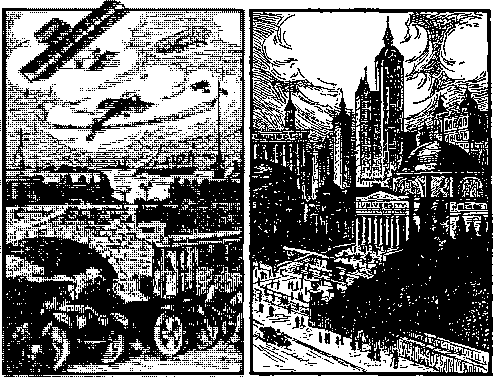Princes in All the Earth
IN THE preceding chapter we noticed the descriptions of the wedding of the royal Bridegroom and bride to take place in heaven, and the wedding supper to follow. The Forty-fifth Psalm has the unique distinction of reporting the event over three thousand years before it actually takes place; and in the Revelation the Apostle, about one thousand years later, adds some interesting details. In the sixteenth verse of the Psalm there is one notable class mentioned that we have not noticed: "Instead of thy fathers shall be thy children, whom thou mayest ma,he princes in all the earth." Who are these fathers whom Christ is to make princes in all the earth?
St. Paul tells us who they are. Let us quote the text: "Who are Israelites; to whom pertaineth the adoption, and the glory, and the covenants, and the giving of the law, and the service of God, and the promises; whose are the fathers, and of whom, as concerning the flesh, Christ came."—Romans 9:4, 5.
The Apostle says that “the fathers” were Israelites, men of the same nationality as our Lord Jesus. He further tells us that the Jews as a whole "are beloved for the fathers’ sakes." (Romans 11:28) These men were of such a 215
character that their descendants are beloved because of it. They were men of faith in God.
St. Paul further says that the reason why 'Jesus Christ came to earth as a Jew was “to confirm the promises made unto the fathers.” (Romans 15:8) Many other Scripture texts show that “the fathers” was a term generally applied to faithful men of God who lived before Christ’s time. St. Paul speaks of “Abraham, our father.” (Romans 4:1) Of Abraham it was said that he is “the father of all them that believe.” (Romans 4:11) He was a father in the sense that he was one of the first to exercise faith in God. David was another of “the fathers”; he also was a man of great faith in God. The Lord Jesus showed that the time would come when David will look up to him as a child looks up to a father. David was the father, the ancestor, the life-giver of Mary the mother of Jesus. “The book of the generation of Jesus Christ, the son of David.” (Matthew 1:1) But in the age just at hand Christ will be the father, the life-giver, and David the child.—Isaiah 9: 6.
Abraham will be a child, also. That is to say, although Abraham was born many centuries before Christ, yet he must receive his future life at the hands of Christ; and Abraham will thus think of Christ as his Life-giver, his father. This seems puzzEng to some. The Jews could not understand how Christ could be the son of David and yet be his Lord. Christ asked the Pharisees to explain it. They could not answer. (Matthew 22:41-46) Christ is both the root (source of life) and the offspring of David.
In this Forty-fifth Psalm Jehovah is telling Christ that Abraham and David and others entitled to be called “the fathers” shall no longer be considered by him as his ancestors; but that he is to think of them, and they shall think of themselves, as his children; and that they shall be given places of honor as princes in all the earth. They will hold those places as princes during the time of Christ’s reign on earth.
In the eleventh chapter of Hebrews the Apostle gives a lengthy list of others besides Abraham and David who were faithful to God during their lives, but who lived before the heavenly calling was opened. Christ was the forerunner, the first one to run for the heavenly honors. Indeed, the heavenly invitation never was heard of before Christ’s time. It is nowhere mentioned in the Old Testament but "began to be spoken by the Lord.”—Hebrews 2: 3.
In the eleventh chapter the Apostle says of those faithful men of old, Abel, Enoch, Noah, Abraham, Isaac, Jacob, etc., etc., that "these all died in faith, not having received [the fulfillment of] the promises, but having seen them afar off, and were persuaded of them, and embraced them, and confessed that [until the promised kingdom should come] they were strangers and pilgrims on the earth.”—Hebrews 11:13.
In Matthew 8:11 our Lord says '"Many shall come from the east and west, and shall sit down with Abraham, and Isaac, and Jacob, in the kingdom of heaven. But the children of the kingdom [unbelieving Jews] shall be cast into outer darkness [cast off from any particular favor]: there shall be weeping and gnashing of teeth." Abraham, Isaac, Jacob, and others, will be men, seen by men, therefore not spirit beings. They will be in the visible part of the kingdom, as princes; while the haughty scribes and Pharisees, who expected the honors of the kingdom, will be thrust out, not recognized by Christ. Their humiliation is expressed by weeping and gnashing of teeth.
Thus those faithful ones mentioned in the eleventh chapter of Hebrews, and others not mentioned by name (verse 32), will when resurrected be honored with positions of power and authority in the new kingdom. They will be representatives of the Lord, and will be held in high esteem and must be acknowledged by the people of earth as representing Christ, the King.
With this understanding of God’s arrangement how simple are the words of Jesus spoken of John the Baptist, as recorded in Matthew 11: 11! This passage has been a great stumbling block to many who have read it with their creed glasses on. If all the good people go to heaven, and if John was to be lower than the least in heaven, where would he go? They could make nothing out of it. "Verily I say unto you, Among them that are born of women there hath not risen a greater than John the Baptist: notwithstanding, "he that is least in the kingdom of heaven is greater than he.” In other words, the one holding the lowest position in the spiritual plane of life will he greater than the greatest one on the human plane, yet both be part of the kingdom.
Christ will honor and reward all who served him faithfully and loyally under bitter persecution and trial. This class is sometimes referred to as the ancient worthies—ancient in the sense that they lived in a period prior to the Gospel age; worthy in that, as the Apostle says, “having obtained a good report through faith” (Hebrews 11:39), Christ thus counts them worthy of a “better resurrection.” (Verse 35) The prophet Malachi (3:18) says also: “Then shall ye return, and discern between the righteous and the wicked; between him that serveth God and him that serveth him not."
Those noble men of old will not have served God in vain. They often wondered why they were persecuted for righteousness’ sake; and they prayed for help and strength to endure. Their prayers were answered, but they were not informed as to the reason; for the time had not come for God to make known his secret. (Romans 16:25) What a joyful surprize awaits them when they awake and see and receive the things God has in reservation for them 1
Jerusalem is to be the capital of the new kingdom. Our Lord says it is “the city of the great King.” (Matthew 5: 35) “For out of Zion [the Lord and his church] shall go forth the law, and the word of Jehovah from Jerusalem.1’ (Isaiah 2:3) Again: "The inhabitants of one city shall go to another, saying, Let us go speedily to pray before the Lord, and to seek the Lord of hosts: I will go also. Yea, many people and strong nations shall come to seek the Lord of hosts in Jerusalem, and to pray before the Lord." (Zechariah 8: 21, 22) And yet again: "It shall be, that whoso will not come up of all the families of the earth unto Jerusalem to worship the King, the Lord of hosts, even upon them shall be no rain." (Zechariah 14:17) Take your concordance and look up the word Jerusalem, and see how many places in the Bible you can find it mentioned as the future capital of the world. In that connection you will find Jeremiah 31: 6 interesting, though it does not mention Jerusalem by name.
When you take up a more advanced study of the Bible, you will find that the year 1925 A. D. is particularly marked in prophecy. We will just sketch it here:
When the Children of Israel were about to enter the land of Canaan, God gave them instructions through Moses that every fiftieth year should be a jubilee. You will read all about these instructions in the twenty-fifth chapter of Leviticus. They were to begin to count when they entered the land, which was the year 1575 before Christ. God knew that they would not properly keep this law of the jubilees, and foretold them so in Leviticus 26: 34, 35. It would touch their pocketbooks too hard; and their hearts were not sufficiently loyal to God to obey his law in the right spirit. Verse 35 reads: "As long as it [the land] Heth desolate, it shall rest; because it did not rest in your sabbaths when-ye dwelt upon it.” The jubilees were to be sabbaths, or rest years, specially for the land. It would be a test to their obedience, when they thought of how much they might have raised that year, if they had only sowed their seed as usual. It would look like a whole year gone to waste. It was also to be a year of “liberty throughout all the land unto all the inhabitants thereof, it shall be a jubilee unto you; and ye shall return every man unto his possession, and ye shall return every man unto his family."— Leviticus 25:10.
These jubilee years were only a type of something far better to follow later. (1 Cor. 10:11) If so, how long before the antitype would come?
Jeremiah the prophet (25:11,12; 29:10) states that the Jews should go to Babylon and remain there as captives for seventy years, and that their land should lie desolate all that time; in other words the land should have a rest for seventy years. If they would not give the land its rest regularly every jubilee year while they dwelt upon it, God said that he would send them into captivity to their enemies while he gave the land its sabbaths all at one time. The land should have its rest, as he had commanded.
We see, then, that God’s plan was for the Jews to keep the type for seventy periods of fifty years each. This assures us that God had laid out his time schedule very accurately, and that he purposed to keep strictly to it. As the Apostle says, these things were specially for our admonition, upon whom the ends of the world are come. Let us see also how God had hidden some of his secrets from them but has now revealed them unto us.
We have already seen that Adam had great possessions in the garden of Eden, and full liberty to enjoy them all. By his disobedience he lost them all, and became a slave to death. In the last three chapters of Revelation, and in other places, we found that all these possessions are to be restored to the human race, and liberty again given to all. The law concerning the jubilee given to the Jews was therefore a pretty picture of the great jubilee which God has arranged for all the world.
Now let us see how accurately this type also outlines the time features of God’s plan. When it came time for the Jews to return from Babylon to their own land God caused Cyrus, king of Persia, to issue a proclamation granting them permission, and also returning to them the vessels of their temple which Nebuchadnezzar had taken from Jerusalem to Babylon. They were to go back on time; and so we read in 2 Chronicles 36:21 that all this was done “to fulfil the word of the Lord by the mouth of Jeremiah, until the land had enjoyed her sabbaths: for as as long as she lay desolate she kept sabbath, to fulfil three score and ten [70] years." In other words, till the land had had its seventy years of rest.
Seventy times 50 are 3,500. The whole period would therefore have been 3,500 years from the time the Jews entered Canaan until all the types would have been fulfilled.
As they entered Canaan 1,575 years before Christ there would be 1,925 years of types after Christ, or 1925 A.D. The year 1925, therefore, would have been the last jubilee the Jews would have kept, if they had remained faithful to their covenant. Then what would have happened?
We should expect that the antitype would begin to be fulfilled; namely, the jubilee for the whole world. If the Jews had remained faithful God would not have granted any special favors to the Gentiles until all the types were fulfilled. (Amos 3:2) But God would not change his time schedule simply because the Jews would not keep their part of their contract. No I He simply filled up the time with other work. As we have seen, he visited the Gentiles to select from them a people for his name. (Acts 15:14-17) He had no intention of trying to convert all the Gentiles during this time. After he had found sufficient number from the Gentiles to fill up the “royal priesthood . . . holy nation . . . peculiar people" (1 Peter 2: 9), he would then return to the Jewish nation as he had promised “the fathers.” (Romans 11: 25-28) Thus the Jews missed the privilege of the heavenly invitation. God proved that he could easily find enough from the Gentiles to fill all the places of highest honor in his kingdom. This will he very humiliating to the Jews when they see what they have missed.
The Jewish legal year begins in the fall, about our October first. The year 1926 would therefore begin about October first, 1925. It would be very reasonable to expect to see some beginning of God’s favor returning to the Jewish people, as a part of the world, shortly after that date. Many of the Jews are already looking longingly towards their old home-land, Palestine. God’s limit of time to the Gentiles as nations expired in 1914, as we have already seen. Thus as the Jewish nation, as a nation, lost favor with God when they crucified Jesus, and the Gentile nations have no further recognition by God as nations, Christ will soon begin to deal with the world as individuals, commencing with the Jew first, through the ancient worthies. We should, therefore, expect shortly after 1925 to see the awakening of Abel, Enoch, Noah, Abraham, Isaac, Jacob, Melchisedec, Job, Moses, Samuel, David, Isaiah, Jeremiah, Ezekiel, Daniel, John the Baptist, and others mentioned in the eleventh chapter of Hebrews.
These will form a nucleus of the new kingdom on earth. One of the first things necessary 'will be to put Jerusalem in condition to be the capital of the world. This will necessitate a great deal of work, but there will be many willing workers. Current news informs us that attention is already being centered upon Palestine, and thousands of Jews are trying to return there. Already considerable work has been done in the way of building better roads and cultivating the fields. However, we should not expect to see much systematic work under way until these "princes” have been awakened and placed in charge.
The capital of every country should be in direct and quick communication with all parts of its territory. If Jerusalem is to be the capital of the world, it should be able to get into quick touch with every locality. Christ’s kingdom is to undo in one thousand years all the evil brought about in the previous six thousand years. Old-fashioned methods will not suffice. Already we see great changes coming in. The wireless and radio can carry messages half way around the world now; and by the time the princes are brought forth these inventions will be perfected to reach all the way around.
Everybody in the world will be “in one room,” so to speak. The room will be a little larger than we may have been accustomed to hold meeting in; but what of that? Now when we read Isaiah 2:3 and Zechariah 14:16, 17 we see how easy it will be for all the people to go “up to Jerusalem.” The princes can easily radio their instructions to any part of the world. Think of Prince Abraham having some general instructions to give, calling “Attention”; and all the people everywhere listening, and hearing every word he speaks, as easily as though he were addressing them from the platform of a public hall!
Of course if any one desires to visit Jerusalem and personally interview the princes, or if the princes should desire to make a personal inspection of some public work, aeroplanes will soon be so perfected that it will be a matter of but a few hours ride to any part of the earth to or from Jerusalem. This will indeed be a new world, made glorious in every way.—Zechariah 14: 20, 21; Revelation 21; Psalms 72 and 145.
These ancient worthies will also have the power to use the "rod of iron," if necessary, to deal with the wilful and disobedient. All must learn that unrighteousness will not be permitted. Justice is the foundation law of the new kingdom.—Psalm 37: 9,10, 2, 38.
No doubt many boys and girls who read this book will live to see Abraham, Isaac, Jacob, Joseph, Daniel, and those other faithful men of old, come forth in the glory of their “better resurrection,” perfect in mind and body. It will not take long for Christ to appoint them to their posts of honor and authority as his earthly representatives. The world and all the present conveniences will seem strange to them at first, but they will soon become accustomed to the new methods. They may have some amusing experiences at first; for they never saw telephones, radios, automobiles, electric lights, aeroplanes,
steam engines, and many other things so familiar to us.
What a privilege to he living just at this time and to see the ending of the old and the coming in of the new! Of all the times in earth’s history, today is the most wonderful.
Who would not desire to become acquainted with those whom God honors! See how it might come into play in one’s own experience. Suppose in your own case for instance. As the blessings of the kingdom expand, and every one becoming the owner of a home all his own, you would be one of them. As you were improving it and fixing it up with every convenience possible, your heart would begin to go out to others. You know that is the way love always works. "It is more blessed to give than to receive." So let us suppose that you are among those mentioned in Isaiah 65:21-25.
You will begin to wish that father and mother, whom you with sad heart laid away in the tomb before the kingdom came in, could return and enjoy all these good things with you. Who knows but that it will be your privilege to make requests of those princes, and that they will recommend your petition to Christ and that it will be granted? This must come, sooner or later; for the promise is that "all that are in the graves shall hear his voice and shall come forth." (John 5:28, 29) Jesus also said: "Ash, and it shall be given you; seek, and ye shall find; knock, and it shall be opened unto you. For every one that asketh receiveth; and he that seeketh findeth; and to him that knocketh it shall be opened."—Matthew 7:7, 8.
We know that God heareth not sinners. (John 9:31) All will want to be among those who desire to serve the Lord in spirit and in truth, that these promises may apply to them.
Let us suppose that you are living after the kingdom is established and the blessings have begun to flow out to the people in abundant measure. Of course it will take some time to get things in smoothly running order after the great stress between now and 1926. It may be ten years or more before you get your home all fixed up, and the gardens bringing forth the luscious fruits and appetizing vegetables in abundance. Even if it takes a while longer you will be that much better prepared.
You will have secured the services of the best decorators you can find. Some of them used to be undertakers; but since there are no more people dying, they have had to seek some new occupation. Their experience as undertakers prepared them to become decorators with very little difficulty.
You have made all preparations for father and mother. The home is all ready; a special room is prepared for them, fitted with everything you can think of that might give pleasure and delight. You then call up the princes at Jerusalem, state your case, and make request that your father and your mother might be awakened. In joyful expectancy you wait. Some morning you hear talking in the room you have prepared. There was no one there last night. You know that there are no thieves or intruders; for all such experiences have been eliminated. You do not need to be fearful; so you listen at the door. You hear father’s familiar voice saying, “Mother, where are we? Are we dreaming? Why, I thought I attended your funeral last summer; then I was taken sick, and they had the doctor, and that is the last I can remember.”
Mother says: “I don’t understand it either, Dear. The last I can remember is that I was so sick, and you and the doctors were standing at the bedside, and you were holding my hand. What has happened? We are not sick now, and this room is different from any room I ever saw. It is so beautiful and everything is so peaceful. Just hear those birds sing, and did you ever 1 Why, where did you get that suit of clothes ? You are as handsome as you were on our wedding day.”
Father exclaims: “Well, suppose you give me a chance to ask you some questions 1 Where did you get that dress? You must be getting stylish in your old age. And you needn’t talk to me about being good-looking. Look into the glass yourself. Well, I wonder what has happened, anyway. Are we in heaven or crazy or what?”
You can stand it no longer. With heart running over with joy and all excitement, you burst open the door and rush in exclaiming, “O Father! O Mother! you are neither in heaven nor crazy! You are just here, your old dear selves. Yes! you are really here. I am so glad, so happy, that I don’t know what to do. I just want to look at you, and love you, and touch you, to be sure you are really alive again. My! but you are looking well. I never saw you looking so handsome!”
You throw your arms around their necks and embrace them. Then you hold them off and look at them, almost fearing you are dreaming. Such excitement! You call everybody else in the house, and everybody is talking and asking questions and trying to explain it all at the same time. Such a hubbub! Even the neighbors wonder what is the matter at your house. Finally you get settled enough to think of breakfast. Father and mother look at almost everything in innocent surprize, wondering what this or that is for. Things are so different from what they ever saw before. They almost believe that they are in heaven; only they fail to see any angels with wings flying around.
It gradually dawns upon them that they have been dead, and that they have been awakened. How long were they dead! “Forty years!” “Impossible !” “No! it is a fact.” “Why, it does not seem an hour ago that I was so sick, and then that’s the last I can remember.”
They will begin to inquire how it all happened, and about all the relatives and old neighbors. After breakfast you go to the telephone, call up some of the friends, and tell them the good news. Soon the whole neighborhood is rushing in. It reminds you of the experience of Lazarus and his sisters when Christ called him forth from the tomb. (John 12:9) So the excitement spreads. After a while you will propose to take them for an automobile ride to see the great changes that have taken place since they went to sleep. They wonder what an automobile is; and when they see it, they are almost afraid of “the thing.” What makes it go ? What has become of all the horses? “My! Dorit go so fast!” So many questions, and your joy at seeing their surprize and pleasure, and your endeavor to explain it all! It is too much for one occasion. They will have to take time to get acquainted with the “new world.”
After things have become somewhat settled, and they have been here for a year or more, they will begin to think about their fathers and mothers, and want to arrange for them to come back. Everything is so strange and different from what it used to be. Instead of the crape on the door, telling that some loved one had gone, there are yellow, white, and blue—the color of gold, which stands for the divine kingdom; the white for truth and justice; and the blue for faithfulness. These are the colors of the new kingdom, and the sign on the door indicates that some loved one has come back. There are no more obituary notices in the papers. Instead, there are lists of those who have been awakened.
So your father and your mother will set about getting ready for their loved ones. When ready, the request is made; and in due time they also are awakened. The experience is somewhat similar, except that to the new arrivals the changes will seem even greater. When you speak over the telephone it will look to them as though you were speaking to an iron post with a cup fastened on one end and a string on the other so that it could not get away. “Talking to somebody a hundred miles away?” “Not much!” “You can’t fool me that way.” “You must think that we have lost our senses.” Some of the older ones will try to blow out the electric light at night, as they used to do with the old tallow candles. When you try to explain some of the wonderful conveniences of the new kingdom they will look at you somewhat sympathetically, and think that you are telling some “whoppers,” and that you must think they have lost their minds to believe such stuff. When you suggest a ride in an aeroplane, “No, indeed! If I have gotten back to earth once, I intend to stay here. I shall not take any chances of being carried away again.”
Won’t it be fun to see the surprizes when the dead begin to come back ? It will continue until all in the graves have come forth. Then will go forth the challenge, “O grave, where is thy victory?”—1 Corinthians 15: 55.
Some will say, “I see you do all your own work; where are your servants ?” And you will answer, “Oh! We settled the servant question along with all the other unpleasant things of the past. You see everybody likes to ‘boss’ and nobody wanted to be ‘bossed.’ So we let everybody be boss and have all the servants they want. Our servants never strike for higher wages, double pay for overtime, or more days off, or because of long hours. They are always at hand and do the work so much better than any servants could do it under the old way.”
“Where do you keep them? I haven’t seen any since I’ve come back.” “Oh! Don’t you understand? Why, look at our electric washers, wringers, sweepers, toasters, lights, heaters, cooler, fans, autos, telephones, radios, in fact our new servants do almost everything but enjoy life.” “Well, who digs the coal to keep the big powerhouses going?” “Oh! We don’t use them any more. They went with the big trusts which cornered all they could and charged us all kinds of extortionate prices. We have a little machine on the top of the house which extracts all the power we can use directly from the air and sunshine and stores it for us to tap at any time. It works automatically and keeps a full store of energy on hand all the time. Everybody has them. You must remember we are living under the Golden Rule now, and not the old terrible rule of selfishness. All the Johns, Marys, Bridgets and Henrys, who were servants before, now have homes of their own and have just as many servants as we have. You see God provided these powers of nature to be our servants, and not that we should be servants to each other. Every one is a freeman.”
Is the picture overdrawn? No! It is not equal to what the reality will be; for “the ransomed of the Lord shall return, and come to Zion, with songs and everlasting joy upon their heads; they shall obtain joy and gladness, and sorrow and sighing shall flee away.”—Isaiah 35:10.
No doubt the individual experiences in returning will vary as much as did the individual experiences of birth and death during the first life. The three illustrations given by Jesus varied much. Maybe some dear mother who has lost a little one will find it again some morning in a crib beside her. The prophet Jeremiah says (31:16, 17) -“Thus saith the Lord, Refrain thy voice from weeping, and thine eyes from tears: for thy work shall be rewarded, saith the Lord; and they shall come again from the land of the enemy. And there is hope in thine end, saith the Lord, that thy children shall come again to their own border." But each one will come in his own order.
Some will come forth who will not be so welcomed. The Prophet mentions some of that class: “And many of them that sleep in the dust of the earth shall awake, some to everlasting life, and some to shame and everlasting [age lasting'] contempt." (Daniel 12:2) See also Ezekiel 16:60-63.
Maybe some fathers and mothers will read this book; and as they read, their longing hearts will cry out for the little ones laid away in the grave. Would it be possible to fold them in their arms again? Let such reread the above promises and many others to be found in the Word of God, and let faith in those promises bring joy and gladness. Then let the prayer be raised: “Thy kingdom come: thy will be done on earth as it is done in heaven"
Many have not yet learned of the love of God. It was God that so loved the world that he arranged such a wonderful plan by which to manifest his love to his creatures, when the blinded eyes shall be opened and the deaf ears unstopped, so that all may fully understand his plan. No wonder the Apostle grows eloquent in describing it, saying:
“And they sung a new song, saying, Thou art worthy to take the book, and to open the seals thereof: for thou wast slain, and hast redeemed us to God by thy blood, out of every kindred, and tongue, and people, and nation.
“And hast made us unto our God kings and priests: and we shall reign on the earth.
“And I beheld, and I heard the voice of many angels round about the throne and the beasts [living ones] and the elders: and the number of them was ten thousand times ten thousand, and thousands of thousands;
“Saying with a loud voice, Worthy is the Lamb that was slain to receive power, and riches, and wisdom, and strength, and honor, and glory, and blessing.
"And every creature which is in heaven, and on the earth, and under the earth, and such as are in the sea, and all that are in them, heard I saying, Blessing, and honor, and glory, and power, be unto him that sitteth upon the throne [Jehovah God, who planned it all], and unto the Lamb [Christ Jesus, who carried out the Father’s plan] for ever and ever."—Rev. 5:9-14.
"Oh, that will be an anthem, Such as earth has never known; When the hallelujah chorus rings Before the great white throne.”
What a grand and glorious work the new King has for these princes 1 They will rejoice to be the representatives of such a kingdom. All will want to join in singing the 111th Psalm and others like it. As you begin to see what the kingdom of Christ means to all the world, does not your heart already begin to sing? The song of the holy angels shall yet reach the whole earth:
"Glory to God in the highest,
And on earth peace, good will toward men.”
In the following ages, God may have some further reward for the ancient worthies, who served him so faithfully. If so, we shall all be glad and rejoice with them.
Chapter XII The Kingdom of God God’s Perfect Work
'T'HY kingdom come. Thy will be done in earth x as it is in heaven.” “And 1 saw a new heaven and a new earth: for the first [previous] heaven and the first earth were passed away; and there was no more sea [unstable, restless condition]. And I John saw the holy city, New Jerusalem, coming down from God out of heaven, prepared as a bride adorned for her husband [beautiful as she could make herself; so the city is to be beautiful, perfect, God’s handiwork]. And I heard a great voice out of heaven [God’s throne], saying, Behold, the tabernacle of God [again] is with men, and he shall dwell with them, and they shall be his people, and God himself shall be with them, and be their God [they will no more need some one to stand between them and God, as Christ did for 1000 years of his reign]. And God shall wipe away all tears from their eyes; and there shall be no more death, neither sorrow, nor crying, neither shall there be any more pain: for the former things are passed away[the things of evil]. And he that sat upon the throne said, Behold, I make all things new. And he said unto me, Write: for these words are true and faithful.”—Matthew 6:10; Revelation 21:1-5.
These texts refer to the time when sin shall be no more. There was a time when there was no sin. Sickness, sorrow, pain and death were unknown terms. Lying, deceit, slander, stealing and injustice and murder had never been heard of. There was no use for such terms in the language of heaven.
God endowed angels and man with the gift of free moral agency, the privilege to choose whether to obey him or not. This was a remarkable favor, yet something that might prove very dangerous; for they might choose to rebel against him. The moment that God would force their choice, that moment he would take away the responsibility of moral decision, and also their culpability. They could not be held responsible for doing what they were forced to do. “The true worshipers shall worship the Father in spirit and in truth: for the Father seeketh such to worship him.” (John 4:23) To secure true worshipers the heart and soul must be enlisted, in order that the obedience and worship shall be from choice. To choose intelligently, there must be a foundation of knowledge, either by word of instruction, personal experience, or observation of the experience of others.
The little child in the home has no adequate comprehension of the motives, character, power, or wisdom of its parent. The child accepts the daily food, comforts, playthings, and pleasures as a matter of course, in ignorance of the forethought necessary on the part of its parent to provide them all. It has no realization of danger and the precautions necessary for safety. It has a childish love and affection; but it may be easily persuaded to set its affection upon another, especially if the parent is much away from home. The child may be perfect for its age; but its mind is not matured, developed, steady. It needs experience.
The angels in heaven were happy in the enjoyment of their many blessings, with comparatively little comprehension of the real character of God. They had never appreciated his attributes of justice, love, power, and wisdom, all so perfectly balanced. How could they know! There had been no occasion to bring these thoughts particularly to their attention. When, therefore, Lucifer chose to take his stand in opposition to God, our Creator saw wise to make this an opportunity to permit men and angels to witness the exercise of each attribute, first separately, then all in full harmony. They would then be in possession of a knowledge which would enable them to appreciate him more fully, and draw to himself their worship in love and in truth, and not merely because he was their Creator and Benefactor.
The first attribute brought into action was justice. Justice has no mercy. The law is, An eye for an eye, a tooth for a tooth, a life for a life. Justice cannot accept ninety-nine cents in payment for a dollar debt, nor will it accept one hundred and one cents. It demands one hundred cents, no more, no less. The law pronounced the sentence of death upon Adam. Justice demanded and secured the penalty, death. For four thousand years, with the exception of the manifestation of God’s power in the flood of Noah’s day, from the expulsion from Eden to the death of Christ no other attribute was particularly manifested. It was a long time. Justice is the foundation of God’s throne.
“For the knowledge of his Justice Will full assurance bring;
And they’ll join the mighty chorus To the glory of their King.”
God has a due time for every feature of his work. Love had in Christ provided a ransom for Adam, as we have seen. Love had been restrained, and not permitted to act. Justice could not release its hold upon the prisoner. Love had secured an exact substitute, a perfect man; and Justice could accept the exchange, when Wisdom decided that the proper time had arrived. Justice must uphold the majesty of the law; but Love contrived a way to meet every requirement of Justice, and at the same time secure the release of the prisoner. There has never been a greater manifestation of love than that which God exhibited when he gave his Son to die, that all who died in Adam might regain life through Christ. The love of God is still but little known, and less understood; but it will become the song of all the world in due time.
“For the Love of God is broader Than the measure of man’s mind; And the heart of the Eternal Is most wonderfully kind.”
Power is the next attribute of God which is to be manifested on a colossal scale in the age that is at hand. The power of God was exercised in the creation of the universe, but why he has not exercised it to restrain evil has been the question of the ages. We now know why God delegated to Christ the exercise of all power to meet every-contingency, as he said: “All power is given unto me in heaven and in earth." (Matthew 28:18) This power is to be used when Christ takes his kingdom, and one of the first demonstrations is to shake the nations, bind and imprison Satan, and lay the foundations for the new kingdom. Further demonstrations will follow rapidly.
If, when Adam died, his body had been placed in some cold-storage plant, it would be easy to see how Christ could bring the body forth at any time, revivify it and bring Adam to life again. But his body returned to the dust; his breath went forth; his thoughts perished. What is there left to bring forth? Has Christ the power to resurrect Adam as he was? Add to the question also, Has he the power to resurrect the billions who have lived and died since? The bringing of all of them back, so that each will remember himself and all others, will be a demonstration of power never yet witnessed. Furthermore, how can he remember them all? Suppose some were forgotten?
Let us make another parable. There have been thousands of inventions during the last few years, some of which are very useful. Take for instance a card-filing system. In many business houses the name of every customer, though there be thousands of them, is placed on a neat little card, together with address, business rating, amount of goods purchased, and other information. The cards are filed alphabetically. If the manager wants to know about any one of his customers, he does not have to remember the person himself; he can locate the card he wants in an instant of time, and there is all the information he wants. Some of the large insurance companies have entire rooms set apart for these index files. Again, did you ever have your picture taken? And did you ever see a moving picture? All right! Now for our parable!
Suppose after baby was born, father had a moving picture camera so arranged that every movement was pictured, just as the photographers take the pictures for the movies. Whenever baby was awake the camera worked, until he was twenty-one years old. Oh, yes! we forgot to ask if you ever heard of a talking machine ? Oh, you have one in your house? That is fine. You can hear the songs or the conversation just as they were given by the actors themselves. They have recently invented a machine which takes the pictures, and records the talking at the same time. Now suppose father had one of that kind, which was recording everything that baby said, and at the same time it was taking the picture of every move he made. Suppose Henry, or whatever his name was, did not know all this was going on. On this twenty-first birthday, his father gives him a great surprize. He is invited to see a talking moving picture. Then on the screen are reproduced Henry’s own actions and talk from babyhood till he sat down to “see the pictures.” If his father had a good photograph of him that day, he could file the films and the photograph away, and reproduce them at any time. Father would not have to remember it all. It was all there on record.
God is a greater inventor than man. He gave each of us a little machine that automatically keeps records of every word we say, every scene we look at, the faces of our friends, and the lessons we learn, either good or bad. It works so quietly that we never hear it; yet we carry it around with us everywhere we go. What is it? Why, memory, of course. Some of our machines are rather poor; and .like poor films in the camera, they do not turn out as well for us as we wish. But they are there, and can be produced under proper development. Perhaps you have heard some one tell how, when almost drowned, just before losing consciousness it seemed as though a vision of every act of life passed before the mind, including all the little things that were supposed to be forgotten.
God has some way of keeping these films of memory. As the moving pictures will not work without a proper machine, neither will these memory films work without a body. Now suppose the time came to awaken Adam. Christ could easily tell some angel to go to the file, and get Adam’s photo, and also the memory film. With the picture as a design, the angel could easily make a body just like the one Adam had, and fit the memory film in place. Then if the lungs were filled with the “breath of life” Adam would wake up. Would he know himself? Of course! There was the memory of his life, his record all ready for him, just as if he had only been asleep over night. It had not been changed a bit during his death sleep, though the sleep were five thousand years long. “There is no work, nor device, nor knowledge, nor wisdom, in the grave, whither thou goest.”—Eccl. 9:10.
The same could be done with all the billions who have died. No one will be forgotten. The file record is complete. In all probability God has some far better method than this, but even we can begin to see how it could be done. “All in the graves shall hear the voice of the Son of man and come forth” is no idle promise. Adam will remember himself, and all his friends; and he will start life over again, with the lessons of this life already learned. They are all there ready for him. What a start for the next life! This will be true of all who have died. Read Ezekiel 16: 55, 63.
What will men and angels think of the power of Christ when they see these things come to pass?
“Ah, that will be a Power, Which will cause them all to sing, As they see the hosts returning, At the orders of their King.”
Justice, Love, and Power will have been fully manifested by the time Christ turns the kingdom over to the Father at the end of the one thousand years, that God may be all in all. (1 Corinthians 15:24) The redeemed hosts will stand before Jehovah, restored to perfect human life, ready for the last great testing to determine how many will prove worthy to receive the gift of eternal life in God’s kingdom of the ages to come. Adam, in the garden of Eden, was perfect and in God’s image; but God required a test of his1loyalty. Adam and his children will then stand at the door of Paradise restored. All that they have received from the time they were awakened up to that time has been a favor to them at the hands of God through Christ. Christ bought Adam and all his family. He will have regenerated, restored, and perfected all who applied to him. They will be as though they were so many Adams, just created, waiting for their examination, as did the first Adam.
God desires a manifestation of loyalty on the part of each one, as he desired from the original Adam. So we read: "And when the thousand years are expired, Satan shall be loosed out of prison, and shall go out to deceive the nations which are in the four quarters of the earth, Gog and Magog, to gather them together to battle: the number of whom is as the sand of the sea. And they went up on the breadth of the earth, and compassed the camp of the saints about, and the beloved city: and fire came down from God out of heaven, and devoured them. And the devil that deceived them was cast into the lake of fire and brimstone, where the beast and the false prophet are, and shall be tormented day and night for ever and ever. [Let us notice carefully that all who proved unfaithful were devoured, including Satan their leader. The beast and the false prophet are not individuals but systems, so the word devil here refers to the whole system of evil. Though the word devil is often applied to Satan personally, we notice that here it is associated with systems and not with individuals. Torment means pain of mind or body. Even the memory of the beast, the false prophet and the great system of evil will bring pain to those who think of them]. And I saw a great white throne, and he that sat on it, from whose face the earth and the heaven [the former conditions of sin and death] fled away; and there was found no place for them [God has no place for sin in all his universe],
“And I saw the dead, small and great, stand before God; and the books were opened: and another book was opened, which is the book of life: and the dead [who had been awakened and instructed by Christ] were judged out of those things written in the books, according to their works. And the sea gave up the dead which were in it; and death and hell [the grave] delivered up the dead which were in them: and they were judged every man according to their works.
“And death and hell [the grave] were cast into the lake of fire. This is the second death. And whosoever was not found written in the book of life was cast into the lake of fire [annihilation] ”—Revelation 20:7-15.
This is highly symbolic language, but it is sufficiently clear for us to understand its general teaching. In due time the details will all become clear. These texts, together with others, some of which we have already noticed, show conclusively that God does not purpose that there shall be any sin or sinners left after he has given his final examination.—Psalms 37:9,10; 145:20.
When Adam was created, he was at one with God, and needed no mediator. His disobedience placed a barrier between him and all his children and Jehovah. Thereafter God dealt with man only through some representative, angels or Christ. It was at that time that Jehovah began his rest of the seventh day. From Adam’s fall to the second coming of Christ was six thousand years. Christ will reign one thousand years and then turn the kingdom back to God, who will at that time again be in direct relationship with man. This is the time of God’s rest from further creative work for man and from direct relationship with him; it was God’s “seventh day.” Here is Scriptural evidence that the seventh day of God’s great week is 7,000 years, and it is therefore reasonable to think of the other six as 7,000 years each, noted in chapter two.
Seven thousand years experience with sin! To man it seems lilce a long, long time. To God it is but as one day. In comparison to eternity it is but a moment. Eternity will be seven thousand times seven thousand, and that multiplied by thousands of thousands. Even all that will be but a beginning; for eternity has no end.
Seven thousand years of school life for the race of man, to prepare him to enjoy the ages and ages of the future! We think four or five years in school well spent to prepare for a life of fifty or eighty years; for the after years are enjoyed so much the more as a result of the school training. How much more will this be true of those who will have gone through the school of experience which God has permitted! The after years will be filled with a greater appreciation of the blessings received at the hands of a loving Creator and Father. The kingdom of Christ, which will last only 1,000 years, might be called a parenthetical kingdom, while the kingdom of God will continue for eternity.
Let us briefly review a few of the pictures we found in the The Book of Books, God’s letter of love to mankind:
Adam, perfect, in the image and likeness of God, dwelling in a specially prepared paradise, king of the earth, with the prospect of everlasting life for himself and his children. AH creatures in heaven and on earth, perfect, happy, contented, rejoicing in the smile of God’s favor.
Sin, in the form of pride, jealousy and selfishness enters. Adam loses his home, his dominion, and also his life. Lucifer rebels against God, endeavors to steal Adam’s dominion, debases himself and becomes a devil, taking many of his fellow angels with him, who also become devils under his debasing leadership.
Apparently God withdraws from activity; and for six thousand years men and devils are permitted to exhibit the actual workings of sin in all its hideousness and terror.
At intervals God sends his servants the prophets with messages of his overruling care, and promises regarding the future, and later sends his Son to redeem mankind. Demons and men persecute his prophets and contrive to crucify Christ. God rewards the love and sacrifice of Christ and his bride by highly exalting them to the divine plane of life and to the highest position of authority in the universe, God alone excepted. He rewards his faithful prophets by making them princes in all the earth.
At the beginning of the seventh thousand years Christ takes the control of the earth from Satan and wicked men and sets up his kingdom of righteousness and love. He not only gives the living the privilege of enjoying these special blessings, but also awakens all of Adam’s children that they, too, may share in them. He provides for all an exhibition of the actual working of a kingdom of righteousness, that every one may have an actual experience with righteousness and justice. All are invited to return to the favor of God by the highway of holiness, and to the perfection lost by Adam. Lucifer and all wilful sinners are annihilated.
Under the beneficent rule of Christ, instead of a small paradise in the east of Eden, the whole world becomes a paradise.
“And the city had no need of the sun [the New Testament], neither of the moon [the Old Testament], to shine in it: for the glory of God did lighten it, and the Lamb is the light thereof [Men’s hearts actuated by the motive power of love, developed by Christ during his Millennial reign]. And the nations of them which are saved shall walk in the light of it [continue to walk, in the light of love]: and the kings of the earth [perfect men in the image and likeness of God] do bring their glory and honor into it. And the gates of it shall not be shut at all by day: for there shall be no night there [it shall last forever]. And they shall bring the glory and honor of the nations into it. And there shall in no wise enter into it anything that defileth, neither whatsoever worketh abomination, or maketh a lie: but [only] they which are written in the Lamb’s book of life.”—Revelation 21:23-27.
Instead of one king, Adam, there will be millions of kings, honoring and glorifying God and beautifying the earth, which has been given to them. These will not be kings of each other, but kings of the earth. All will fully understand why God loves righteousness and hates iniquity, and why he pushes away the haughty and the proud, and draws to himself the humble and loving. (James 4:6) The rebellion of Satan will seem like a horrible nightmare, and the sting of sin to be dreaded as the bite of the deadly cobra.
It is to this perfect kingdom of God that the Apostle refers when he write: "That in the ages to come he might show the exceeding riches of his grace, in his kindness towards us through Christ Jesus” (Ephesians 2:7); also of which the Psalmist sings: “They shall speak of the glory of thy kingdom, and talk of thy power; to make known to the sons of men his mighty acts, and the gloriotis majesty of his kingdom. Thy kingdom is an everlasting kingdom [ kingdom of all ages, marginal rendering], and thy dominion endureth throughout all generations.”—Psalm 145:11-15.
We have now before us a panoramic view of 7,000 years of sin, from the time when there was no sin to the time when again there will be no sin. We see why God permitted it for a season: That all his intelligent creatures might see for themselves its devastating, deadly effect upon whoever touches it. We see the increase of knowledge that has resulted. We also see the strengthening of characters for righteousness in the billions of both angels and men who have experienced sin by either contact or observation.
All will know Jehovah better than they could possibly have known him otherwise. Justice, the foundation of his throne, stands as a guarantee that no unrighteousness will ever be permitted. Such love as was manifested in the giving of his own Son to meet the demands of Justice had never before been known or even thought of. They never knew before the depth of the love of God for his creatures. The exhibition of the power that could rescue billions from the depths of the tomb after thousands of years had never before been suspected. There is no limit to the power of God.
"For as the heavens are higher than the earth, so are my ways higher than your ways, and my thoughts than your thoughts.” (Isaiah 55:9) We stand in reverential awe before the manifestations of the attributes of Jehovah God, and exclaim with the Apostle: "0 the depths of the riches both of the wisdom and knowledge of God! How unsearchable are his judgments, and his ways past finding out!”—Romans 11:33; see also Psalm 36: 5-12.
“Jehovah reigns; his throne is high; His robes are light and majesty; . . . Through all his works his Wisdom shines, And baffles Satan’s deep designs.”
How long will these attributes of God, Justice, Love, Power, and Wisdom, continue to show forth his glory? Let the Apostle answer, as he describes it in symbolic language in Revelation 4:6-11:
“And round about the throne, were four living ones [mistranslated beasts in the King James version], full of eyes before and behind. And the first living one was like a lion [typifying Justice], and the second living one like a calf [young bullock, emblem or type of Power], and the third living one had a face as a man [typical of Love], and the fourth living one was like a flying eagle [typifying Wisdom],
“And the four living ones had each of them six wings about him; and they were full of eyes within [typical of swiftness of action and perfect ability to see and understand]: and they rest not day and night, saying, Holy, holy, holy, Lord God Almighty, which was, and is, and is to come [In other words these four attributes of Jehovah shall throughout eternity stand as an exhibition of the perfect blending of Justice, Power, Love, and Wisdom, and will be an eternal guarantee that his kingdom is secure and his creatures need have no fear],
“And when those living ones give glory and honor and thanks to him that sat on the throne, who liveth for ever and ever, the four and twenty elders [the personifications of the messages of the twenty-four prophets who foretold the coming kingdom of God] fall down before him that sat on the throne, and worship him that liveth for ever and ever, and cast their crowns before the throne, saying, Thou art worthy, 0 Lord, to receive glory and honor and power: for thou hast created all things, and for thy pleasure they are and were created”
“When all thy mercies, 0 my God, My rising soul surveys,
Transported with the view, I’m lost In wonder, love and praise.
“Through all eternity, to thee A grateful song I’ll raise;
And my eternal joy shall be
To herald wide thy praise.”
Has the reading of this little hook been a blessing and joy to you? If so, you will want to pass the good news on to others that they too may be made glad. The Apostle says (Romans 10:15): “How beautiful are the feet of them that preach the gospel of peace, and bring glad tidings of good things!” You will want to be one of those messengers of peace.
May a blessing rest upon all who read this message.
In this book the subject matter of the Bible on ten principal points of teaching is topically arranged and likened to ten strings-. Creation, Justice Manifested, theAbrahamic Promise, the Birth of Jesus,.the Ransom, Resurrection, Misery Revealed, Our Lord’s Return, (glorification of the Church, Restoration.
This woik is specially designed (or beginners in Bible Study, and is so arranged and so provided witn review questions that both young and older people can use it with ease. Eleven illustrations, 384 pages.
Library Edition, green cloth, gold, stamped, 1x5x74 inches,dull finish paper,75$. Popular Edition, green cloth, gold stamped 1x5x7^4 inches,48$-; including course of 12 weekly cjuiz cards.
STUDIES IN THE SCRIPTURES
and
HARP BIBLE STUDY COURSE
$2^5 Postpaid
A library of eight topically arranged Biblestudy books in ordinary, not theological, language. Containing over 4,000 pages.
The complete set of seven volumes Studies in the Scriptures, by Pastor C. T. Russell, containing over 3,700 pages, maroon cloth, gold stamped library edition, size 5x7^ inches, dull finish paper; complete index of every scripture explained or quoted throughout the seven volumes.
The Harp Bible Study Course, using as its text book “The Harp of God” by Judge J. P. Rutherford, a work of 384 pages; regular Tuxedo green linen gold stamped library edition, size 5x7# inches, dull finish paper. Reading assignments consist of an hour’s reading for Sundays. Self-quiz cards containing twenty questions on what has been read mailed weekly, students not required to submit written answers.
International Bible Students Association Brooklyn, New York, U. S. A.